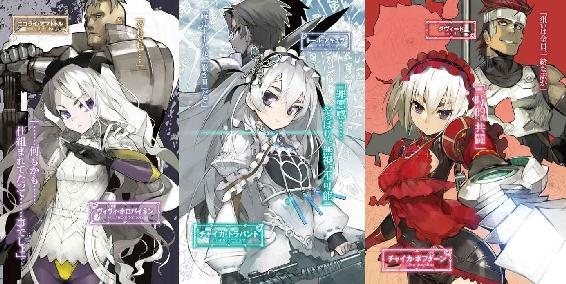

| 棺姫のチャイカVIII (富士見ファンタジア文庫) | |
| 榊 一郎 | |
| (2014) | |

棺姫のチャイカⅧ
一郎

富士見ファンタジア文庫
本作品の全部または一部を無断で複製、転載、配信、送信したり、ホームページ上に転載することを禁止します。また、本作品の内容を無断で改変、改ざん等を行うことも禁止します。
本作品購入時にご承諾いただいた規約により、有償・無償にかかわらず本作品を第三者に譲渡することはできません。
本作品を示すサムネイルなどのイメージ画像は、再ダウンロード時に予告なく変更される場合があります。
本作品は縦書きでレイアウトされています。
また、ご覧になるリーディングシステムにより、表示の差が認められることがあります。
口絵・本文イラスト なまにくＡＴＫ（ニトロプラス）
口絵・本文デザイン Lightning
序章 斬首王の懊悩
DISTRESS OF THE HEADSKING
そも......武に長じるとは、如何なる事か。
シュテファン・ハルトゲンにとってそれは、一生を懸けて追求すべき命題であった。
戦国の世に生まれ、武芸の才に恵まれ、更にはこれを磨く為の環境にも恵まれた彼は、齢十二にして大人顔負けの武芸を身につけるに至った。十五の時には既に、周りでは彼に勝てる相手が居なくなっていた。
そんなシュテファンの初陣は、しかしやや遅く、十六の時である。
これはハルトゲン公王の跡継ぎという彼の立場を慮った重臣達の配慮であった。いかにハルトゲン公王家の、代々武に長けた当主が輩出してきた家柄とはいえ、戦に『絶対』は無い。次期公王が初陣で戦死しては大問題だ。だから重臣達は慎重にシュテファンの初陣の時期を選び、確実に勝てると踏んだ戦いに彼を送り出した。
だが......その目論見は、大きく外れる。
公国側の軍勢は、敵国の奇襲により敗北を喫し──その武芸の才から、多大な武功を立てると期待されたシュテファン・ハルトゲン王子は、本陣に雪崩れ込んできた名も無い雑兵に傷を負わされ、這々の体で戦場から逃げ帰る事になった。
道場の試合と、戦場の実戦は、違う。
戦場においては、正々堂々と剣を向け合ったりなどしない。
それはごく一部──騎士同士の戦いにおいてのみ、意味のある様式美に過ぎない。
実際の戦場には、道場で習った武芸の技とはかけ離れた、泥臭く、身も蓋もない戦法や戦術に満ちあふれていた。
左手に握った砂を先ず相手の顔に浴びせかけて、目つぶしする。予め張った罠に誘い込む。徒党を組んで襲い掛かる。武器には毒や糞を塗りつける。身体のあちらこちらに隠し武器を仕込んで、不意打ちする。相手の動揺を誘う為に、口汚く罵る......
勝つ為には、如何なる行為も許される。
それが戦場なのだと──そんな当たり前の道理を、彼は改めて思い知らされた。
負けて死ねば、そこまで。
如何なる武人であれ、『敗北』の結果としての死だけが、後に残る。積み上げてきた武の研鑽は、その一瞬にして散じて、無意味に堕する。ただそれだけの事だ。
だから......シュテファンは考え方を、変えた。
「ひいっ......！」
悲鳴を上げながら首を振る老女の肩に、シュテファンは無言で剣を振り下ろす。
殲滅戦と最初に決められていた。ならば、容赦など思い出す必要も無い。
頭を狙わなかったのは、単に、頭部よりも左肩から斜めに斬り降ろす方が、殺傷力が高いからだ。頭蓋骨は、その丸みをもって剣筋を逸らしてしまう事がままある。シュテファンの武技であれば、それでも問題無く老女を両断出来たであろうが──殆ど意識する事も無く彼は、その状況における最適の方法、つまりは確実で、より殺傷力の高い攻撃を選ぶ。
嗜虐ではない。その様な隙を生み出す精神など必要無い。眉一つ動かさず、老若男女、一切の区別無しに殺傷する──それはもう淡々と稼働する機関の如き在り様だった。
老女は、狙い通り左肩から右脇腹までを切り裂かれて、倒れ伏す。
即死だろう。確かめるまでもない。シュテファン程の熟達者、しかも機剣使いともなると、刃に伝わる感触から何を斬ったかも分かる。これは肋骨。これは心臓。これは脂肪。これは筋肉。確かにシュテファンはその老女の心臓を両断していた。
「隊長ッ！ こちらです！」
部隊の一人──魔法師のシモン・スカニアが彼を呼んだ。
「──うむ」
軽く剣を振って血と脂を振り落とし、シュテファンはシモンが示した方向へと進む。
そこには豪奢な飾りを施された扉が、しかし半ば以上を抉られる様にして、開かれていた。シモンやロベルトが放った魔法攻撃の跡であろう。その際に巻き込まれたのか......傍には、原型を留めぬ程に破壊された衛兵の死体も、残っていた。
その惨状を、しかし、一顧だにせずに進むシュテファン。
頭の片隅で無駄な事を──と思いはしたが、それ以上の感想は無い。
必要な部位に必要な一撃。余計な体力を消耗せず、一撃必殺を以て一切合切を決着させる事こそ至高。相手を肉塊にする程の威力があるならば、その力で十人は殺せる筈ではないか。魔法師という者達は、いちいち無駄が過ぎる。
そして......
「──む？」
シュテファンは、その男と相まみえた。
〈禁断皇帝〉──アルトゥール・ガズ。
かの者については、様々な噂が流れており、その幾つかはシュテファンも聞き及んでいた。曰く数百年を生きているとか、曰く魔法技術の創始者であるとか、曰く稀代の魔法師でありながら、剣士としても超一流であるとか。どれもが眉唾物で、信じるに足る根拠など、何も無い代物であった訳だが──
「なんと......」
銀の長髪と、同じく銀の髯をたくわえた、年齢不詳の偉丈夫。
端正な顔立ちで......何よりも先ず印象に残る理知的な目許は、成る程、確かに為政者としても魔法師としても一流に見えるかもしれない。だが決して筋骨隆々たる体躯ではなく、むしろ全体としては、長身痩躯といった印象が強い。
にもかかわらず......
「はッ!!」
「りゃあッ!!」
竜騎士ドミニカ・スコダと、巨漢の機槍士クレイ・モーガンが左右から仕掛ける猛攻を、その男は、両手に携えた長剣と機杖で平然といなしていた。特にクレイの騎兵槍は、持ち手の身長よりも長く、騎兵を真下から馬ごとぶち抜く重量級の代物──刃こそついていないが、鈍器としても凶悪無双、生半可な剣士なら、受け止めた剣をへし折られかねない。
だがアルトゥール・ガズはこれを、危なげなく受け流し、反撃までしていた。
それどころか──
「──顕れよ〈雷撃〉ッ！」
シモンやロベルトが支援として放つ攻撃魔法すら、格闘の合間に呪文を唱えて起動する魔法で反射させ、あるいは無効化している。既に槍使いのアラン・トラモンターナ子爵と、弓士グレン・ドンカーブートは負傷して後方に下がっており、魔法師のクローディア・ダッジはその救護に手一杯だった。
いずれも得意分野は異なれど、使い手である。
命知らずの達人七名を相手に──たった一人で善戦どころか、圧倒する勢いだ。
「素晴らしい」
シュテファンは呟いていた。
彼は......〈禁断皇帝〉の姿に、感動すら覚えていた。
あれこそ武の究極ではないのか。数の暴力に負けず。逆境の最中にも焦らず怯えず。剣撃の隙間から放たれる魔法にすら対処する。
シュテファンは、数々の噂が──その全てが出鱈目で無いのだと、この時、知った。
だから......
「禁断皇帝──アルトゥール・ガズ！」
剣を掲げて前に出ながらシュテファンは叫んだ。
「その技の冴え──素晴らしい！ 故にこそ、貴様の武、制して我が糧とせん！」
「............」
ガズ皇帝は無言──余裕が無いというより、シュテファンの言葉など、取るに足らぬと思っているのは見て分かった。だがその程度の事でシュテファンは激昂しない。ただ淡々と殺す為の最善を尽くすだけだ。
シュテファンはドミニカとクレイの攻撃の隙間に、強引に割り込んで、剣を繰り出す。
自分でも最高の出来映えと思える一撃は──閃光の如き刺突は、しかし掲げられた機杖によって食い止められていた。
「おおっ!?」
クレイとドミニカが驚きの声を上げる。
一方で、技を止められたシュテファンは、しかし動揺せず、即座に剣を引きながら牽制の斬撃に切り替える。初撃にして必殺の一撃を防がれたのは久方ぶりだ。だが、それで動揺して隙を作る様なシュテファンではない。彼は二歩ばかり後方に下がりながら命じた。
「魔法師共！ 撃て！」
「──顕れよ〈第三の火炎〉ッ！」
「顕れよ〈引き裂くもの〉ッ！」
シモンとロベルトの魔法が襲い掛かる。
超高温の火炎と不可視の斬撃、それは、先程と同様にアルトゥール・ガズの展開した魔法の障壁によって防がれてしまったのだが──
「──！」
シュテファン以外の者達が、驚きの声を上げる。
甲高い音を立てて、禁断皇帝の掲げる機杖の一部が砕けたからだ。
先にシュテファンが放った突きを受けた部分──そこに亀裂が入っていたのである。魔法の発動による負荷がそこに集中し、機杖を破壊したのだ。
「畳み掛けよッ！」
シュテファンの叫びと同時にドミニカとクレイが改めて襲い掛かる。禁断皇帝の剣がドミニカの腹を貫くが、しかし──
「貰った!!」
ドミニカは己の腹を貫くその剣をむしろ両手で──アルトゥール・ガズの腕ごと抱え込む。不死身の竜騎士たるドミニカにとって、この程度は致命傷でも何でも無い。彼女は自らの身体を以て、禁断皇帝の右手を封じる策に出たのだ。
「だああああああッ！」
更にクレイの一撃が、禁断皇帝に襲い掛かる。
これを受け止める機杖がへし折れるが、クレイの一撃もまた逸らされていた。
機槍がアルトゥール・ガズの頬をかすめて抜ける、その瞬間──クレイの両脇から放たれた槍と矢の一撃が、禁断皇帝の脇腹に突き刺さっていた。
クローディアに応急処置を受けたアランの槍と、グレンの矢だ。
「むっ──」
さすがにこれは効いたのか、盤石の体勢で攻撃をいなしていた禁断皇帝が、その姿勢を揺るがせる。これぞまさに好機──そう判断したシュテファンは、再び間合いを詰めながら、横薙ぎの斬撃を放つ。
全身で旋回するかの様な......踏み込み、身体をねじる勢いに乗せての、強烈な一打。
これを受けるべき剣はドミニカが封じ、掲げようとした機杖を、クレイの機槍が押さえ込む。結果、無防備とも言える体勢で、禁断皇帝はその首を斬撃に晒すしかなかった。
ぞぐり──と皮と肉と骨を断つ感触。
（──!?）
だが......ある種の違和感を、シュテファンは覚えていた。
何がおかしいのか？ そう問われても答えられない。
ただ何か違う。そんな気がしたのだ。
しかし......シュテファンの違和感を余所に、勢いの乗った斬撃はそのまま左から右へと抜けていき、胴から切り離された禁断皇帝の首が、転がり落ちる。
ドミニカとクレイが手を離した。
禁断皇帝の首から下は、一歩、二歩、玉座の方に向けて後じさる様にして──それから、棒の様に倒れた。数百年を生きたと言われる怪物とて、やはり首を刎ねられては、死を免れ得ないらしい。
勝った──シュテファンは、足元に転がってきた生首を見下ろしながら頷く。
笑う様な真似はしない。淡々と結果を受け止める。ただそれだけ。一切揺らがぬ堅固な精神......それを以て武の神髄に更に一歩近付くのだ。
だが──
「──陛下ッ！」
悲鳴じみた声が、背後から聞こえる。
「姫様をお連れしまし──」
殆どそちらを見る事も無く、近付いてくる声と、気配から、相手の位置ばかりか、身長と体重までおおよそ判断──シュテファンは横薙ぎの一閃で、声の主の首を刎ねていた。
やはり、手応えはいつもと変わらない。
皮を斬り、肉を斬り、骨を斬る。何度となく経験していた感触だった。
では先程の──禁断皇帝を倒した際に感じた違和感は何なのか？
そんな事を考えながら、シュテファンは改めて振り返る。
そこには、侍女らしき女の首無し死体が一つ。
そして──
「............!?」
そこに、全く予想外の存在が佇んでいた。
銀髪と紫眼の──小柄な少女。
年齢にすれば、十代半ばといったところだろうか。華奢で、いかにも世間を知らぬと言いたげな、儚げな雰囲気を身に纏っている。この死滅と破壊の渦まく戦場においては、瞬く間に踏み潰されるしか無い、名も無き花の一輪に過ぎない──筈だった。
「〈禁断皇帝〉の娘!?」
誰かが驚いた様に言った。
「魔王に娘が居たか──初耳だが」
「しかし元より命令は、城内の全ての人間の抹殺」
「ならば是非も無い。隊長──」
指示を求める一同の視線が、シュテファンに向いた。
「............」
シュテファンは──束の間ながら、呆然とその少女を見つめていた。
理由は分からない。だがその少女を見た瞬間、シュテファンは言いしれぬ衝動が身体の奥底から噴き出してくる事に気付いていた。
居ても立ってもいられない──そんな、もどかしさが身を焦がす。
いざ剣を握って戦場に立てば、後はまるで機関の如くに淡々と、最適な殺傷行為を繰り返す......その事に特化していたシュテファンにとって、それは未知の感覚であった。武芸の修練に明け暮れる毎日には、感じた事の無い感情が胸の奥から溢れ出てくる。
もし彼がごく普通の庶民であったならば、すぐにその正体に気付いた事だろう。
だが、良くも悪くもシュテファンは、普通ではなかった。
心の中に生じた細波を、修練によって培った精神力が抑え込む。
肉体を鍛えるのと同様に精神も鍛えてきた。
不意打ちや、卑怯技を前にしても、動揺せずに対する事が出来る強靭な精神こそ奥義。如何なる瞬間においても明鏡止水──周りの全てを映す水面の如き心を保ち続ける事で、状況に左右されない、絶対的な力を手にする事が出来る。
揺るがぬ心は、稀代の名剣にも、練達の武芸にも、優る。
故に、如何なる状況でも動揺せず、最適な殺しを──そう自分で自分をしつけてきた。
老若男女の区別無し。貴賤善悪の区別無し。
邪に逢うては邪を斬り、聖に逢うても聖を斬る。
これを以て武の神髄と心得るべし──
「子供といえど例外は無い。後顧の憂いは断たねばならん」
シュテファンは前に一歩出ながらそう話し掛ける。身体と精神に刻みつけられた過酷な修練の成果は、彼自身の感情とは全く別の処で、勝手に彼を動かしていた。
「............」
呆然と、シュテファンを見上げる紫の無垢な瞳。
「──魔王の娘よ。許せとは言わぬ」
胸の奥底で持ち上がりかけた何かを圧殺し、シュテファンは剣を振り上げる。
今、娘の父の首を刎ね、侍女の首を刎ねた、その愛用の凶器を。
「好きなだけ罵り喚いて逝くがよい」
「............」
あるいは──少女が悲鳴を上げるなり、罵声を浴びせるなり、何らかの行動に出ていれば、未来は違っていたのかもしれない。しかし少女は何を言うでもなく、何をするでもなく、ただ無防備にシュテファンの前に立ち尽くしていた。
振り下ろされる剣。
皮を裂き、肉を裂き、骨を裂き──そこで。
「............！」
刃から己に伝わる絶命の感触、それを感じ取り、そこでようやく......シュテファンは、自分が、取り返しのつかない事をしてしまったのだと気付いた。
「──ッ！」
悲鳴じみた声を漏らしながらシュテファンは身を起こす。
息が荒い。汗もかいている。
平常心など、何処かに消し飛んでいた。
「はっ......はっ......はあっ............」
シュテファンの身体の震えに、ぎしりと寝台が軋む。
見れば、寝室は薄闇に満ち、窓辺から差し込む月明かりだけが、辺りをぼんやりと浮かび上がらせている。自分の城の──最上階。見慣れた寝室の景観だ。
「はあっ......はあっ......はあっ......」
最も安堵すべきその場に在りながら、しかし、シュテファンはまるで見知らぬ土地に放り出された幼子の様に、己の身を抱いて震える。そこに、ほぼ完璧な形で仕上がりつつあった武人の姿は無かった。己の感情を持て余し、眠りにすら安らぎを求められない、そんな哀れな男が一人居るだけだ。
「............ああ......ああああ......」
もう五年以上も昔の事であるのに、あの時の失敗が彼を捉えて放さない。
彼を今も──内側から責め続ける。
だが......あの血と炎に塗れた戦場の最中、自分が抱いた感情を、当時のシュテファンには理解出来る筈も無かった。自分が殺した敵の幼い娘。しかも自分とは一回りも歳が違う。そんな相手に一目惚れしたなどと──それが彼の『初恋』であったのだと、咄嗟に分かれという方が無茶だった。
だからシュテファンは己の初恋の相手を殺した──自分の手で首を落とした。
ただ一本の剣の様に、何も考えず、何も感じず、そんな状態を武芸の奥義と信じて。
「──大丈夫」
震えるシュテファンの頭を──華奢な白い手が伸びてかき抱く。
右から。左から。包み込む様にして......
「大丈夫よ」
「お父様」
さらりと銀髪がこぼれ落ちて、シュテファンの頬をくすぐる。
「おお......おおお......」
シュテファンは、左右の少女達に抱き締められながら何度も何度も頷いた。
許してくれる。この少女達が赦してくれる。彼女等の言う通りだ。大丈夫だ。
他の誰が赦す事が出来なくとも、この少女達だけが彼を赦し得る。
「............」
少女達は、そっとシュテファンから身を離すと、ベッドの左右に腰掛けて艶然と微笑んでくる。その容姿は、記憶の中のそれと寸分違わない。艶やかな長い銀髪と、大粒の宝石の様な紫の瞳。華奢で、迂闊に触れれば壊してしまいそうな──繊細な愛らしさが、そこに、まるで或る種の幻影の如く、息づいていた。
「......おお......アリーナ......イリーナ......！」
滂沱と涙を流しながら──薄衣を着た少女達を、シュテファンは腕を伸ばして、ひしと抱き締めた。
第一章 双子の姫君
TWIN PRINCESS
ぼんやりと睡魔に身を委ねていると──現実と夢想の境界が、曖昧になる。
まして、夢の中に出てくる風景が過去の記憶を基にしていると、余計にそれは、現と混ざり合って区別が付きにくい。
だから──
「──魔王の娘よ。許せとは言わぬ。好きなだけ罵り喚いて逝くがよい」
夢と分かっていても、情け容赦の無い言葉に、チャイカ・ガズは震えた。
自分の周りに、助けてくれる者は誰一人居ない。
根こそぎ居なくなってしまったのだ。
皆──殺されて。そして今、自分も殺されようとしている。
その場から逃れるだけの、体力も、気力も、技能も、無く。
周りを屈強な男女達八名に囲まれて。
その内の一人が振り上げた剣が、絶望に項垂れる彼女の首に──
............
「──ッ！」
首筋に衝撃らしきものを感じた所で──眼が醒めた。
「うっ......」
チャイカは自分の首筋に触れた。
現実と混じり合った追憶が、首筋の違和感として未だに残っている。
首をぐるりと取り巻く──ミミズ腫れ。
まるで斬首して落とされた頭部を、後から無理矢理に、接いだかの様な。
勿論、そんな事ができる筈はない。だからこれは単なる珍しい痣の類なのだろう。そうでなければ説明がつかないではないか？
「............」
仰向けに寝転んだままチャイカは溜息をついた。
父・ガズ皇帝の死。そして自分の上に振り上げられた剣。
そこから──ぶつりと、まるで切り取られたかの様に彼女には記憶が一年ばかり欠落している。それが当初は、衝撃的な体験によるものだとチャイカ自身は解釈していた。耐えきれない程の恐怖や悲哀に晒され、精神の自壊を防ぐ為に、忘れてしまったのだ──と。
だからこそ、チャイカは父の『遺体』を集めようと決めた。
自分は、父の死に様を見ていない。
その後、父の亡骸がどうなったのかも──後から噂で聞いて知った位だ。
その事について、チャイカは負い目を感じていた。いや。正しくは自分の記憶が無い事も含めて、父の遺体を集め、父の死を現実として受け止める事で、ようやく自分は記憶の空白を埋めて、あの日から踏み出せるのではないか──そう考えていた。
だが......それは本当に？
『遺体』を集めるチャイカの前に、同じく〈禁断皇帝〉の娘を自称する者達が顕れる。
チャイカを名乗る少女達。
彼女等もまた、抱えている事情は多少異なれど、同じく『遺体』を集めていた。我こそは本物の『チャイカ・ガズ』──『遺体』を所有すべき者と主張して。
彼女等が心底からそれを信じているとしたら、自分と彼女等にどれだけの違いが在る？
どうしてこんなにも沢山の『チャイカ』が居る？
自分は本当に──チャイカ・ガズなのか？
「............否定」
自らに諭す様にチャイカは呟いた。
自分の存在に疑問を覚えてはいけない。
それは今此処にこうして居る事すら否定する事になる。そして自分の目的の為に、命懸けで付き合ってくれている者達の、今までの苦労も全部、無にしてしまう愚考だ。
「......トール」
ふと隣を見る。
元軍用機車の、無骨で狭い車内──手を伸ばせば届く様な所に、寝ている若者が一人。
黒髪の、精悍な印象の青年である。今は眠っている様だが、寝て居てすら、その姿に緩んだ雰囲気は無い。休憩すら、次に全力で動く時の為にとっている、一種の補給──そんな風にすら見えた。
トール・アキュラ......チャイカに付き従ってくれている乱破師である。
一応は金で雇っている事になっているが、実際に、トールに対してチャイカが何か金銭を支払った事は無い。強いて言えば、この旅の最中にかかる費用、食事その他は、トール達の分も含めてチャイカが負担している、という程度の事だ。
無論、喰うに困った人間は、一欠片のパンでも喜んで他人を刺すが──では、常に命懸けの行為を強いられるこの旅の報酬として、それは本当に釣り合っているのだろうか。チャイカには分からない。
だが自分は、他に彼に与えられるものが無い。だから、彼の好意に甘えるしかない。
そんな事を考えながら、チャイカはトールに背中を向け、改めて眠ろうと眼を閉じ──
「......ッ!?」
──かけた彼女の背中に、触れるものがある。
誰かの指先。いや手だ。それが彼女の背中を撫でさすっている。
そっと──優しく。しかし大胆に。
掌は緩やかに滑って背から、脇腹へ回り込み、更に腹から胸へと昇ってくる。まるでチャイカの肌の柔らかさを確かめるかの様に、力を込めて、緩めて、を繰り返しつつ。
チャイカは混乱して、思わず声を出しそうになるが──これを堪えた。
（トール......!?）
眠っていると思っていたのだが。
ちなみに、トールの義妹のアカリ・アキュラは外で不寝番をしている筈だ。
装鎧竜の化身であるフレドリカも外に居た筈で。
ならば──
「............ん」
思わず声が漏れる。
手は胸から更に鎖骨や首筋へと進んでいた。既にチャイカは背中に他者の体温を感じている。これは背後から抱き竦められている様な状態なのだろう。
（......トール）
命懸けで、自分を助けてくれているトール。
彼が求めるのならば、差し出せるものは何でも差し出して構わない──とは思う。
思うが、しかし、こうもいきなりというのは、やはりチャイカとしても躊躇を覚える。
「ト......トール......！」
囁く様にその名を呼んで、身を捩るチャイカ。
肩越しに振り返った彼女は──
「............!?」
何処か、ぼんやりとした光を宿す、金銀妖眼と見つめ合う事になった。
愛らしい顔に、緩い無表情のみ宿した──少女。
「............ニーヴァ？」
呆然と呟くチャイカ。
ニーヴァ・ラーダ──旅の途中でチャイカ達が『手に入れた』何だかよく分からない存在。少女の姿をしてはいるが、恐らく彼女は人間ではなく、人の姿をした別の何か、だ。
「な、何してるの？」
チャイカはラーケ語で尋ねた。
トール達と会話する時は基本的に標準公用語を使うが、ニーヴァに関しては非常にラーケ語が堪能らしいので、どちらを使っても問題が無い。チャイカの場合、動揺するとついつい母国語であるラーケ語が出てしまう事は、ままあった。
「......調べて、いる」
ニーヴァは、ぼんやりとした口調でそう答えた。
ひどく眠そうに見えるが、その顔とは別に、今もその両腕はチャイカの身体をあちこちまさぐっては揉みしだいている。まるで首から下が別の生き物であるかの様だ。
「調べるって、何を？」
「......チャイカの、身体」
「な、なんで？」
「......今後の、為に。......隅から隅まで知っておく、べき」
どうも希望ではなく義務らしかった。
「......調査を続行、する」
「ちょ......や......あっ......」
更にチャイカの全身を触りまくるニーヴァ。
一体何がどう今後の為なのか、全くの不明だが、ニーヴァは構わず宣言通りにチャイカの愛撫──もとい調査行動を続けている。
「や──やめてっ!!」
さすがにくすぐったいやら恥ずかしいやらで耐えきれなくなって、思わず強引にニーヴァの手を掴んで自分の身体から離すチャイカ。
そしてそこで──気付いた。
ニーヴァの肩越しに、眠っていた筈のトールが──いつの間にか、精悍なその顔に呆れの表情を浮かべて、こちらを見ているという事に。
「トール......!?」
「何やってんだ、お前等は。妙な声出して──そういう趣味なのか？」
「や、ち、違っ──誤解、禁止！」
標準公用語に戻して言うチャイカ。
恥ずかしさで顔が真っ赤に火照るのを止められない。色白の自覚がある分、顔色の変化が如実に出る事についても、自分でよく分かっていた。
「不許可、見る！」
「いやまあ、別にどうしても見たいってものでもないが」
とトールはあっさりそう言って、チャイカ達に背を向ける。
「トール！ 失礼！」
だが彼の背に向けて憤然とチャイカは叫んだ。
「何がだよ」
面倒臭そうな表情で、肩越しにこちらを振り返ってくるトール。
「見る希望しない、失礼！」
見て欲しい訳では勿論ないが、別に興味が無いと言われるのも、それはそれで釈然としない訳で──
「どうしたのだ、兄様──」
機車の扉を開いて、顔を出す若い娘が一人。
トールの義妹にして、チャイカにとってはもう一人の従者、アカリ・アキュラである。
「............」
彼女は、怜悧な印象を持つその整った顔を、微塵も歪ませず、揺るがせず、ただ静かにこの様子を見て、頷いた。
「そうか」
「何を納得顔で頷いてんだ、お前は」
とうんざりした様子で身を起こしながら、トールは問う。
「兄様はむしろ女の子同士を傍らで愛でるのもいける口だったな」
「何の話だよ！」
「だが兄様。悪いが私はその趣味は無いのだ。だから私とチャイカのそういう場面を求められても困る」
「求めねえよ！」
「敬愛する兄様の頼みなら大抵の事は聞ける積もりだが......」
「聞けよ。いや、聞かんでいい」
「兄様がしろというのなら、その辺の村の、何の罪も無い人間を、老若男女問わずに皆殺しにするのも厭わないが......」
「それは厭え！」
「さすがに女同士はない。いかに兄様が獣の様に求めてきても、それはない」
「......皆殺しの方が敷居が低いとか、どんだけ歪んだ価値観の持ち主なんだよ、お前は」
唸る様に言うトール。
まあ、この辺りのやりとりはいつもの事だ。
ただ──
「トール！」
「なんだよ？」
「止める、止める、見てるのみ、禁止！」
尚も延々と自分の身体を撫で回し続けようとするニーヴァの手首を掴んで、チャイカは悲鳴じみた声を上げた。
長い長い戦乱期が終わった。
北方の大国──ガズ帝国を中心として数百年にわたり巻き起こった戦乱の渦は、その芯とも言うべきガズ帝国皇帝の死と共に、消滅した。
多くの人々は初めて接する概念、即ち平和に戸惑いながらも、ゆっくりと、しかし確実にその新たな時代になれ始めていた。
だが......誰もがそう簡単に、時代の変化を受け入れられた訳ではない。
物心ついた頃から、戦乱の中で生きる術を徹底して叩き込まれてきた乱破師のトール・アキュラや、アカリ・アキュラなどは、その典型だった。平和なだけの時代に彼等の生きる場所は無く、身につけた様々な技術を持ち腐らせながら、彼等は戦後を生きていた。
そんな時、彼等が出会ったのが、チャイカ・トラバントという少女である。
彼女は──ガズ皇帝の忘れ形見だった。
『父をきちんと弔いたい』
八人の『英雄』によって分割され、持ち去られた父の遺体を探して歩く少女。
彼女の周りに、切望した戦争の焦臭さを感じ取ったトール達は、彼女を助けて旅をする事に決める。彼女の存在が、再びこの世界に戦乱を呼び込むのだと言われても、むしろ、それはトール達にとって望む所だった。
しかし......旅の途中で、トール達は他の自称『チャイカ』達にも出会う事になる。
銀髪と紫の瞳に加え、記憶に欠落を持ち、遺体を集める少女達。
彼女等は、一体何なのか。
一人を除いて、残りは偽物なのか。それとも──『チャイカ』という少女の存在そのものが、何者かによって仕組まれた壮大な虚構でしかないのか。
分からないまま、トール達を囲む事情は、より、特異なものへと変化していく。
棺担ぐ姫君──チャイカ・ガズ。
彼女等は、自身も知らぬ運命の中、今日もガズ皇帝の遺体を探して彷徨する──
ぱちぱちと火の爆ぜる音がする。
街道から僅かに逸れた場所──山間部の切り立った崖が続く一郭に、丁度良い洞窟が見つかった為、トール達は久方ぶりに堂々と火を焚いて、温かい食事にありついていた。普段は追っ手であるジレット隊に見つかる可能性を考えて、街道から少し逸れた場所に、機車を隠し、火も使わず野営するのが常なのだ。
「そろそろか」
呟いてトールは鉄串を回し、焼け具合を確認する。
隣の鍋も頃合いだ。食材は保存食と、そしてトールが獲ってきた野鳥を三羽ばかりさばいたもの。肉や内臓は勿論だが、骨も砕いて煮込んで出汁をとる。こういう料理──というより野外での自炊は乱破師の基本技能なので、トールもアカリも手慣れたものであった。
「喰うか？」
「......喰う」
試しにトールが差し出した鶏肉の串焼きを、新参の少女──ニーヴァはこっくりと頷くと受け取り、普通に食べ始めた。
「喰う以上は、生き物、なんだよな、これ」
とトールは眉をひそめてニーヴァを見つめながら言った。
ニーヴァは、変形し、チャイカの使う魔法機杖の追加部品となった──その光景を、トール達も見ている。その時のニーヴァは、とても生き物の様には見えず、むしろ機械そのものの様にも思えたのだが。
「棄獣の器官、部品、使用」
とチャイカがニーヴァの方を見ながら言った。
魔法機杖と同化した際、ニーヴァは自身の基本的な使い方から構造まで、チャイカの頭の中に情報を流し込んできたらしい。もっともニーヴァ自身がそう多くを知っている訳ではないのか、結局、彼女が何の為に作られ、何を求めてチャイカを待っていたのか、分からないままなのだが。
「生物の器官。栄養必要」
「......生き物の部分と、機械の部分が混在してるって事か？」
「うい」
「どういう存在なんだそれ......？ 変身するって事は装鎧竜の部分も在るんだろうけど」
「──呼んだ？」
ひょいと──洞窟の入り口から、一人の少女が顔を出した。
金髪と、そして血の様に赤い瞳。笑うと牙の様な八重歯が見える。
まるで仔猫の様な、可愛らしい容姿だが......しかし、この少女に限って言えば、その姿の美醜を論じる事にさしたる意味は無い。いくらでも変えられる代物だからだ。
フレドリカ──姓は無い。
東の六四五番、という訳の分からない個体名も在った様だが、今はトールのつけたこの名を、自らも認めて使っている事が多い。彼女は、人間では無く、装鎧竜の化身だ。
「呼んでねえよ......っていうか何処に行ってたんだよ」
トールはフレドリカを睨み据えながら問うた。
この装鎧竜の化身は、時折、ふらっと居なくなって、また戻ってくる、という事を繰り返している。トール達は移動しているのだが、きちんと追尾できている様で──もう、彼女が居なくなっても、トール達はあまり気にしなくなっているが。
「適当に御飯食べてきた」
とフレドリカが屈託無く答える。
「そういえばお前がメシ喰ってる所は──それこそドミニカの格好している時位しか見た事が無いが。普段どうしてんだ？」
「そこらの動物とか植物とか適当に食べてるよ」
「......雑食なのか？」
少し意外に思いながら、トールは問うた。
「何でも食べるよ。好き嫌いしないよ」
朗らかとも言える笑顔で、フレドリカは言う。
「草も木も犬も猫も猪も馬も牛も人も。あ、岩とかもたまに。鎧とかの材料になるし」
「............岩って。そういえば竜騎士の契約の時は人間の身体喰うんだっけか」
「勿論、大きくなったら丸ごともいけるよ？」
何か妙に期待に満ちた眼でトールを見つめながら、フレドリカは言った。
「いくな」
とトールは唸る様に言ってから、溜息をつく。
「そもそも装鎧竜自体が、生き物かどうかも怪しくなってきたな」
自前で鎧や剣をも『変身』の魔法の範疇として造り出していたのを、トール達は見ている。という事は、鋼鉄か──少なくとも強度の面においてそれに類するものを装鎧竜の魔法は造り出せる事になる。ならば装鎧竜の器官を移植されているというニーヴァが、機械状の構造体に変化するのも、おかしくはない、と考えるべきか。
「考えても仕方ないか。この辺の事情を知ってそうな奴はぶっ殺しちまったしな」
ギイ──と名乗った謎の少年。
トール達に情報提供をしてくれていたので、少なくとも敵ではない、と思っていたのだが。先にトール達が訪れる事になった島で、その態度を急変させ、トール達を亡き者にしようと、現地のガズ帝国残党をそそのかした。
結果、ニーヴァがチャイカの血に反応、大型の魔法機関に変形してチャイカとその魔法機杖に絡みつき、何か強大な魔法を発動──通常の魔法では殺せる筈の無いギイを、殺した。これは、単にチャイカが自分を殺せる武器を手に入れる事を恐れたからか、それとももっと別の理由が在ったのか──そもそもギイの目的は何だったのか、それも分からないままである。
「とりあえずは遺体集めに精を出すしかないか」
一度、敵に回った以上、ギイの情報を信用すべきかどうかは疑問が残るのだが──しかし、ギイが『変節』したのはガズ帝国残党が隠れ住んでいた島に着いてからだ。次の遺体の情報はそれ以前に与えられているので、信用にたると考える事も出来る。
「ハルトゲン公国──」
とアカリが鍋をかき混ぜながら言った。
ハルトゲン公国。それがトール達の、現在の目指す地である。
「公王シュテファン・ハルトゲンが〈八英雄〉の一人だという話だ」
「ああ。あの『若造』──」
しれっとした口調でそう言ったのは、フレドリカである。
元〈八英雄〉の一人、ドミニカ・スコダと契約した竜であった彼女は、当然ながら、他の〈八英雄〉についても見知っている。ただ、元々ドミニカ以外の人間についてはあまり興味を持っていなかった彼女は、個々人の名前や素性までは記憶していなかった様だ。
「若造？ その公王がか？」
「何人かが、陰で『若造』と言っていたのを聞いた事があるよ」
とフレドリカは言った。
「人間の場合、年長の者がより偉いという価値観が在るんだったっけ？ 年功序列？」
「まあそういう傾向はあるがな」
と苦笑して応じるトール。
恐らく年齢という意味では、この一行の中ではフレドリカが最も年長だろう。竜に人間の年齢尺度を当てはめて良いのかどうなのかは、疑問が残るが。
「で、あの『若造』がどうしたの？」
「その『若造』──ハルトゲン公王の所に行く予定なんだよ。多分、遺体を持ってる」
「元々武人として名高いらしいな、ハルトゲン公王は」
と──アカリが言ってきた。
定期的に食料や消耗品の買い出しで街や村に入った際、様々な情報を仕入れてくるのは彼女の役目だ。決して愛想が良いとは言えない娘なのだが、そこはやはり若い女、無愛想な若者が話し掛けるよりも──トールの事だ──大抵の相手は口が軽くなるらしい。
「先に寄った街でも有名だったぞ。八英雄の一人である事も公言しているそうだ」
「そりゃまた──いや、まあ、公国の王な訳だしな」
八英雄については、その名前は公表されていない。
これは各国の思惑が絡み合った結果──ガズ帝国討伐における、連合国側の、領土分割などにも絡む問題であった為、『八人の特攻隊がガズ皇帝を討った』という話が表に出ているだけで、個々の名前までは公表されていないのだ。
だが......公王ともなれば、一国の主である。自身の権威付けを、他国への顔色窺いよりも優先する、という事は普通に在り得るだろう。
「ガズ皇帝討伐も、ハルトゲン公王の持つ武勇伝の一つとして知られている様だ。他国はこれを認めもしなければ否定もしない、無視している状態とか」
「まあ......そうだろうな」
「で、ハルトゲン公王は、自身が武人という事も在り、国民に対して武術を奨励しているらしい。武術振興の一環として、定期的に武術大会も開かれるそうだ。元々は先々代ハルトゲン公王の時代から──戦中から開催されていたもので、かなりの歴史が在るとか。戦後は二年か三年ばかり、中断していた様だが」
「戦後の国内整備を優先したって事か？」
「その辺の事情は聞き出せなかったが──とにかく、かなり白熱する催事だとかで、公国内のみならず、近隣諸国からも見物客が詰め掛けるらしい。公営の賭場も開かれて、それなりの金も動く様だ」
「武術大会、ねえ」
トールは興味なさげに呟く。
道場や試合場での『試合』については、乱破師としてのトールはあまり興味が無い。
どんな手でも──時に世間では卑怯卑劣と評される様な手段でも、躊躇無く目的達成の為に使う乱破師は、競技としての武術には縁が無い。戦い方がそもそも違い過ぎるのだ。
「で──問題はここからだが」
とアカリはやや口調を重いものに切り替えて言った。
「優勝賞品が『遺体』なのだそうだ」
「......!?」
さすがにこれにはトールも驚いた。
勿論、ここでいう『遺体』とはガズ皇帝の亡骸の事だろう。
「武術大会は戦後、三回目か四回目なんだろ？ だったらもうその公王は『遺体』を持ってないんじゃないのか？ 既に過去の優勝者が持ち去って──」
「実は明言はしていないらしい。武術大会の募集告知には、『シュテファン・ハルトゲン公王がガズ帝国帝都攻防戦において持ち帰った、非常に希なる戦利品』としか記されていない様だが......」
「そりゃ『遺体』ですよと言ってる様なもんだな」
唸る様にトールは言った。
「で、優勝賞品は幾つかの中から選ぶものであるらしい。なので、過去の優勝者達は正体の分からない『戦利品』よりは、より確実な仕官の道や、金銭を選んできたそうだ」
当然と言えば当然の話である。
だがトール達にとっては、金銭や仕官の道よりも、『遺体』の方が重い。確実に『遺体』を手に入れたいと思うなら、優勝者が決まる前に動く必要が在るだろう。
だがアカリの仕入れてきた情報によると、そう時間的な余裕は無い様だ。
武術大会の開始は五日後だという。
とりあえず、明日にはハルトゲン公国入りも出来る。トール達の乗る機車〈スヴェトラーナ〉号の速度ならば、三日もあれば首都のゲランソンまでも辿り着けるだろう。
「さて──どうしたもんだかな」
鉄串の先で焚き火の薪を掻き回しながら、トールは物憂げに言った。
じっくりと吸った煙草を摘まんで、唇から離す。
胸に満ちたていた煙が、自然と唇から漏れていくのに任せながら──〈クリーマン〉機関長コンラート・シュタインメッツは、バルコニーの手摺りに背中を預け、しかめ面で手元の書類を睨み据えた。
『ヴィヴィ・ホロパイネン身上調査書』
書類の頭にはそう書かれている。
「馬鹿げた話だな」
誰に言うでもない呟きであったが、返事は来た。
「不愉快に思われるお気持ちは分かりますが、書類は執務室で閲覧ください」
眼を上げると、そこには部下の女性補佐官カレン・ボンバルディアが無表情にこちらを見つめている姿が在った。仕事に私情は挟まない──というのが彼女の美点であるが、それを上司にまで徹底して求めるのは、彼女の欠点だとコンラートは考えていた。
「煙草をやりながらでないと、破り捨ててしまいそうでな」
「誰の責任でもありますまい」
「それはそうだろうが。自分達の道化っぷりがたまらん」
とコンラートは言って、改めて煙草を口に咥えた。
ジレット隊が、隊長であるアルベリックの死亡報告と共に、〈クリーマン〉機関からの離脱宣言を書簡で送りつけてきたのが、数日前。その際に副隊長であるニコライが、部隊の一員であるヴィヴィの『変容』について書き記していた。
いわく、アルベリックの死を知った彼女は錯乱し、その髪が白銀に、瞳が紫に変じたという。しかも錯乱と同時に他の隊員達に襲い掛かったとか。
その後、ギイと名乗る謎の人物から接触が在り、ヴィヴィは『チャイカになるべく用意されていた少女の一人』らしい事が分かる。誰がそんな事を仕込んだのか、どんな方法を採ればそんな事が可能なのかは分からないままだが、実際、ヴィヴィがチャイカの特徴である銀の髪と紫の瞳を備えるに至っては、世迷い言と切って棄てる訳にもいかない。
要するに──〈クリーマン〉機関は、チャイカにチャイカを追わせるという、ひどく間の抜けた事をしていた事になる。
改めてコンラートは、ヴィヴィ・ホロパイネンの身の上について調査を命じ──その報告書が上がってきたのが、先程だった。
内容については、カレンも眼を通しているだろう。
ヴィヴィ・ホロパイネンは、とある貴族が、政争の道具として育てていた少女であり、暗殺技能を仕込まれていた。勿論、その貴族の実の娘ではなく、孤児だ。彼女が何処で生まれ、件の貴族に拾われるまで、どの様に生きてきたのかについては、全く分からない。〈クリーマン〉機関に所属する際、彼女自身の申告によれば、物心ついた時点で既にその貴族のもとで育てられていたというから、もし『仕込み』が在ったのだとすれば、それは十年以上前、つまり、終戦前という事になる。
もし〈禁断皇帝〉アルトゥール・ガズが自分の『娘』としての『種』をあちらこちらの孤児に植え込み、野に放ったのだとしたら──果たしてそれは、どれだけの数にのぼるのか。十人か。百人か。千人か。あるいは万人か。
そしてそれは──具体的には、何をさせる為のものなのか。
チャイカを名乗る者達の多くは〈禁断皇帝〉の遺体を集めようとする。
だが彼女等の存在自体がアルトゥール・ガズの仕組んだものだとしたら、何故そんな真似をさせようとする？ 自己満足か？ 自分の遺体を弔わせる為？ アルトゥール・ガズとはそんな感傷的な人間であったのか？ それとも──
「ひょっとして我々は、未だ〈禁断皇帝〉か、あるいはコレを仕組んだ誰かの掌の上なのか？ それとも──違うのか？ どう思うね？」
「分かりません」
端的に答えるカレン。
私情を差し挟まない──根拠の無い不確かな推測は、多分に個人的な希望を反映してしまう──彼女らしい回答ではある。
「ただ、ここまでの事が予め仕込める事が可能な〈禁断皇帝〉が、どうして死んだのか」
「それは討たれたからだろう。〈八英雄〉に」
「それ以前に、列強諸国が奇跡的に同盟を組んで、ガズ帝国を滅ぼしたからです」
「............」
コンラートは眉をひそめる。
奇跡的。普通ならば在り得ない事。
まるで神の御業の如き──
「つまり──それすら？」
「だとすれば、我々の手に余ります」
カレンは淡々とした口調でそう断じた。
「その全てが〈禁断皇帝〉の仕組んだ事ではないのかもしれませんが、だとすると〈禁断皇帝〉に対し、これに匹敵する、あるいは遥かに凌駕する『敵』──我々には認識すらし得なかった第三の勢力が存在する可能性が、出てきてしまいます」
「............『敵』」
コンラートはその言葉を舌の上に転がしてみる。
敵。一体、誰にとっての？
〈禁断皇帝〉の敵？ アルトゥール・ガズは、列強諸国と戦っていた訳ではないのか？
「......我々は最初から舞台に上がってすら、いなかったと？」
「あくまで、私の想像に過ぎません」
カレンのその言葉は──しかし何の慰めにもならなかった。
鈍い駆動音をたてながら機車〈スヴェトラーナ〉号が走る。
御者台で操車桿を握っているのは、勿論、チャイカである。形は違えど機車も機杖と同じく魔法機関の一種──魔法師かこれに類する者にしか操車出来ない。正確には操車は他の者でも出来るが、その際に魔法師も機車に繋がっている必要があるのだ。
当然、移動中はずっとチャイカが休む事は出来ない。
疲れが溜まれば......特にうっかり居眠りなどすると、事故の類を起こしてしまうこともあるので、護衛の意味も兼ねて、御者台にはトールかアカリが一緒についている事が多い。
今もチャイカの横に座りながら、トールはのんびりと夜空を見上げていた。
ちなみにチャイカを挟んで反対側にはニーヴァが居る。彼女はまるで飼い主に甘える猫の様にチャイカの膝に、己の上半身を乗せている。眠っている様にも見える態勢だが、その金銀妖眼は、ぱっちりと開いたままだ。
元々二人乗りの御者台では、三人はやや窮屈な印象である。
「......トール」
ふと何か思いついた様子でチャイカが声を掛けてくる。
「なんだ？」
「島での事。棄獣。私達。父様の──事」
呟く様に列挙するその声には、わずかながらも不安が滲んでいる様に思える。
次から次へと予想外の出来事を──想像だにしなかった事実を突きつけられてきた。
棄獣とは何物かに創られ、棄てられた『失敗作』で。
人間とは実は、八番目にようやく出来た『完成品』で。
そして何故かその隠された事実に──ガズ皇帝が関わっていた様で。
手に入れたニーヴァは、本来殺せない何物かを殺す為の道具で。
だがそれを創る事を計画したガズ皇帝は既に死んでいて。
「私──」
最初はただ『父の遺体を集めてきちんと弔いたいだけ』だった。
少なくともチャイカはそう言った。そのつもりでこの無謀とも言うべき旅を続けているのだと。そうしないと自分は、過去に囚われたまま、一歩も前に進めないのだと。
父を見とれなかった罪悪感。
自分だけ生き残った罪悪感。
それをまず解決してこそ、自分は未来を向く事が出来る。
極めて単純で──純粋な理由であった筈なのだ。
だが......旅を続け、『遺体』を集めれば集める程に、複雑で、個人の思惑とは明らかに規模の異なる何かが掘り起こされてくる感触がある。『チャイカ』を名乗る複数の少女達と出会った処まではまだしも──棄獣や、人間という種族、その誕生の理由などという途方も無い話まで絡んできては、確固たる自分の気持ち、自分の決意も、まるで意味の無い空虚なものに思えてしまう──
チャイカの考えているのは概ねそんな処だろう。
「言いたい事は分かるがな」
皆まで言わせず、トールは溜息をついた。
全て細かく聞かなくても分かる。
自分を捕らえる過去という鎖、これを断ち切って、初めて前を向いて歩き出せる──そう考えたのはトールも同じであるからだ。
「怖くなったか？」
「............」
頷きもしないし無言のままだが、それは肯定なのだろう。
自分の行動が、何処かで、何か途方も無いものと繋がっている。
何が起こるのか分からない──そんな、不安。
「トール。後悔、ない？」
「ねえよ。全然。むしろ望む所だ」
トールはにやりと笑って言った。
「忘れたのか？ 俺の望みはこの世界をぶっ壊す位に変える事だぞ」
「............」
「事があまりに大きくなってびびるのは分かるが。俺としてはむしろ有り難い。ただ生まれて、生きて、死んで、何も変わらず、何も変えられずに消えていく、そんなのが俺は嫌だった。だから、お前の周りに起こる騒動に期待した」
「トール......」
「傑作だろ」
トールは不敵な笑みを浮かべて言った。
「たった一人の人間が。ただ、殺されれば死んでしまうだけの、脆弱な肉と骨と血の塊でしかない人間の覚悟が、思惑が、気持ちが、世界を──変える。世界の在り方に影響を及ぼしてる。冷酷に俺達を見下ろしているだけだった世界を、チャイカ、お前は揺さぶってるとも言える訳だろ。そしてその手伝いが出来るんだ、俺も本望だよ」
「............」
眼を瞬かせるチャイカ。
そんな事は考えてもみなかったのだろう。
「私──トールの為、意味、ある？」
「ああ。勿論」
トールは頷いた。
「だから気にするな。お互いただの人間だ、だからこそ、世界を揺さぶれるのが痛快、それ位、緩く考えててもいいだろ。他にしたい事が出来たってんなら、無理強いはしないけどな」
「............」
首を振るチャイカ。
彼女の膝の上で──
「......遺体を集めるのは、絶対」
ニーヴァがふとそんな事を言う。
「......チャイカとはそういう、存在。......私の、主。......ずっと待って、いた」
そう言ってニーヴァがチャイカの太股に顔を擦り付ける。
「あっ──やっ......ちょっ？」
「やめろ、こら、危ない！」
身を捩るチャイカと──彼女に連動するかの様に、右へ左へと蛇行する〈スヴェトラーナ〉号。慌ててトールはニーヴァを彼女から引きはがそうとするが、ニーヴァはニーヴァでがっちりチャイカの腰に手を回して、離れようとしない。
「危ないつってんだろ、こいつ！」
「......チャイカは私の、主」
お前のじゃない、とでも言いたげに上目遣いにトールを睨んで、ニーヴァが言う。
「分かった、分かった、後で好きなだけくっついていいから、今は離れろ！」
「トール!? 勝手に保証!?」
「しょうがねえだろが!?」
何処か湿って重たかった空気を吹き飛ばし──激しく揺れながら、〈スヴェトラーナ〉号は夜の街道を進んでいった。
早朝の空気を震わせる、鈍い轟音と共に──門が開いていく。
大型の機車が並んで行き来出来る程の、立派な関所である。勿論、ただ門が置かれているだけでなく、その向こう側には広場が在り、そこで順番に入国者を検分するべく、兵士達が待ち構えているのが見えた。
此処で、入国者は関税を掛けられると同時に、不審な人物は排除される。本当の入国は、彼等の更に向こう側、内門をくぐり抜ける事で果たせるという仕組みだ。関所などと言っているが、此処は元々、砦であった設備を改装して造られている為、強引に突破するのは一軍を率いていても難しかろう。
「......ふむ？」
機車〈エイプリル〉号から降りて、近寄ってきた兵士に通行証を示して見せながら──ニコライ・アフトトルは眉をひそめた。
前述の通り、この関所は、単に関税を徴収するだけでなく、不審人物を排除する為の機能を備えている。つまり見るからに怪しげな連中は、即刻、入国のための列から外されて、兵士達が待つ尋問所に連れて行かれる訳だが。
どうにも、風体の怪しい連中が目立つ。
「どうしたの？」
と傍らで問うてくるのは、同じジレット隊の一人──暗殺者のヴィヴィ・ホロパイネンである。銀の長い髪と紫の瞳は、かつてニコライ達が追っていたチャイカ・ガズそっくりだが、その言動は変わらず、ニコライ達のよく知るヴィヴィのままだ。
「怪しい風体の連中が多いんだよ。武器を、これ見よがしに携帯してる」
徒歩なのか、騎乗なのか、あるいは乗合馬車に乗ってきたのかの別はあれど、武装を隠さず、むしろ堂々と見せびらかす様に持ち歩いている者が多いのだ。
勿論、許可さえとれば武装して入国する事も可能だが、誇示する様に武器を携帯していると、素行不良だとして、こうした関所では何かと理由を付けて足止めを喰らう事が多い。
「あんただって怪しいわよ？ 鎧姿のままじゃん」
「悪かったな。あんまり身体が軽いと浮いちまうんだよ」
苦笑して、そう応じるニコライ。
確かに機剣こそ携えていないが、鎧を着たままなので、武装していると言えなくもない。基本は防具とはいえ、手甲も拳を握って殴れば充分に凶器たり得るからだ。
「──通行証を」
と手を出してくる兵士に、ニコライは〈クリーマン〉機関の通行証を示す。もしコンラートが手を回していれば、使えなくなっているだろうが──恐らくあの機関長は、そんな事をしない、とニコライは踏んでいた。
「ふん......」
兵士は、書類に何かを書き込み、通行証を返してくる。
「〈クリーマン〉機関所属、アルベリック・ジレット所有、〈エイプリル〉号──中には六名か」
「いや。五名だ。一人、別行動しているのでね」
とニコライはちらりとヴィヴィの方に視線を飛ばしてから言った。
勿論──アルベリック・ジレットはもう居ない。だが『死んで居なくなった』と言うのは憚られた。少なくともヴィヴィはその事実をひっくり返す為に動いているのだから。
「ヴィーマック王国公的特権──ふん」
通行証を、表も裏も何度も確認しながら、兵士は鼻を鳴らす。
一般の通行証と異なり、〈クリーマン〉機関が発行したこれは、兵士の車内臨検を拒む事が出来る。公的機関に所属する機車に与えられる特権だ。お陰で大抵の関所では速やかに領内に入る事が出来るが──当然、兵士達からは、あまり良くは思われない。
「......ん？」
ふと──兵士の視線がヴィヴィの所で停まる。
「──姫様達と同じか」
兵士がそう呟いたのを、ニコライは聞き逃さなかった。
「姫様？ なんだ？ ハルトゲン公王陛下の姫君の話か？」
「......銀の髪と紫の瞳は、まあ、珍しいからな」
「姫様達と言ったが、姉妹なのか？」
「双子だよ。まあ、養女だがな」
兵士は更に手元の帳面に何かを書き付けると、その一枚を千切って差し出してきた。
「ほれ。こいつを内門の衛兵に見せろ。後がつかえてるんだ、さっさと行け」
兵士は面倒臭そうにそう命じてくる。
「ただでさえ『祭り』のせいで入国者が多いんだからな」
「『祭り』？」
「知らないで来たのか？ 武芸大会だよ」
そう言って──兵士はまるで、犬か猫を追い払うかの様な仕草で手を振る。
ニコライ達は更に問おうとしたが、兵士の方は既にもう彼等に興味を失った様子で、〈エイプリル〉号の後ろに控えていた馬車の方に向かって歩き出していた。
その様子を見送りながら──
「まさか、ハルトゲン公王の娘達って」
紫の眼を細めて呟くヴィヴィ。
彼女は自分の長い銀の髪を手にとって見つめ──それから遥か西の方を見遣る。
その空の下に、ハルトゲン公国の首都ゲランソンが在る筈だった。
首都ゲランソンの一郭に在る宿場町は、大層な賑わいを見せていた。
通常の街では、交易商人や少数の旅行者が泊まるだけの施設である為、繁忙期を基準に利用者数が想定され──精々が数軒の小さな宿屋が軒を連ねる程度でしかない。首都であろうともそれは変わらない。多少その軒数や宿屋の規模が変わるだけの事だ。
しかし......此処では少々、事情が違う様だった。
「──大した賑わいだな」
夕刻の色に染まりつつ在る通りを歩きながら、トールは呟いた。
大型の機車が並んですれ違える程の幅広い道には、数多くの通行人の姿が在り──その左右には、延々と規模の大きな宿屋が並んでいる。勿論、大きいといっても、その殆どは貴族向けの豪奢な施設ではなく、単純に部屋数を増やして宿泊者を多く受け入れられる様にした、庶民向けの宿屋である。
つまりは、それだけ多くの宿泊客が居て、商売が成り立つ、という事に他ならない。
巡礼者の多く訪れる聖地や、湯治場、風光明媚な観光地、といった場所であれば、未だ納得のいく景観だが......このゲランソンはどれにも当てはまらない。
「これは、やはり例の武芸大会の見物客か」
とトールの隣を歩きながら言うのは、アカリである。
「......あるいは、その参加者、だな」
見れば──結構な割合で、武装を身に帯びた厳つい男達の姿が見受けられる。
通常であれば、これ見よがしの武装は、一種の威嚇として周囲に緊張を強いる傾向が在る。なのでこうした宿場町では──正規の騎士や兵士は勿論、たとえ傭兵で在ろうと──刀剣にしろ槍にしろ、戦場においてする様な身につけ方は好まれない。外套で隠すなり、武器そのものを布袋に入れるなりして、『自分は今、戦闘態勢にはない』という意思表示をするのが常だ。
実際、トールやアカリも、愛用の武器は外套の下だ。
だが、このゲランソンではむしろ、いかにも戦士然とした男達が、誇示する様に武器を携えて歩いている。
「賞金、沢山？ だから参加者沢山？」
と──アカリとは反対側の隣を歩いているチャイカが、問うてきた。
「まあ、それもあるんだろうが......多分、一番の狙いは仕官だろうな」
トールは眼を細めて男達の武装を見つめながら言った。
永い永い戦争の時代が終わった。
当然ながら、復興を第一義に考える各国が先ず手をつけるのは、今や無用の長物と化した軍隊の緊縮だろう。
戦乱が十年やそこらであったなら、未だ解雇された兵士達にも還る先が──そして就くべき元の職が残っていたかもしれない。だが、生まれてからずっと戦乱期に居た彼等は、身につけた技能は平時にはあまり役に立たず、他の職の経験も無く、食うに困った元軍人が、大量に生まれる事となった。
彼等は山賊や夜盗となる場合も多く、この対策に各国が改めて軍を増強するなどという本末転倒な事態になっている場合も在るが──それよりも多少、真っ当な連中は、自分の経験や才能を示して、何処かの貴族や有力商人に雇われる事を選んだ。
元々ハルトゲン公国は、規模が大きい上に、肥沃な農地を広く抱えており──更には公王が英雄としての報奨金を得ている為、経済状態は悪くない。
しかも公王が自らの名で武芸大会を開くとなると、武に長じた者に対する扱いが悪い筈がない。たとえ優勝できなくとも、武芸者として上手く公王の目にとまれば、仕官の道も開ける──そう感じた者達が数多く居たのだろう。
「この辺にするか」
トールは眼についた宿屋へと足を踏み入れる。
勿論、チャイカ、アカリ、そしてフレドリカにニーヴァの四人も一緒である。
宿屋の一階は、広間になっていて、その奥に帳場が在る造りだ。広間には幾つもの卓と椅子が置かれている事から、食堂を兼ねているか──あるいは、夜には酒場としての営業もしているのかもしれない。庶民向けの宿屋にはよくある形式だ。場合によっては食堂や酒場の給仕をしている女達が、上の部屋で『客をとる』という事も含めて。
「──いらっしゃい」
帳場にいた老女が、呆れた様な表情でトール達に声を掛けてきた。
「お泊まりですか？」
「そうだ。部屋は──全員揃って泊まれる様な大きめの部屋があれば、それを」
とトールは言った。
「その様子だと、女の手配は必要無い？」
老女はトールの連れている四人の少女を見遣ってそう尋ねてくる。
どうやらトールがチャイカ達を愛人か何かとして傍らに侍らせていると思われたらしい。
「勿論だ」
トールが答える前に、傍らから口を出したのはアカリである。
老女は、彼女の方を見て眼を細めてから──わずかに声の調子を落として言った。
「というかお客さん。まさかとは思うけど、商売なら余所でやってくれないかね。うちはうちで、元々の女の子達が居るしね」
「見損なわないで貰いたい。兄様は女衒などではないぞ」
とアカリが言った。
彼女は腰に手を当てて老女を睨み据えながら、堂々とこう告げた。
「他人にあてがう位なら自分が弄んで食い散らかす。それが兄様だ」
「一番俺を見損なってるのはお前だ！」
唸る様に言うトール。
「馬鹿な。絶倫は褒め言葉だぞ？」
「いいから黙れお前は」
「むい？ 女衒？」
「お前は気にするな」
チャイカにも強い口調でそう言うと──トールは溜息をついた。
「とにかく、『商売』する気はねえよ」
「それなら──」
と老女が苦笑して、宿泊客を記録する帳面を取り出した......その時。
「商売じゃねえんなら──タダでいいって事だよなあ？」
そんな言葉と共に、下卑た笑い声が起きる。
「............」
振り返れば、入り口脇の卓に、五名ばかりの男達がついて、酒を飲んでいるのが見えた。
いずれも通りで見た男達と同様に、これ見よがしに武器を傍らに置いており、簡易の防具まで身につけているが──その一方で、衣装はばらばら、統一感は無い。やはり武芸大会の参加者なのだろう。
「まあ、未だ売り物にならねえのが、大半かもな」
「そこの黒髪くらいか？」
「いやいや、他のも、つくものさえついてりゃ充分だ」
「抱き心地はちと寂しいかもしれねえがなあ？」
男達はそう言って──げらげらと笑い声を上げる。
既に酔っているという事もあるだろうが、男一人がこれ見よがしに女を四人も連れているので、ちょっかいを掛けてやろうと考えたのだろう。ついでに言えば、トール自身は特に筋骨隆々といった偉丈夫でもないので、与しやすいと判断されたのかもしれない。
（......面倒だな）
トールは、男達の立ち居振る舞いから、その武芸者としての程度を推し量る。
恐らく、大した連中ではない──ましてや酔った状態では、トールにしてみれば五人でも六人でも脅威には成り得ない。だがここで騒ぎを起こしては、無意味に目立つ。
男達は殺気立っている訳でもないから、叩きのめす以外の方法もとれるだろう。適当に口先で誤魔化して流してしまう方が、何かと問題が少ない。
そう考えたトールは、肩を竦めて言った。
「勘弁してくださいよ。お嬢さん方が武芸大会を見たいって言うから、主人に頼まれてお連れしただけなんです。お嬢さん方に何かあったら、私が大目玉を食らいます」
そう言ってチャイカとフレドリカを示す。
かたや元ガズ帝国の姫、かたやスコダ領主の妹を模した姿をしている装鎧竜、容姿としては『良い所のお嬢さん方』と言っても違和感は無かろう。
勿論『下手に彼女等に手を出すと、お金持ちの親なり何なりが黙っていませんよ』という警告を込めた言葉だった。ハルトゲン公国に限らず、仕官の道を探している様な連中なら、貴族や金持ちの家を相手に、狼藉を働く真似はしないだろう......との判断だった。
しかし......
「お嬢さん方？」
きょとんとした様子で、何かを探すかの様に左右を見回すのは──その『お嬢さん』の片方、即ちフレドリカである。
「誰？ あ、チャイカの事？」
「............」
男達は顔を見合わせて──それから揃って、椅子を蹴る様にして立ち上がった。
酔っ払っていても、フレドリカの失言から、トールが自分達を騙しにかかったと気付く程度の頭は在るらしい。
「おい、小僧」
男達は武器を手にして、こちらににじり寄ってくる。
「お客さん──」
老婆が窘めようとして声を掛けるが、一人が『黙ってろ婆ァ！』と一喝すると、首をすくめて彼女は口をつぐんだ。荒くれ者の相手もなれているのだろう──こうなっては余計な口を挟むと、とばっちりを喰らうのだと、理解しているのだ。
「──アカリ。出来るだけ穏便に」
「了解した」
トールの囁きに頷くアカリ。
こうなっては口先で誤魔化す事は出来まい。目立たないように、最小限の動きで男達を制圧して、逃げる──選択肢としてはそれしかあるまい。
男達が、武器を振りかぶる。
トールとアカリはそれぞれ、懐に手を入れて手裏剣の柄を握った。ここで鉄槌だの小剣だのを振り回す訳にもいかない。居合抜きの様に、抜く手も見せずに手裏剣の切っ先で男達の衣装に斬り付けるか、適当な部分に軽い怪我を負わせるなりして──それも男達には何がどうなったのか、一瞬分からない様に──彼等が動揺している間に逃げる、というのが適当だろう。場合によっては煙玉を使うのも手だ。
しかし──
「............？」
ふとトールは眼を細めた。
男達の動きが、揃って一瞬、停まったからだ。
不自然な──しかしトール達でなければ、気付かない様な、一瞬の停滞。
そして......
「お前達、何をしているか!!」
宿の入り口から、怒りの滲む声が飛び込んでくる。
次いで十名近い男達が──制服姿の者達が入ってくるのが見えた。
恐らくはこの宿場町を警邏している衛士達だろう。トール達の目の前の連中に限らず、腕自慢の荒くれ者が集まれば、当然だが、何かと揉め事は起こる。これを押さえ込む為に公国側が人員を割いているのだ。
「武芸大会の参加者か？ 街中での狼藉、暴挙は、参加資格の取消と、懲罰金が課せられると知っての事か？」
「あ──い、いや」
厳しく問い掛けられ、男達は途端に気色ばむ。
「そこの野郎が──その、う、嘘を」
「何の事情が在ったのかは知らないが、会場外での争いごとは、これを処罰する」
強い口調でそう宣言する衛士達。
「ああ、いえ、争いごとなんてもんじゃなくて」
極力、気楽な口調を取り繕ってトールは言った。
「すいません、私が皆さんの得物があまりに立派なんで、ちょいと構えて見せて欲しいとお願いしましてね？」
「......ふむ？」
兵士達は改めて、問う様に男達の方を見る。男達は──慌てた様子で頷いた。とりあえずトールの『提案』に乗っておいた方が得だと、理解は出来たらしい。
「貴様は？」
「お嬢様達を連れて、武芸大会見物に。デルソラントの方から参りました」
「デルソラント──随分と遠いな」
と言いつつも、兵士達に疑う様子は無い。
彼等の言葉通り、デルソラントとこのゲランソンは距離がそれなりに在るので、兵士達が、かの街の細かい事情を知っているとは思えない。適当な商人なり、貴族なりの名前を挙げても、それが本当かどうかを調べている余裕はあるまい。
「そりゃもうお嬢様方にとっては、生まれて初めての大旅行でして。大変でしたね」
「......ふむ」
兵士達はチャイカ、フレドリカ、そしてニーヴァにアカリ、という順に娘達を見回してから......結局、頷き合って宿屋を出て行った。男達にもお咎めは無し。これに安堵したのか、男達ももう改めてトール達に絡んでくる様子はなかった。
ただ──
「............!?」
ふと、入り口に陰りが生じる。
それが誰かが出て行った証なのだと理解したのは、恐らくトールとアカリだけだったろう。それ程に、その『誰か』の動きはさりげなく、その隠形は完璧だった。その『誰か』が動かなければ、そこに、今の今まで認識していなかった何者かが居た事すら、トール達は理解出来なかったろう。
「──兄様」
いつも冷静なアカリの声に──若干、動揺の揺らぎが含まれている。
だが驚いたのはトールも同じだ。
立ち去った『誰か』の姿形までは、確認出来なかったが......
「............トール？」
二人の様子がいつもと少し違うのに気付いたのだろう。チャイカが不思議そうにトールとアカリの間で視線を往復させている。ニーヴァはというと、先の揉め事からずっと、我関せずといった様子で、ぼんやりと立ち尽くしていた。
「何でもない」
此処でチャイカを不安がらせても、得るものは無い。
トールは、苦笑を取り繕って、ぽんと主の銀髪頭に手を置いた。
議場は、緊張の空気に満ちていた。
「では──次の議題を」
居並ぶ臣下達の表情はいずれも硬く──強張ったその顔の下からは、半ば諦めの色が滲み出ていた。
会議が意味を成していない、自分達が参加してもまるで意見が通らない、その程度なら未だマシだ。無意味どころか──迂闊な事を口にすれば、文字通りに首が飛びかねない。兵を呼ぶまでもなく、彼等の主は一撃で人間の首を刎ねる術に長けていた。
〈斬首王〉──元々それは〈禁断皇帝〉の首を刎ねた事から付けられた英雄としての綽名だが、今や、臣下達の間では、恐怖を以て囁かれるばかりだ。この三年の間に、議場で生首を晒して果てた者は、実に六名にのぼる。
だからといって、会議に出ない訳にもいかない。欠席を続けた結果、謀反を企んでいるのではと疑われた挙げ句に、処刑された臣下も居たからだ。
そんな状況で、積極的な発言など出来よう筈が無い。
「次は......ぶ......武芸大会に......ついて」
臣下の一人が、喘ぐ様に言った。
「余の催す『祭り』について、何か意見があると？」
議場の円卓についた者達、全ての視線が一カ所に集まる。
視線の先には一人の壮漢が座していた。
大柄だが、骨格にも筋肉にも偏った所が無い。肉は厚すぎず薄すぎず、背も高すぎず低すぎず、手も足も実に均整のとれた長さである。力だけに特化せず、速さだけにも特化せず、全てにおいて欠ける所無く完成された体躯。ゆったりした服を身につけていても、ただそこに座っているだけでも、それが分かる。
顔立ちは四角く、あごひげに覆われている為、それなりの威厳を備えているが──見た目よりは若い。未だ三十代の後半といった年齢の筈だった。
シュテファン・ハルトゲン──武術に長けたハルトゲン公国の王。
かつて、英雄として凱旋してきた筈の彼は、今や、狂える暴君と化していた。しかも権力でも財力でもなく、何よりも彼自身の武力によって、君臨しているのだ。
「陛下。どうか──今一度、御一考を。武芸大会は、今年で終わりに......いえ、今からでも遅くありませぬ、今年の大会も中止にはできませぬか......？」
臣下の一人が、意を決した様子でそう告げた。
「何故か」
シュテファンは、じろりとその臣下を睨み据えて問う。
「各地から腕自慢の荒くれ者達が集まって参ります。その多くは、腕に覚えはあれど、品性は卑しい者が多く、このゲランソンのあちらこちらで騒動が起きております。民にも不平不満が溜まっておりますれば──」
「今に始まった事ではあるまい？ 『祭り』を目当てにやってくる者共が落としていく金があろう。民は潤っておる筈だが？ それだけでは足りないと申すか」
「しかし、武芸大会の会場の整備や、警邏隊の増強と維持の為に増税をしたばかりです。一歩退いて比べて見れば、害の方が大きいと......」
臣下は額に汗を浮かべながら言った。
実の処、武芸大会は、先々代のハルトゲン公王の時から続く伝統行事である。だが元々領内の若者達に武芸を奨励する為の国策であった当時と異なり、戦後の今は、食い詰めた元兵士達が多額の賞金や、仕官を目当てに殺到する様になり、それに伴って国内の治安も悪化の一途を辿っている。
にも関わらず、シュテファンは年々賞金をつり上げ、大会参加者の中から兵士や騎士としての採用数を増やし、広く武芸大会について宣伝を繰り返している。
「──お金はほしい、でも武芸大会は嫌い、だなんて」
歌う様な口調でそう言ったのは、シュテファンの右隣に立っている少女だった。
「本当に、民草というものは我が儘で浅ましいですわね、お父様」
長い銀の髪に、白い肌、瞳は紫で──色素の薄いその姿と均衡をとるかの様に、その身を包むのは闇色のドレスであり、同色の髪飾りである。ドレスの布地は、しかしその色に反して身体の線が透けて見える程に薄く、肌を晒している部分は多くないのに、何処か扇情的な印象だった。
「こんな素敵な『お祭り』なんてもう、フェルビスト大陸の何処を探しても、見当たりませんのに──」
少女は艶然と微笑みながら、赤い舌を出して己の唇を舐める。
未だ幼さの残る姿でありながら、まるで娼婦の如き淫靡さだ。
「アリーナ。案ずるな。武芸大会は止めん」
脇に立つ少女を見上げながらシュテファンは言った。
彼女を見つめるシュテファンの眼は、臣下達に向けるそれとは明らかに異なっていた。
視線が柔らかい。まるで実の──愛娘に向けるかの如き、慈愛に満ちた眼だ。
「............」
臣下達は、思わず漏れそうになる呻きや嘆きを胸の奥に呑み込んだ。
自分達の、命懸けの注進も、この銀髪の小娘の一言に及ばない。シュテファンにとってこの娘──アリーナは、先祖代々ハルトゲン公国に仕えてきた者達よりも重いのだ。
「でもお父様。臣下の皆様のご意見も、もっともなのでは？」
そう言ったのは──シュテファンの左に侍るもう一人の少女だった。
こちらも、まるで揃えてあつらえたかの様に、同じ容姿である。
銀の長髪。紫の双眸。黒い衣装。
幼いながら、何処か妖艶な雰囲気すら漂わせている点についても、同じだ。
しかし──
「イリーナ......？」
シュテファンは、そちらの少女を振り返った。
イリーナ。もう一人の──ハルトゲン公王の養女。
「............」
臣下達の間に、安堵の空気が流れる。
彼等の注進に勝算があったとすれば、それは彼女の存在だった。
我が儘を言うだけのアリーナに比べ、イリーナはむしろ、しばしば臣下達を庇い、その意見に耳を傾けるよう、父シュテファンに請う事が多い。彼女が居なければ、臣下達はとっくの昔に全員、首を刎ねられて全滅していた事だろう。
「民からの税があってこそ、私達の暮らしも成り立っております。まして日々を生きるのに精一杯の民が、目先の出来事ばかりを気にして浅薄な事を言うのも、仕方の無い事。臣下の皆様は、その辺りの事をお父様に汲んでいただきたいとおっしゃっているのでは？」
「......そうか」
シュテファンは小さく頷く。
「イリーナ。お前がそう言うのであれば、そうなのであろう」
「まあ。お父様はいつもイリーナの言葉ばかりお聞きになって」
などと言いつつも......アリーナは艶然とした笑みを浮かべたままだ。
「アリーナ。お前の言葉もないがしろにする積もりは無い。良かろう──武芸大会の件、中止や廃止は無いが、規模の縮小を含め、民草の負担を軽減する方法については一考しよう。まずは治安の維持にかかっておる費用の見直しからか」
「はっ──」
臣下達が揃って頭を垂れる。
意見の全ては通らずとも──注進は無駄にならなかった。
その一点について彼等は皆、一様に安堵を覚えていた。
だが......彼等は気付いていない。
頭上にのしかかる直接的な暴力への恐怖からか、臣下達は既に感覚や思考の一部が麻痺している。さもなくば誰か一人位はこの場で気付いたであろう──この一連のやりとりが最初から企図されているという事に。
最初に提案を突っぱねて見せて。しかし次に僅かに譲歩して見せる。
そうする事で──臣下達の間に蓄積する不平不満が、謀反という形で爆発する寸前で、食い止めるのだ。全か無か、だけで全てを決するのでは無い為、形の上では、互いに譲歩した様にも見える。その実──シュテファン側は何も譲っていないとしても、それで臣下達の間に高まっていた圧力は、暴発寸前で下げられる事になる。
「では──次の議題」
僅かながら、安堵に緩んだ臣下達の声が──議場に響いた。
重苦しい沈黙が部屋の中を満たしている。
宿の部屋に入ってから──トールはずっと無言であった。
「トール？」
「トールってば」
「............」
チャイカが呼び掛けても反応しない。
フレドリカが呼び掛けても反応しない。
彼はベッドに腰掛けたまま、じっと何かを考えている様子だった。
「............」
顔を見合わせるチャイカとフレドリカ。
フレドリカは首を傾げながらも、トールに近付くと──
「あむっ」
その左手をとり、これに喰らいついた。
さすがに牙を突き刺す程ではなかった様だが......しかしこれでもトールは身動き一つしない。どうやら余程、真剣に何か考え込んでいる様だった。
「んー？」
フレドリカは、しばらくもごもごとトールの左手を噛んでいたが。
やがて口を手から離し、トールに身をすり寄せると、今度は彼の首筋に顔を近づけ──
「味見ー」
薄紅色の愛らしい唇から──濡れた舌を伸ばして、舐めた。
「──っ!?」
さすがにこれは無視しきれなかったのか、トールはびくりと身を震わせてフレドリカの頭を掴むと、自分の身体から引きはがした。
「何やってんだお前は！」
「味見だよ」
「いやそうじゃなくて──」
トールは首筋を擦りながら呻く様に言う。
次の瞬間──
「──ッ!?」
トールとフレドリカが左右に飛び退き、そこに生じた空隙に、猛烈な勢いで振り下ろされた鉄槌が突き刺さっていた。
「何すんだよお前は!?」
咄嗟に飛び退いた為、そこに居たチャイカとニーヴァを揃って押し倒す様な形になりながら──トールは鉄槌の持ち主であるアカリに向けて怒鳴る。
だが......
「そこの竜っ娘......！」
アカリは──鉄槌を再び肩に担ぐ形で構えると、その切れ長の双眸で、トールではなく、フレドリカの方を睨んで言った。
「言ったろう。私に黙って味見は許さないと。次は無いぞ」
「そうだっけ」
対するフレドリカは無邪気な様子で首を傾げている。
まあ腕を斬り落とされようが、腹を抉られようが、平然と修復出来てしまう装鎧竜にとっては、鉄槌の一撃も、じゃれ合い程度でしかないのかもしれないが。
「そうだ。兄様の感じやすい首筋を舐めて良いのは、妹である私だけだ」
「妹でも良かねえんだよ！ ──お前、最近益々言う事がおかしくなってきてねえか？」
「案ずる事は無い、兄様」
鉄槌を降ろしながらアカリは大きく頷いた。
「前からこうだ」
「開き直るな」
「いつか兄様を剥製にして手元に置いておくという野望も棄てていない」
「棄てろ、それは」
「それよりも兄様。私の眼の前で、そんなに堂々とチャイカを押し倒すとは、一体如何なる了見か問いたい。問い質したい」
「いや了見も何も──」
言われてトールは、自分の身体の下に居るチャイカへ眼を向けた。
「............」
チャイカは眼を瞬かせながら、トールを見上げ......そしてその白い頬を紅潮させる。
さすがにニーヴァはぼんやりとした無表情のままで──押し倒されたという事実すら認識しているかどうか怪しい感じだったが。
「いや、だからそんな積もりじゃないから、お前もいちいち赤くなんな！」
焦った様子でそう叫ぶトール。
対してアカリは身を乗り出して更に問うた。
「見せつけているのか？ それとも妹に見られていた方が興奮するのか！」
「しねえよ！」
「兄様、いかん、それは病気だ！」
「病気はお前だ！」
そこまで言って──トールは改めてチャイカ達から身を離す。
チャイカも身を起こしながら、首を傾げて尋ねた。
「トール。考え事？」
「あー......」
トールは後頭部を掻きながら、しばらく懊悩する様に唸っていたが。
「さっきの──武芸大会の参加者らしい連中に絡まれた時だがな。あの時、警邏の兵士以外に、連中を止めた奴が居る」
「むい？ 止める？」
「一瞬、連中の動きが止まっただろう。気付かなかったか？」
「............」
顔を見合わせるチャイカとフレドリカ。
チャイカはともかく、フレドリカも気付いていなかった。それはつまり──誰の行為であったにせよ、それは、この装鎧竜の化身ですらも、認識出来ない程に素早く気配を殺したものであったという事だ。
「多分、針撃ちだろう」
だが──アカリがそう言った処を見ると、トール同様、彼女には分かっていたらしい。
「人体の、麻痺のツボに針を撃ち込む技だ。『影縫い』つって、俺達も心得があるが──上手い奴は、本当に、一瞬で相手の動きを封じ込める。まるで、本当に地面に影を縫い止めたみたいにな。乱破師の技さ」
トールがひょいと片手を振ると──その掌に一本の、細い針が出現していた。
本当に、注意して見ていなければ存在自体を見落としそうな代物である。今は室内を照らすランプの光を受けて、僅かに燦めいた為、そこに針があるのだと分かるが。
「普通は相手の動きを封じてから、斬り殺すなり、叩き殺すなりする訳だが。さっきは一瞬だけ動きを封じてから──抜いてたみたいだ。あるいは針ではなくて先を尖らせた鋼糸か何かを使ったのかもしれないけどな。やられた方は、何が起こったのかもよく分かってないだろうな」
その『影縫い』を使った何者かは、恐らく一瞬で充分、と分かっていたのだろう。
近くにまで衛士達が来ているのを、知っていたのだ。
「つまりな、敵か味方か知らないが、この街には俺達以外の乱破師が居る可能性がある」
トールは再び針を、どうやってか仕舞いながら──続けた。
「あるいは、俺達の知り合いがな」
「──!?」
さすがにチャイカも驚いて息を呑んだ。
「トールの家族？ アカリの家族？」
「戦魔衆なら、まあ、一族って事にはなるな」
肩を竦めてトールは頷いた。
「で、もし敵方に──ハルトゲン公王の側に戦魔衆が居るなら、お互い手の内を知ってるって事で、厄介だと思ったのさ」
「トール、家族と──戦う？」
そう問うチャイカの声には、躊躇いの響きがあった。
トールの知り合いの乱破師。
それはつまり、アキュラの里の特殊な形態からして、アカリ同様、トールの『家族』である筈なのだ。血が繋がっているか否かはともかく、共に育った相手、あるいは長く共に暮らした相手である可能性は、高い。
自分の『家族』の為に、お前の『家族』と戦え──さすがにチャイカとしてもそんな事をトールに強いる訳にもいかない、そう思ったのである。
いや......そもそも自分は本当にアルトゥール・ガズの娘なのか。
チャイカの中に生じてきた根本的な疑問。
自分が『チャイカ』であるという事すら単なる思い込み、妄想に過ぎず、自分がこだわる『遺体』の回収にも意味なんて無くて──そんな益体も無い戯言に、自分はトールやアカリを付き合わせているのではないか？
そんな不安が、どうしても拭いきれない。
「心配いらない」
アカリが言った。
「我々はそれで臆するなどということは無い」
「むい？」
「元々、雇い主が違えば戦場で敵同士──などというのも、乱破師としては珍しくない話なのだ。私も兄様も、その覚悟は出来ている」
そう言うアカリの口調には、本当に躊躇も逡巡も無い。
まあ元々彼女は、あまり顔にも口調にも感情が出ないのだが。
更にアカリは力強く拳を握りしめると、こう続けてきた。
「そう──必要とあれば、いつでも、敵に回った兄様を殴って縛って叩いて蝋燭を垂らして赦しを請う兄様に私の脚を舐めさせる覚悟も、出来ている」
「それは乱破師の覚悟と関係ねえ」
唸る様に突っ込むトール。
「勿論、私も、兄様に殴られて縛られて叩かれて蝋燭を垂らされて赦しを請いながら兄様の脚を舐めさせられる覚悟は出来ているッ！」
「そんな覚悟はせんでいい！」
「兄様ともあろう者が何を軟弱な......」
「お前の妄言には硬派とか軟派とか関係ないつってんだよ！」
喚いてから溜息を一つついて──トールはチャイカに向き直った。
「まあアカリの言う通り、気にしなくていい」
「トール......」
「同じ戦魔衆同士で戦う覚悟は出来てるんだ。過去にそういう事例は幾つも在った。割り切らないと、そもそも乱破師という職そのものが成り立たない。だから気にするな」
トールはチャイカの頭にぽんと掌を置いて言った。
「むしろ──だからこそ面倒なんだがな」
「むい？」
「相手が俺やアカリよりも一枚上手──実戦経験豊富で優秀な乱破師だった場合、だよ」
そう言うトールの表情は......ひどく沈鬱な色を帯びていた。
強くなりたかった。
ただ──ひたすらに強く。まるで一本の剣の様に、ただひたすらに。
人間は弱い。人間は脆い。あっさりと死んで、何も遺せない。この世に生まれてきた事そのものが無意味に堕する。居ても居なくても変わらない。誰が生きていても、誰が死んでしまっても、そんな事など知らぬとでも言いたげに、世界は淡々と続いていく。
だから、人間を止めてしまいたかった。
一本の剣となって、澄ました世界に傷の一つでも付けてやりたかった。
「......はッ......はッ......」
がむしゃらに修練を繰り返すのも、その為だ。
トールは、修練場の一つで延々と身体を動かしていた。
地面に打ち立てられた大小幾つもの──高さも太さもまちまちな丸太。そこを足場にして、あちらこちらに吊り下げられた木片を──『敵』に見立てた標的を打ち据えていく。
元々戦場では、平らな足場など無い事も多い。ならば最初からただ一点だけを足掛かりに武器を振るう事も可能な様に自らを鍛える──乱破師達にとっては、当然の修練だった。
勿論、丸太はきちんと固定されていない。
がっちりと地面に食い込んでいるものもあれば、ただ立てておかれているだけのものもある。迂闊に足を乗せれば、丸太が倒れるのに巻き込まれて大怪我をする事も珍しくなかった。そして──そういう失敗で自らの未来を閉ざしてしまう少年少女に対して、アキュラの里は厳しい。『そこで果てるならむしろ幸せ』──過酷な修練方針の結果、脆弱な者、才の無い者は淘汰されていく。そうする事でアキュラの里は、一定水準の乱破師を戦場に供給し続けてきた。
故に──
「──ッ！」
足を下ろした丸太が、ゆらりと傾く。
普段であれば、トールは難なく次の丸太に移っていた事だろう。
だが、寝る間も惜しんでの修練の積み重ねは、トールから集中力を奪っていた。
「あ──」
何処か間の抜けた声を漏らしながら姿勢を崩すトール。
一度崩れてしまえば、もう取り返しがつかない。
「──トール兄様ッ！」
下で修練の様子を見守っていたアカリが、声を上げるのが聞こえた。
付き合わないでも良いと何度も言ったのだが、彼女は──彼女だけが、飽きる事無くトールの修練についてくる。結局、トールも諦めて彼女の好きにさせていた。
「............！」
焦燥と緊張で、加速する感覚。
斧で乱暴に切られただけの、丸太の切り口が迫ってくる。木とはいっても、まともにぶつかれば、骨だって折れる。脳を守る頑強な頭蓋骨にも、こめかみの様な特に薄い場所が在って──そこは、強めに突かれれば容易く砕けてしまう。
トールは何とか体勢を立て直そうと、両手を伸ばすが、指先は空を掻くばかりで──
「──何をやっているんだ。お前は」
次の瞬間──呆れた様な声と共に、トールの落下が停まった。
気がつけば、トールの手首には一本の細紐が絡みつき、彼をぶら下げている。
「......シン兄」
見上げれば、木片を吊り下げている櫓の上に、一人の若者が片膝をついてトールを見下ろしていた。紐はその若者の手元から伸びている。彼が咄嗟に紐を投げて、トールを助けてくれたのだろう。
シン・アキュラ......トール達よりも、二つばかり世代が上の乱破師である。
既に初陣を済ませた一人前だが──先年、彼を雇い入れていた勢力が敗走し、雇い主が討ち死にした為、一度アキュラの里に戻ってきているのだ。敗軍に属していたとはいえ、彼自身は優秀な乱破師で、アキュラの里でも、彼は屈指の使い手と言われていた。
アキュラの里では、上の世代が下の世代を教育する。
大抵は、戦場で負傷しながらも死なずに済んだ者達が、引退して後輩の教育にあたるのだが......シンの様に、現役でありながらも、諸事情あってアキュラの里に戻ってきた者が教える事も、多い。トールもアカリも、シンから受けた教えは少なくない。
「また修練か。頑張るのは悪い事ではないがな。頑張りすぎると、意味が無くなるぞ」
シンはトールを引っ張り上げると、手の紐をほどきながら言った。
「休んで、身体が回復するのを待つのも修練の一部だって話は、したな？」
肉体を疲弊させる事で、順応力や回復力を最大限に発揮させ、より強い肉体を作る──というのは修練の基本である。だが順応力や回復力には当然ながら限界がある。それを越えて己を痛めつけても、ただ、身体が壊れるばかりで、効率が悪い。
徹底した実利主義の乱破師達は、根拠に乏しい根性論には縋らないものだ。
それは、トールも知っていたが──
「じっとしてらんないんだよ」
トールは膨れ面でそう言った。
「早く戦場に出たいんだ。早く敵を殺したいんだ。早く──」
「で、未熟なまま、より強い敵に殺されるのか？」
「............」
トールは言葉に詰まった。
シンの言う事が正しいのは分かっている。
だが、幾度となく脳裏にちらつくハスミンの死に様が──トールを追い立てる。
死んだ我が子を、トールに託して、自身も死んで。
結局、彼女の人生は何だったのか。そう思うと──我慢がならない。
「お前は、乱破師に向いてないな」
拗ねた様な表情のトールを眺めながら、シンは、むしろしみじみとそう言った。
「なっ──」
気色ばむトール。まるで、自分の存在そのものを全面的に否定された様に思えたのだ。
しかし──
「世界を変えたいって思うんなら、乱破師みたいな雑兵じゃあ駄目だ。乱破師はそんな大それた望みなんか抱かない。そんな乱破師は雇い主にとって邪魔なだけだよ。犬が飼い主に意見をしたらどうなる？ 生意気だと叩き殺されるのがオチだ」
膨れ面の弟分を見つめて、シンは溜息をついた。
「お前を今助けたのは間違いだったかもな。今ここで、乱破師として役に立たない位に、壊れていた方が、お前は別の道を歩ける様になっていたかもしれない」
「何言ってるんだよ、シン兄......何言ってるのか分からないよ」
優秀な乱破師として既に幾多の戦場を駆けぬけてきたシンの言葉は、未だ一人前に程遠いトールにとって、ひどく重かった。
「いつか分かるだろうさ。その時手遅れになっていないと、いいがな」
シンはそう言って、とん、とトールの背中を押す。
櫓の上から突き落とされて──しかし今度は体勢を崩す事無くトールは落下、途中で櫓の脚を何度か掴んで勢いを殺し、最後に両足で地面の上に立った。
「──トール兄様！」
アカリが駆け寄ってくる。
「アカリ──いでっ？」
彼女は脚を緩める事無く、むしろ全力でトールにぶつかってくると──その勢いで地面に彼を押し倒していた。
「トール兄様、トール兄様、トール兄様」
アカリは──そう繰り返しながら、トールに拳を振り下ろす。
「痛ッ──ちょ、おい、アカリ！ 痛ッ、痛い！」
単に拳を握り、激情に任せて胸を叩いてくる──などという可愛いものではない。アカリの拳は乱破師のそれであり、振り下ろされる一撃は、即ち打撃技だ。少女のものとは思えない位に硬い拳で小突き回されて、トールは悲鳴を上げる──
............
「............」
「............」
......眼を開けば、間近にアカリの顔が在った。
一瞬、夢の続きかと思った位に、体勢が全く同じだ。
仰臥するトールと、その上に馬乗りになっているアカリ。
ただし追憶の夢の中に出てきた彼女に在った、幼さが目の前の顔には無い。怜悧に整ったその顔は、既に、子供のそれではなかった。
「──アカリ。これは何の真似だ？」
眼を半眼にして義妹を見上げながら、トールは問うた。
宿屋の部屋の中──見れば、隣のベッドでは、チャイカとニーヴァが仔猫の様に身体を寄せ合って眠っている。フレドリカは空きのベッドがあるにもかかわらず、床で寝ているのが見えた。
「少し、兄様が元気が無いように見えたのでな」
「......アカリ」
「元気付けようと......」
無表情にアカリは言った。
「馬乗りに？」
「元気になるかと思って」
「なんでだよ」
「ごく一部でも」
「............」
沈黙が二人の間に横たわる。
やがて──トールは半眼で妹を見上げながら言った。
「いいから降りろ」
「むう。つれない」
言いつつもあっさりと降りるアカリ。
トールはベッドの上に身を起こしながら言った。
「......お前もアレ、シンだと思った訳か」
「一瞬だったが、見間違いではないと思う」
とアカリは頷いた。
シン・アキュラ──トール達の同郷にして、先輩格にあたる乱破師。
彼が、もし敵であったなら......非常に厄介な事になる。
「チャイカにああは言ったが。正直、勝てる気がしねえな」
「同感だが。ならば諦めるのか兄様は？」
「............まさか」
束の間考えてから──トールは肩を竦めた。
勝てそうだから戦うのではない。
目的を遂げる為に戦うのだ。それは騎士も乱破師も変わらない──全ての戦う者の矜持だ。勝てそうにないなら、勝てる様な方策なり何なりを用意すれば良い。それだけだ。
「だろう？ ならば悩むだけ無駄だと思うぞ」
アカリは平然とそう言ってきた。
「......アカリ」
トールは苦笑する。
覚悟の部分で彼女に諭されるとは。兄と妹どころか──これでは姉と弟だ。
いや──考えてみれば、昔から、アカリには何かと迷惑をかけていた様に思う。それでも飽きる事無く自分についてくる彼女が、トールは不思議だったが......
「ありがとうな」
本当の本当に今更だが──礼の一つ位は言っておくのも悪くはあるまい。
今まで、きちんと言った事も無かったのだし。
「お前が居てくれたお陰なんだろう、色々と──助かってる」
「............」
アカリは眼を瞬かせて、しばらく黙り込んでいたが。
「兄様。熱でもあるのか？」
首を傾げてそう尋ねてきた。
「なんでそうなる」
「いや。無いのなら良いのだが......うむ。そうだな。こういうときは......『どういたしまして』だったか？ それとも......」
ぶつぶつと腕を組んで呟くアカリ。何やら困惑する様が珍しい。
そんな彼女を見ながら、苦笑してトールは言った。
「お前こそ熱でもあんのか？」
「む？ 何を根拠に──」
「顔赤いぞ」
「............」
アカリはしばらく首を傾げていたが──彼女はぽんと手を打って頷いた。
「なるほど。これが発情期というやつか」
「人間にそんなもんがあってたまるか！」
唸る様に言いながら──トールは枕をアカリの顔に向けてぶん投げた。
バルコニーから眼下の街を眺める。
丘の上に建つ城の上から見下ろすそれは──緩やかに動き続ける一枚の絵画だ。人の姿は点に過ぎず、全体の構図は変わらず、僅かな、しかし不断の変化だけを続けていく。
東西南北の四つの区画に区切られた、ゲランソンの城下町。
『会場』は北の街区だ。
武芸大会を間近に控え、シュテファンからの命令を受けた大工やその他の職人達が、突貫工事を進めている。隣──東の街区でも、観客達の為の観覧場が整備されつつあった。
この『会場』についても家臣からは何度となく苦言を呈されていたが、シュテファンは一貫してこれを撥ね除け続けていた。彼にとって武芸とは戦場の業だ。小さく平らに区切られた部屋の中で、お綺麗に剣を振り回すなど、それは既に舞踊であって武術ではない。
「──ふむ」
満足げに『会場』の設営を眺めるシュテファンの左右には、養女のイリーナとアリーナが付き従っている。黒衣をまとう銀髪の少女達は、先程からただ微笑んでいるだけで、他には微動だにせず、何も言葉を発する事は無い──まるで影の様に。
彼女等は、常にシュテファンの傍に居る。
自身が武術に長けているせいで、近衛兵を引き連れる事の無いシュテファンにとっては、最も長い時間を共にする存在である。
だが──
「............シンか」
ふと、肩越しに背後を振り返ってシュテファンが言った。
公王の視線の先、バルコニーの壁際に、一人の男が片膝をついていた。
体格は中肉中背。太くもなく細くもない。長身でもなく短躯でもない。特に印象には残らない平凡な背格好。黒を基調とした衣装を着ているが、仕立てそのものは特異でも何でもなく、そのまま城下町の雑踏に紛れ込んでしまえば、すぐ見失ってしまいそうな──そんな服装である。
容貌は......俯いている為に見えない。
「は。只今戻りました」
男は顔を伏せたまま、そう言った。
「街の様子はどうだ？」
「去年と変わりません。荒くれ共があちらこちらで騒ぎを起こしてはおりますが。暴動の様な規模になる事は、まず無いかと」
「......だろうな」
シュテファンは頷いた。
多くの者達は仕官を求めてこの地に来る。暴動を起こして領主に睨まれる様な真似を自分からする様な事はまず無いし──それでも暴れ続ける様な愚か者は、早々に巡邏の衛士や、シンの様に街中に放たれた乱破師によって駆逐される。
全く以て順調だ。
「......どうした？」
シュテファンは、ふと眼を細めて問うた。
「どうした──とおっしゃいますと？」
「何か、いつもと様子が違うな？」
顔を伏せていても、気配で分かる。
勿論、シンの様な乱破師は気配を消す術にも長けているが──主の前で己の気配を隠す様な不敬を、シュテファンは許さない。相手が乱破師ならば尚更だ。
「何やら、楽しげではないか？」
「いえ。そのような」
シンはやはり顔を伏せたまま答える。
「ただ──昔馴染みに会いましたもので」
「昔馴染み。戦魔衆か？」
「......御意」
シンは短く答えてから......
「かの者は、銀髪、紫眼の娘を連れておりました」
そう言い添えてきた。
「............ほう？」
シュテファンはイリーナとアリーナをそれぞれ一瞥してから、頬に笑みの形を刻む。
「今年は盛況になりそうだな」
「御意」
答えるシンの声はやはり静謐で──そこには如何なる感情も滲んではいなかった。
第二章 武芸者の祭
GARA OF MARTIAL ARTIST
甲高い音と共に、小機剣が撥ね上げられる。
指ごともぎ取る様な勢いで吹っ飛んでいったそれは、近くに生えている樹の幹に突き刺さって──停まった。
「くっ──」
トールは、悔しげに表情を歪めて身構える。
既に双小機剣の内の一本目は、刃を交えて早々に叩き落とされている。今の彼にはもう得物は無い。だがそれでも戦いを諦めないのが乱破師だ。心技体、全てが戦う為の道具。徒手空拳になったからとて、戦いは終わらない──彼もまたそう教えられてきた筈だ。
しかし......
「駄目だ。お前は負けた」
シンは溜息をついてそう告げた。
「なっ──」
一方的に宣言される敗北に、トールは気色ばむ。
その直情的な部分がまた、彼の弱点なのだが──それを恐らくトール自身は理解していまい。シンは肩を竦めて、トールに背中を向けた。
「待てよ、シン兄──」
追いすがってくるトールの気配──そこへ振り向きざま、シンは、手にしていた手裏剣を突きつけていた。
「──！」
喉元に触れる切っ先の鋭さに、凍り付くトール。
「ほら。お前は、分かり易すぎる」
「シン兄、あんたは今、修練は終わったって背を向けて」
「誰がそんな事を言った？」
シンは、薄い笑みを浮かべて言った。
「俺は、お前は負けた、といって背中を向けただけだ。お前が勝手に、俺が修練を切り上げたと判断したのだろう？」
シンは手裏剣を降ろして言った。
「いいか、トール──俺達は乱破師だ。最終的に相手を殺して、自分が生きていれば勝ちだ。過程はどうでもいい。だから卑怯卑劣上等、汚れ仕事も引き受けられる」
「知ってるよ、だから」
「そうか？ ならばお前は何故、先程、空手のまま身構えた？」
「え......？」
きょとんと眼を瞬かせるトール。
「いや、だって、武器を落とされたからって、戦いを諦めないのが──」
「そうだな。だが、武器がある状態と、無い状態、どちらの方がお前は強い？」
「そりゃ、ある状態──」
「ならばお前は、武器を取り戻す事を優先すべきじゃないか？ 勿論、一つの武器にいつまでも拘泥して、逆に隙を見せたりするのは、愚の骨頂だがな。一本目の小機剣も、二本目の小機剣も、取り返せない場所に落ちた訳でも、折られた訳でもないだろう？」
「それは......」
「お前は素直で生真面目だ」
トールの答えを待たずに、シンはそう断じた。
「真っ直ぐ過ぎる。教えられた事の吸収は早いし、身体能力も高い。だが心が脆い」
「俺が、俺が──心が弱いってのか？」
余程に心外な評価だったのだろう、トールは顔を真っ赤にして詰め寄ってきた。
「弱いんじゃない。脆い」
そういう所が特に、とシンは心の中で付け加える。
挑発的な言葉にすぐ反応してしまう。物事をひたすら真正面から捉えようとしてしまう。
これでは相手の思うつぼだ。
「同じことだろ！」
「純粋な鉄というものはな、トール。意外に脆いんだ。岩も同じだ。硬い、だが脆い。融通が利かないから、ある一線を越えるとあっさり割れる。お前は、多分、自分が全力を出し切ったと認めれば、そこであっさり諦めて、死ぬ。悪足掻きが出来ない。だがそんな潔い奴は──乱破師には向かない」
シンは静かにそう告げた。
「............」
あるいは思い当たる所があったのか......トールは黙り込んだ。
「悪い事は言わない、お前は里に残れ。お前に戦場働きは無理だ」
シンとしても、残酷な事を言っているという自覚は在った。
アキュラの里の人間は、程度の差はあれど、誰もが乱破師としての教育を受ける。誰もが戦場に出て働く事を一つの到達点として、日々を過ごしている。だからこそ乱破師たる事は、アキュラの里の人間にとって、存在理由そのものだった。
ましてトールは──ハスミンの一件以来、頑なな程に修練に励んできた。
それは彼の身体能力を限界にまで鍛え上げたが、しかし、同時に彼の才能の限界とも言うべきものを、彼と、彼の周囲に見せつける事になった。
生真面目過ぎる。視野が狭過ぎる。
単に一兵卒として戦うのであれば充分な──いや、場合によっては武芸だけで立身出世する事さえ夢ではない程の腕前だ。だがそれは乱破師の才ではない。片面的に過ぎる。
トールは、いわば限界まで研ぎ澄まされた刃だ。
鋭すぎる刃はすぐに欠ける。むしろ戦場において意味を持つのは、多少なまくらでも、欠けない、折れない、そんな武器である。
トールのこの性根は、元々のものなのか、それとも、ハスミンの一件で出来上がってしまったものなのか。後者であるならば、未だ、これからの人生で柔軟性を身につける事も可能かも知れないが──それこそ、ハスミンの一件に相当する様な体験か、あるいは、長い長い時間が必要だろう。
「でも俺は......！」
何かに耐えかねた様子で声を上げるトール。
だがその後が続かない。行き場の無い怒りを抱え込んだまま、彼はその場に立ち尽くす。
「............」
シンはトールをその場に残して歩き出した。
そして──
「トール兄様は？」
少し離れた所でトール達の修練が終わるのを待っていた少女──アカリが、シンの顔を見てそう問うてくる。いつも表情に乏しく、愛想に欠けた娘であるが......
「未だ向こうに居る」
「分かった」
アカリは頷くと、他に何も言わず、シンの脇を通り過ぎてトールの元へと駆けていった。
肩越しに振り返ってその背中を見送りつつ──
「あちらはあちらで、別の意味で頑固だな」
シンはそう呟いて、溜息をついた。
緩やかに動く雲が、月を覆い隠して行く。
青白い光がその勢いを減じ──地上の闇はその濃さを増していた。
陰から陰へ、闇から闇へと、縫う様にして走る、二つの影。
万が一にそれを目撃する者が居たとしても、それが人なのだと気付く者は少なかろう。獣の様に速く、幻の様に軽く、その二つの影は城下町を抜けると、その中央に鎮座する公王の御座所へと達していた。
ゲランソン城。
公王の御座所として公国首都の中央に存在するこの城は、四代前のハルトゲン公王が築城したもので──戦国期の城としては典型的な構造である。城下町を睥睨する形で丘の上に存在し、本体を取り巻く高く頑丈な城壁と、東西南北各方位に向いた物見塔が備わっている。籠城戦をも考慮した堅牢な造りで、城壁の内側も、必要以上に複雑な構造になっており──初めてこの城を訪れた者は、大抵、迷う。
だが......
「──ふん？」
鉄爪と細縄を使って城壁を登り、驚くべき迅速さでその内部へと侵入した二つの人影は──しかしそこで一旦、その動きを止めた。
「これはまた......」
「不用心だな」
互いに身を寄せ合い、囁く様な声で言葉を交わすのは──トールとアカリである。
「城内の構造はおおよそ、基本に忠実......衛兵の配置は最低限......」
確認する様にトールは呟いた。
先に敵城塞内に忍び込み、味方の軍が攻め込みやすい様に手引きする、城内の兵に紛れ、不安を煽って士気を下げる、あるいは直接、指揮を執る者を暗殺する、等々──城塞への侵入は乱破師の本領だ。
そして多くの場合に、城塞の内部構造は、そう多様性に富む訳ではない。
建築技法から大まかな構造を推測できるし、その推測は、実際の汚れや傷み具合などで、確かめる事も出来る。周辺の地形なども併せて考えれば、更に確度は上がる。何処に何の部屋があるのか。何処に衛兵は配置されるのか。初めて訪れる城塞であっても、トール達はそうした情報を外部から、概ね確認出来る。
「公王がいくら武人で、自分の身は守れるからって言ってもな......」
「デルソラントの領主の館と同じ──とは考えられないか？」
アカリが言うのは、最初の『遺体』を手に入れた時の事だ。
デルソラント領主で八英雄の一人、ロベルト・アバルトは、館そのものを一つの魔法機関に改造していた。彼の魔法は、強力だが、良くも悪くも融通が利かない代物で──侵入者を相手にする場合、他の使用人や衛兵が居ては邪魔になるばかりだった。だから、不自然な位に、人の姿が無かったのだが──
「どうかな......」
トール達は慎重に動き始める。
ゲランソン城の内部を確認──その上で可能ならば、宝物庫らしき場所を目指す、それが今夜の目的だ。
ハルトゲン公王が本当に『遺体』を持っているなら、宝物庫にこれを納めているだろうと考えての事である。勿論、『遺体』を寝室や、もっと別の部屋に置いている可能性も在るが、あまり飾って楽しい代物ではない以上、最も最初に疑うべきは宝物庫だろう。
（昼間に街で聞いた限りじゃ、それなりの人間が城には寝泊まりしている筈だ。ロベルト・アバルトの時とは多分、違う）
では、この隙だらけとも言うべき状態は一体何なのか。
「──！」
ふと──トールは動きを止めてアカリに手で合図する。
（うごくな。しかけがある）
身を沈めて『それ』を注視する。
城壁の内側、敷地内の片隅に張られた一本の──糸。
闇夜でなくとも、見逃してしまいそうな、細い代物だ。
（まさか城内で必殺の罠って訳でもあるまいし──警報か。しかしこのやり方は......）
トールは眉を顰めた。嫌な予感がする。
（──あにさま）
アカリが声に出さず、唇の動きだけで伝えてくる。
（なにものかがくる）
「............」
トールはアカリに頷くと、揃って物陰に移動──気配を完全に断った。
穏形と呼ばれるこの技法は、極めれば誰かの目の前に立っても、存在を認知されないというが──さすがにトールやアカリは、その域には無い。ただし動いたりしない限りは、余程の手練れでも、物陰に居る二人の存在を察知する事は、出来ない筈だった。
「............」
まるでトール達と入れ替わるかの様に、十人ばかりの人影が湧いた。
恐らくは足音を殺している──積もりなのだろう。彼等は低い声で囁く様にして会話しながら、城の敷地内を歩いて行く。格好は、ばらばらで──手にした武器も統一されていないどころか、農具や調理具を改造したらしきものが多い。
（......素人......でもない様だが......）
動きがいかにも雑だ。
少なくとも乱破師や暗殺者の類でないのは見れば分かる。
（あにさま）
ふと──アカリがトールの肩に触れてある方向を指さしてきた。
「......！」
ゆらりと闇の中から浮かび上がってくる人影の群れ。
先の十人と異なり、こちらは全員が揃えてあつらえたかの様な灰色装束、しかも同色の布で顔を覆っており、見えるのは目許だけ──という姿である。お陰で個人の区別が殆どつかない。しかも足運びすらもが全員、よく似ているのだ。
恐らくは、同じ環境で、同じ修練を重ねた結果だろう。
しかも──
（乱破師......！ それもアキュラの動きじゃないな、これは）
トールは戦慄を覚えながらも、そう判断する。
（恐らくは、六ッ星衆──）
灰色装束の乱破師達が音も無く、先の男達を取り囲む。
完全に包囲されてようやく、彼等は乱破師達の存在に気付いた様だった。
「おい......!?」
「こいつら、いつの間に!?」
慌てて背中合わせになりながら灰色装束に対する男達。個々の身のこなしはさておき、全体としてろくに連携がとれておらず、彼等の動きは、トール達の眼から見て、実に鈍臭いものに見えた。
だが──
シュテファン・ハルトゲン公王は変わった。
変わり果てた──と言っても過言ではないだろう。
かつては善政とまでは言わずとも、目立った問題も無い統治振りで......公国民の間から大きな不満は出ていなかった。少なくとも──公国は、戦国期でありながら、貧困に喘ぐでもなく、戦禍によって荒れ果てるでもなく、国としての体裁は維持出来ていた。
だが......この三年余りで、ハルトゲン公王の執政振りは一変した。
武芸大会を主催する様になった──その事自体は別に問題は無い。戦後二年ばかり中断していたが、先代、先々代ハルトゲン公王から連綿と受け継がれてきた『伝統』だ。国民達もむしろ武芸大会の再開を喜んでいた。
だが......すぐに人々の表情は強張る事になった。
シュテファン・ハルトゲンは、公国の全てを、その為に費やし始めたからだ。
増税で得た金は、全て武芸大会の会場整備や、参加者への報奨金に使われる事になった。
報奨金の大幅な増額は話題となり、国内のみならず、他国からも多数の武芸者と観覧客が訪れる事となり──当然に治安は乱れ始め、公国内の犯罪件数はこの三年で三倍以上に増えた。公国側は衛士を増やして対処にあたっているものの、事件の発生件数に、全く追いついていない状態である。
武芸大会の主催を取りやめるようにと進言した家臣は、公王自らの手で処刑された。
勿論、庶民の声など、最初から聞く耳を持たない。
今や公国は、武芸大会を開催する為の存在でしかないとも言える。少なくともシュテファン・ハルトゲン公王は、国土も、街や村も、国民も、全て武芸大会の開催の為に使い潰しても気にしないだろう。全てはその為に回っている様な在り様で、今や国中に、公王に対する怨嗟の声が満ちている。
どうして公王が此処まで武芸大会にこだわるのかは、分からない。
ただ......武芸大会の開催は、公王が二人の少女を養女として引き取った時期と合致する。
イリーナ・ハルトゲン、そしてアリーナ・ハルトゲン。
この双子こそが、公王の変心の原因──諸悪の根源であると国民の多くは考えていた。
古来より賢帝や善王が毒婦の類に引っ掛かり、道を踏み外した例は、枚挙に暇が無い。養女とは言われているが、イリーナとアリーナがハルトゲン公王の愛人であろうという事は、誰もが想像している事であった。
だからこそ......国民は思った。あの『双子の毒婦』さえ居なければ、と。
良くも悪くも国民の多くは、戦国時代を知っている。『邪魔ならば殺して除ける』のが基本であった時代を実感として覚えている。そういう考え方が身に染みついているのだ。だからこそ、国民の一部が、イリーナとアリーナを暗殺する為の集団を組織して活動を始めるのには、そう時間を要しなかった。
しかし......
「──馬鹿な!?」
フーゴ・カールソンは呻く様にそう漏らした。
瞬く間とは、このことである。
九名の仲間は、いずれも致命の箇所を刺され、あるいは抉られて、地に伏していた。フーゴが生き残ったのはたまたま、仲間達に囲まれる様にして、真ん中に居たからというだけで、位置によっては彼が真っ先に殺されていてもおかしくはなかった。
そう。彼以外は皆、殺された。
いずれも兵役を──戦場を経験した事のある者達である。少なくとも殺し合いの現場というものを知っている。昨日今日に剣を握ったばかりの素人ではない筈なのだ。
次々に倒れ伏した仲間達のその向こう──宵闇に溶け込む様な、濃い灰色の衣装に、揃って身を包んだ男達。今やあからさまな程に彼等が放つ独特の殺気は、フーゴも初めて出会う類のものであった。
恐らくは、これが噂に聞く──
「乱破師か......!?」
フーゴは愕然とその名を口にした。
乱破師......卑怯上等、卑劣当然、戦いにおいて禁忌らしい禁忌を持たない戦場の狗。
「お前達は、この城に入り込んだ時点で死んでいた」
淡々と、誰かの声がそう告げる。
慌てて声のした方へと眼を向けたフーゴは......敷地内に生える樹木の一本、その枝の上に一人の男が立っているのを見た。
黒を基調とした衣装を着ているが、他の乱破師と違い、覆面をしておらず、街中を歩いていてもそう特異には見えない姿である。少なくとも通りですれ違っても、フーゴは殊更に気にすまい。
顔立ちも──精悍ではあるが、それ以上の特徴は無い。美しくもなく。醜くもなく。強いて言えば、穏やかに笑っているかの様な細目が、印象に残る程度か。
「狼の顎に向けて自ら飛び込んだ、兎の様なものだ」
男の口調に嘲る様子は無い。事実を事実として告げているだけ──そんな印象であった。
「上手く内通者を確保した積もりだったんだろうが、むしろ都合が良すぎる事に先ず警戒すべきだった」
「──！ まさか」
フーゴ達は、公王側の内通者......城詰めの兵士数名の手引きで、この城の中に忍び込む事が出来た。兵士といえども人の子──家族や親族、知人友人の住む城下町の、そして国内の荒れ具合に心を痛めた者達が、義によって立つ自分達に協力を申し出てくれたのだと、フーゴは単純に信じていた。
だが......それは、むしろ公王側が用意した罠だったという事だ。
「では他の隊も......！」
フーゴ達は、実を言えば三つの隊に分かれて同時に城の中へと侵入している。
他の二つが何らかの理由で見つかり、捕らえられようとも、残りの一隊が計画を遂行すれば良い──そう考えての事である。だが元々が罠だとすると、他の者達も既に殺されている可能性が高い......
「......あんた、少し他の者と匂いが違うな」
男はそう言うと、束の間、眼を細めてフーゴを見つめていたが。
「......僧兵か」
どうやって見抜いたのか──だが、まさしくその通りだった。
フーゴは元僧兵である。
彼は、かつてはハルトゲン公国の国教でもあった、ナザ真教という宗教組織に所属していた。だが今やナザ真教は有名無実化しており、公王はナザ真教の僧達を、まるで存在しないかの如く、ないがしろにしている。
全ては、やはり三年前からだ。
公王は突然、ナザ真教の既得権益を──騎士の叙勲から、租税の免除まで──根刮ぎ取り上げたのである。当然にその暴挙に対して僧達は抗議したが、直訴に出向いた者達は誰一人として帰ってこなかった。
このままでは、この国も、ナザ真教も、滅びる。そう判断したフーゴは、還俗し、男達を率いてイリーナとアリーナの暗殺計画を立ててきたのだが──
「まあ、何であれ、陛下に弓を引く者を、見逃す訳にはいかない」
男は言って枝から飛び降りて──しかし地面に着地する音は、聞こえない。それどころか落下の途中で空中に溶け消えたかの様に、その姿は闇の中に紛れて見えなくなっていた。
「謀反は死罪だ」
その一言と同時に──灰色装束の乱破師達が動き出す。
フーゴも全く腕に覚えが無い訳ではないが、乱破師を相手、それも複数となると、戦って勝つのは到底、無理である。
となると......
「............」
懐に仕舞っておいた筒を一本取り出すと、フーゴは地面にその先端をこすりつける。
仕込んでおいた石が、火花を散らし──
「──！」
それまでは、影か、それとも機関細工かと思える程に、感情を示さなかった乱破師達が、一瞬ながらも動揺を示して動きを止める姿は、フーゴの溜飲を下げた。
「皆の者、許せ！」
フーゴはそう叫ぶと、たっぷりと火薬の詰まった筒を放り投げ、地面に転がっている仲間達の死体の下へと潜り込んだ。
公王への謁見許可は──時間こそ丸一日掛かったが、特に揉める事も無く出た。
勿論、〈クリーマン〉機関の名が効いたのだろう。
大した実権を持っている訳ではないにしても、複数国家が戦後の復興を目的に共同名義で立ち上げた超国家組織である。ガズ帝国討伐において名を連ねていた連合国の一つとしては、無視も出来ない筈だ。
勿論、機関の本拠が置かれたヴィーマック王国へ、公国側が問い合わせるかどうかは賭けであった。もし確認されれば、既にジレット隊が〈クリーマン〉機関から離脱した事がばれる──つまり〈クリーマン〉機関の名を騙っているのだという事が、分かってしまう。
だがニコライの読み通り、ハルトゲン公国は、問い合わせをしなかった様だ。
早馬や伝書鳥を使っての書簡のやりとりは時間がかかるし、魔法通信に関しては予め双方が合意の上で、同時に魔法術式を立ち上げねば使えない。結果として、魔法通信とは、それだけの手間を掛けて確認せねばならない重要案件のみに使われるのが常だ。
既に時刻は夕刻を越えて宵──窓の外には闇が凝っている。
ヴィヴィ、ズィータ、そしてニコライは、城の奥に在る謁見の間に通され──公王が現れるのを待っていた。
謁見の間には、十名ばかりの近衛騎士が居るが、他には特に人影が見当たらない。部屋の広さや公王の立場を考えれば、これはあまりに少ない数と言わざるを得まい。何処か冷えて閑散とした空気が、謁見の間には漂っていた。
「なんだか、ちょっと怖い雰囲気ですね」
と小声で評するのは、丸眼鏡を掛けた、魔法機匠の娘──ズィータである。
「怖い？ 別に沢山衛兵並べて威圧している訳でもなし......」
ヴィヴィが小声で応じる。
「そういうんじゃなくて。なんていうか、寂しい感じ？ 王様のお城ってもっとこう、賑やかというか、華やかというか、そんな印象でしょ、普通は」
「ああ......」
ヴィヴィは頷いた。
確かに何処か廃墟じみた空気が漂っているのは事実だ。これを『怖い』と評するズィータの気持ちも分からないではない。人間は不自然な空気に恐怖を覚えるものだ。それが夜ならば尚更に。
そんな事をヴィヴィが考えていると──
「──貴様等が〈クリーマン〉機関の人間か」
形だけの挨拶など要らぬ、とばかりに、奥の玉座の方から、いきなり声が飛んできた。
顔を上げて見れば──そこに厳つい中年男が一人、腰を下ろす処だった。
シュテファン・ハルトゲン。
四角い顔に髭を蓄えた、偉丈夫である。
公王としての威厳もたっぷりの人物だが──ヴィヴィ達が予め城下町で仕入れた情報からすれば、あまり臣民には慕われていない。端的に言えば『暴君』なのだ。
だが、しばしば『暴君』にありがちな、野放図で享楽的、傲岸不遜──そんな雰囲気はあまり感じられない。むしろ生真面目で頑固な武人そのもの、といった印象だ。
実際......武術に関しては王の身でありながら、相当な達人だという。
ヴィヴィやニコライの眼から見ても、それは明らか──ただ玉座に座っているだけでも、まるで隙が無い。身構えているのではなく、自然体でありながら、隙が生じる余地がまるで無いという事だ。
それはつまり、歩くとか、座るとか、日常生活の、殆ど意識を必要としない様な動作と同じ様に、当然のものとして、武術が身体に染み込んでいるという事に他ならない。
「はい。訳あって今、部隊の長たるアルベリック・ジレットは居りませんが、我々が隊長から全権を委任されております」
とニコライが言った。
勿論口からの出任せだが、これをこの場で確かめる方法は、公王側には無い筈だ。
「些末な事は良い。で、何用か？」
「陛下は、八英雄の一人であらせられるとか。間違い在りませんか？」
ニコライは単刀直入に先ず、そう問うた。
「ガズ皇帝を討ったという意味ならば、その通りだ」
堂々とシュテファンは認めてくる。
「七人の部下と共に特攻隊としてガズ帝城に突入した。最終的にガズ皇帝を倒したのは他の七名と力を合わせての事だが、かの者の首を直に斬り落としたのは、この私だ。別段、隠してなどおらん。連合軍は色々と思惑がある様だがな」
ガズ皇帝を討った八人の特攻隊は、その名前を公開されていない。
各国の、戦後処理──具体的にはガズ帝国の資産と領土と人民の配分について、八英雄の名が明らかであれば都合が悪い国が幾つか在ったのだと言われている。表向きにはガズ帝国残党の報復をかわす為、などという理由が掲げられてはいたが。
「八英雄は、ガズ皇帝の遺体を分割し、戦利品として持ち帰ったと聞きますが......？」
「そんなくだらぬ事を聞くために、わざわざ謁見を申し込んできたのか、貴様等は？」
呆れた様子で、シュテファンは言った。
「我が武芸大会の開催要項をよく調べてみよ」
そう。シュテファンの開催する武芸大会──その優勝者に与えられる商品の一つに、『公王がガズ帝国首都攻防戦において獲得した戦利品』という記載がある。もし先の噂を知っている者ならば、誰もが思い至るだろう、これは件の、『遺体』ではないのか、と。
三百年──一説にはそれ以上──生きたとされる怪物〈禁断皇帝〉。
その遺体は当然に、優秀な魔力源となり、同じ重量の金よりも貴重な代物に成り得る。
八英雄の一人が開催する武芸大会の優勝賞品としては、確かに、相応しかろう。
「我々は件の『遺体』をお借りしたいのです」
「──断る」
とシュテファンは即答した。
「既に武芸大会の優勝賞品の一つとして広く告知しておる。今更、別のものに差し替えなどすれば、私は笑いものだ」
「しかし──」
「用件はそれか？ ならば無駄足だったな」
「............」
有無を言わせぬ口調に、ニコライは続けるべき言葉を失った。
代わりに──
「......陛下。陛下にはお二人の御息女がおありになるとか」
そう尋ねたのは、ヴィヴィである。
「ふむ？」
シュテファンは、改めて──いや、初めてヴィヴィの存在に気付いたかの様に、眼を細めて彼女の方を見つめる。だが殊更に驚いた様子は無かった。
そして、その時──
「お父様、お父様」
鈴を転がす様な声と共に、玉座の背後から、姿を現す二人の少女。
「お仕事は未だ終わりませんの？」
「私達、退屈してしまいました」
銀髪と紫眼を備えた双子。
そう──ヴィヴィと同じく。
「──！」
驚いたのはヴィヴィ達ばかりで、この双子も、シュテファン同様、ヴィヴィの姿を見ても特に驚く様子が無い。銀髪と紫眼というのは、かなり珍しい──双方を共に備える少女は、滅多に見ない筈で、自分達と同じ特徴を備えた相手を目の前にして、その共通性について、何の感想も出てこないのは、奇妙と言えば奇妙だった。
「──おお、イリーナ、アリーナ。未だ私は仕事の途中だ。すまんな」
シュテファンが、相好を崩して二人を見遣る。
全身から放散されていた威圧感は霧散し、その姿は、愛娘を前にした父親そのものといった雰囲気である。何も知らぬ者ならば微笑ましい、とさえ思うかもしれない。
「この二人がどうかしたか？」
一転して冷たい視線をヴィヴィに送りながら、シュテファンは問うてきた。
「それは......」
言い淀むヴィヴィの上に、無邪気とも言える声が降る。
「見て、見て、お父様、あの子、私達とそっくりだわ」
「本当、そっくり、髪の色も、瞳の色も」
「他人のそら似という奴かしら？」
「......そうね」
呟く様にヴィヴィは言った。
「そうだったらどれだけ、気楽だったかしらね！」
「ヴィヴィ......」
ズィータがたしなめる様に声を掛けてくる。
だがヴィヴィの──皮肉な響きをたっぷり載せた言葉に、シュテファンも、イリーナとアリーナも特に反応を示さない。
（これは──どういう事？）
恐らく、この二人も『チャイカ』だ。
だが、八英雄の一人の──というより『遺体』の持ち主の傍に、チャイカが居る、というその事実が、ヴィヴィ達にとっては一番の驚きだった。実の処、今回の謁見はそれを確認する為、という意味も在ったのだ。
（それも......二人？『チャイカは遺体を奪い合って争う敵同士』なのではないの？）
謎の少年ギイの言葉や──今までのヴィヴィ達が集めてきた情報の上では、少なくとも、チャイカ同士はそういう関係であった筈なのだ。
（......っていうか）
先程から──双子が現れたその時から、ヴィヴィは違和感を感じていた。
だがその正体が分からない。
これは何なのか？
筆舌に尽くしがたい感覚ではあるが、それでも強いて言えばそれは、気配の薄さだ。
確かにそこに居る。立って、喋っている。なのに、あまりにも気配が薄い。
いっそ『無い』のならば、幻影の類かと考える事も出来るが──単に薄いのだ。
ヴィヴィは暗殺者だ。
だから相手の気配を読む技を叩き込まれてきた。相手が油断する一瞬、気の緩むその刹那を見極めて、致命の一撃を送り込めるように。
そんな彼女の感覚が告げている。おかしい。だがその原因が分からない。
（公王は......？）
武術に長けたシュテファン・ハルトゲン公王は、この双子の気配の異様さに気付いていない筈は無いのだが。ちらりと横を見ると、ズィータはともかく、ニコライもまた、イリーナとアリーナの気配の奇妙さに気付いている様だった。
「待たせたな。だがもうこちらはお帰りだ」
シュテファンは二人の娘にそう告げる。
それはつまり、ヴィヴィ達に対しても『もう帰れ』という催促に他ならない。
「............また、お伺いします」
ニコライがとりまとめる様にそう言って、頭を下げた。
実の処──トール達は傍観者に徹する積もりだった。
ゲランソン城に忍び込んできた連中が何者であろうと、彼等の事情はトール達に関係が無い。勿論、助けねばならない義理も無い。むしろここで迂闊に動いて、自分達に利も無いまま、六ッ星衆を相手に立ち回りを演じるなど、愚の骨頂だった。
（それに──シン）
トール達は六ッ星衆を率いるその男の顔を見た。
間違いない。シン・アキュラだ。
やはり彼は公王の側に──つまりトール達から見れば、敵側に居る。
乱破師としては、トール達の何倍も経験を積んでいる彼を相手に戦うのは、避けるべきだろう。有り体に言えば、トール達は侵入者達を見捨てる積もりだった。
だが......
「──！」
迸る轟音と閃光。
暗闇と静寂になれた眼と耳にそれは、凶器にも等しい。
離れた場所に居たトール達は、眼を瞑り、耳を塞ぐ余裕があったが──さすがの六ッ星衆も至近距離であれを喰らっては、しばらく動けまい。間近に強烈な衝撃を喰らうと、平衡感覚が狂って立てなくなるからだ。そしてそれは修練でどうにかなるものではない。
だが──
「──ッ!?」
大量に舞い上がった塵煙を押しのける様にして、何者かが、トール達の潜んでいた物陰に転がり込んできた。どうやらトール達が居ると分かって近付いてきたのではなく、単に偶然だったらしい。
（こいつ......!?）
転がり込んできたのは、先程の侵入者達の、生き残りだった。
どうやら自分のすぐ傍で炸裂した爆風を、仲間の死体を盾にしてやり過ごし、それから乱破師達が怯んでいる隙に逃げ出してきたらしい。恐らく、何処に逃げるなどという考えも無いまま、とりあえず走ってきただけの様だった。
「──！」
トール達と、男の眼が合う。
禿頭の中年男だ。痩せて頬骨の浮き出たその顔は、禁欲的な印象を漂わせている。
（......僧兵か）
シンと同じく、トールもそう判断する。
爆薬は乱破師も使うが──僧兵達も使う事が多い。特に多くの場合、教義から大威力を発揮する魔法を禁じられている僧兵達は、その代替として使う為の、火薬の調合には長けていると聞く。逆に魔法の方が使い勝手が良いので、資金が潤沢で複数行動が前提の正規軍隊では、魔法師を雇う事の方が多い。
また、躊躇無く仲間の死体を盾にした、これも僧兵ならば納得だ。
教義を掲げる事で、恐怖や禁忌を克服する──仲間の死体を道具として使う事も、教義の為という大義名分が立てば、躊躇せずに済む精神性を、僧兵は持っている。
「おまえは!?」
男は眼を見開いて唸った。
「迷惑な......」
トールは呟きながら懐に手を入れると、煙の向こうからひしひしと近付いてくる気配に向けて、当てずっぽうで手裏剣を投げる。
さすがにそうそう上手くはいかない様で、命中した様子は無い。
だが──近付いてくる六ッ星衆の気配が停まるのを感じた。戸惑っているのだろう。僧兵がいきなり、煙越しに手裏剣など投げてきたと連中は思っている筈だ。
「アカリ。退くぞ」
そう言ってトールは元来た方へと走り出す。
「ま、待て！ 待ってくれ！」
僧兵もそう叫んで、トール達の後を追ってきた。
「お前達は公王の手の者ではないな？ 助け──」
「助かりたかったら、囀るな！」
押し殺した声でそう叫ぶトール。
乱破師は夜間──灯りの無い闇夜での戦闘技能も身につけている事が多い。
目に見えずとも、声を頼りに手裏剣を投げる事が出来るのだ。
「くっ──」
トールは更に、振り向きざまに手裏剣を投げる。
さすがに今度は察知された様で、煙の向こうから、金属の打ち合う音が聞こえてきた。恐らく剣や手甲で叩き落とされたのだろう。
最初から、見つかった場合の脱出経路は、考えてある。
まさか、他人の失敗に巻き込まれて使う事になるとは、思ってもみなかったが。
「──気付いてくれよ」
と呟きながらトールは懐から、小さな笛を二つ紐で結び付けたものを、取り出した。
これを頭上に向かって──投げる。
二つの笛は、互いを引っ張り合い、回転しながら甲高い音を立てて飛んでいく。
そして──
「──よし！」
城壁の一部に、穴が空いたのは次の瞬間であった。
轟音も爆音も無い。砕かれたのでは無い。
一部が──突然、砂状と化して崩れたのだ。
攻城戦用の魔法である。確か──〈崩し去るもの〉といったか。
何でも、本来は非常に使い方が難しい魔法だとかで、迂闊に用いると、全く関係の無い場所が崩れたり、自分に効果が跳ね返ってきて、大惨事になったりする事もあるそうだ。
だが高い集中力を持つ魔法師が、時間を充分にとって術式を調整すれば、城壁の好きな場所に好きな大きさの穴を空ける事も可能になる。爆破している訳ではないので、熱や衝撃を警戒する必要も無く、穴が穿たれれば、その瞬間に飛び込む事が出来るのだ。
非常時の、脱出路の確保手段としては、実に都合が良い。
ぽっかりと空いた穴から、トール達は僧兵の襟首を掴んで外に飛び出す。
そこには──
「トール！ アカリ！」
ニーヴァ、フレドリカと共に、チャイカの姿が在った。
もっとも、三人共に外套を着て、フードを目深に被っている為、その人相は見ても分からない様になっている。ただしトールとアカリは、背丈と立ち方で彼女等の判別がつくが。何より機杖を抱えて棺を背負っているのはチャイカに間違いない。
「何でもいい、足止めにぶちかませ！」
トールは穴の向こうを指さしてチャイカに叫ぶ。
「うい！」
チャイカは素早く装桿を操作。
少しだけ機杖を上に向けると──
「──顕れよ〈崩し去るもの〉！」
叫びと共に術式が起動。
本来、魔法の術式は長々と呪文詠唱をしながらの調整が必要だが、先に一度撃った魔法と同じものであれば、最低限の再調整で済む。
次の瞬間、城壁の上端が崩れ──トール達が通り抜けてきた穴の上に降り注いだ。
「──ッ！」
さすがに悲鳴を上げる様な間抜けな真似はしなかった様だが──穴の向こうで六ッ星衆が躊躇する気配が伝わってきた。〈崩し去るもの〉で破壊された城壁の上端は、砂状になっている為、落ちてきても殺傷力は殆ど無いだろうが──トール達の通ってきた穴の前に堆積し、これをほぼ完全に塞いでしまっていたからだ。
「逃げるぞ！」
トールが叫ぶと、フレドリカが頷いて──小さく爆発。
次の瞬間、狼の様な姿の大型獣に変身した彼女は、チャイカとニーヴァの襟首をくわえて背中に乗せ、猛然と走り始めた。
その後を追う、トール、アカリ、そして──僧兵。
侵入しての探索には失敗したが......何とか、トール達は逃げる事が出来そうだった。
〈戦魔衆〉と〈六ッ星衆〉。
同じく乱破師といっても、この両者──両流派は、やや性格が異なる。
単純戦闘から、情報操作まで、戦場の何でも屋──それが乱破師である訳だが、個人による多芸化によってこれに対応している〈戦魔衆〉に対して、〈六ッ星衆〉は一芸特化した乱破師を数多く用意して、これを数名から数十名、組み合わせた状態で権力者達に売り込む事が多い。
いわば乱破師に要求される対応力の幅広さを、個人に詰め込んだ多彩な技能でまかなうか、多彩な人材を組み合わせた組織でまかなうか、の違いである。
当然ながら、〈戦魔衆〉の方が要求される水準まで達せずに脱落する者達が多く、結果として少数精鋭になる訳だが、絶対的な人員の少なさは、やはり戦場において窮する事も多い。結果──組織、部隊、として動く〈六ッ星衆〉の方が、何かと扱い易い、とする権力者達も少なくないのだ。
いずれにせよ......
「──追っ手は？」
「気配は感じない」
壁に貼り付く様にして外を窺いながら、アカリがそう答えた。
そこは──ゲランソンの片隅にある、空き家だった。
城に侵入する前に、予め見つけておいた『中継地』だ。本来の拠点──この場合は宿屋や〈スヴェトラーナ〉号を指すが──に直接戻るのは、尾行者を引き込んでしまう怖れがある為、こうした『中継地』に一旦、潜伏するのである。敢えて尾行を『中継地』に引き込んで、混乱させるという方法にも使える。天敵から子を守る獣なども使う方法だった。
「六ッ星衆はどうにもやりにくい」
とアカリが珍しくそうこぼした。
「む？ 強敵？ 同じ乱破師？」
とチャイカが首を傾げて尋ねてくる。
「乱破師同士というのも問題だが──六ッ星衆は、我々とは微妙に乱破師としての性格が異なる点がまた、厄介なのだ」
アカリは腕を組んで言った。
実の処、戦場で乱破師同士が直接やり合う場合は、そう多くない。
乱破師は正面から戦い、敵を何人倒したか、というのは直接的な評価基準にならない。それは元々騎士や戦士の役目であって、乱破師はむしろ、そういう戦いからこぼれた部分の担当という事になる。
当然、いざ戦うにしても、一対一で向かい合って、技の応酬──などという事にはこだわらない。むしろ、囲んで、倒して、身動きを封じた上で一方的に殺す、という場合の方が遥かに多かろう。そしてそういう戦い方に〈六ッ星衆〉は向いている。
「虎と狼の様なものだな。個人で見れば我々の方が強いかもしれない。だが──例えば六ッ星衆が我々の三分の一の強さしかないとしても、三人居れば対等という計算になる。そして合計の戦闘力が同じなら、数が多い方が、応用が利く。個人では敵を包囲出来ないが、三人居れば、それは可能だ」
例えば単純な足止めにしても......トールやアカリが三人の〈六ッ星衆〉を完全に足止めするのは不可能に近いが、逆は可能だろう。
「それに......」
いつでも投げられる様にと、掌の上で弄んでいた煙玉を懐に仕舞ってトールは言った。
「一芸特化という部分がな......単純な状況じゃ、俺達より優れている場合も、多い」
例えば、同じ剣術の才能があるとして。
他には見向きもせずにそれだけを磨いてきた者と、複数の技能を平行して磨く事を強いられた者と、最終的に剣術だけを比べれば、どちらが優秀か──考えるまでもなかろう。
勿論、実戦は単純化された規則の下で行われる試合とは、異なる。
特に乱破師の様な、何でもありの戦い方をする場合、総合的な技能を持ち合わせている者の方が、強い事が多いのだが──逆に言えば、極めて限定的な状況、例えば他に何も無い締め切った密室などでは、この一芸特化の強みが最大限に発揮される事が、ままある。
つまり、そういう状況に引きずり込まれれば、トール達の負けなのだ。
そして基本的に、一つの任務に必ず複数であたる〈六ッ星衆〉は、単独の相手を特定状況に引きずり込むのにも長けている。
獣でいえば、単独で狩りをするか、群れで狩りをするかの違いだ。
いずれにせよ──
「とりあえずは、大丈夫だろう」
トールはそう判断すると──改めて僧兵らしき男に向き直った。
男は部屋の奥で、壁に背中を預ける様にして座り込んでいる。
とりあえず此処までは素直にトール達についてきたが、何やら、先程から険の在る眼でトール達を睨み据えているのが気になった。少なくとも窮地を救ってくれた恩人に向けるべき眼差しでない事は確かだった。
そして──
「とりあえず名を──」
「この毒婦めがッ......！」
トールがそう話し掛けようとした途端、僧兵は唸る様な声でそう言ってきた。
血走った眼には、明らかな憎悪が渦まいている──
「......毒婦？」
異国の言葉を口にするかの様に、トールはその単語を舌の上に載せてみる。
「一体誰の......？」
勿論、トールは男なので当てはまらない。
という事は、アカリかチャイカかフレドリカかニーヴァの誰か──な訳だが。
「ふうむ。チャイカか」
と腕を組んで頷くのはアカリである。
「ふぁっ!?」
いきなり毒婦認定されて眼を瞬かせるチャイカ。
「自分かもって考えはねえのかよ」
とうんざりした表情で言うのはトールである。
「毒婦というと、こう、男をたぶらかして言いなりにする女の事だろう」
対してアカリは胸を張って言った。
「自慢ではないが、兄様が私の言う事を聞いてくれた事は殆ど無いぞ」
「そ、そうか？」
「そうだ。私がこの間、兄様に『額に「妹」と入れ墨をしてくれ』とお願いした時も即時却下されてしまったではないか」
「そんな入れ墨額に入れる位なら死んだ方がマシだ！」
「可愛いと思うのだが......」
「何処からどう突っ込んでいいのかもうわからん」
げっそりとした表情で呻く様に言うトール。
更にアカリはフレドリカの方を見て言った。
「で──そこの竜っ娘は、どちらかというと兄様に誑し込まれている方の様だし」
「そだね」
「そこ、否定しろ」
朗らかに頷く竜の化身にも、とりあえずトールは突っ込んでおいた。
「ニーヴァに至っては、兄様よりもチャイカに懐いている様子。と考えれば、兄様とニーヴァを誑し込んだという事で、チャイカが毒婦であるという結論が妥当だ」
「むうっ......」
チャイカは唸る。
「......納得、不可避」
「納得すんのかよ」
なんだか色々どうでもいいような気持ちでそう言うトール。
だが──僧兵の方は、そういう訳にもいかない様だった。
「と......とぼけるな！ その銀の髪、その紫の瞳、貴様が──貴様が！」
そう喚くや否や、僧兵は跳ねる様にして立ち上がり、チャイカに向けてつかみかかる。
「貴様が全ての......ぐあっ!?」
驚きながらも身構えるチャイカ──彼女に手が届く、その直前、僧兵は吹っ飛ばされ、奥の壁際に叩き返されていた。衝撃で何処かを痛めたのか、立ち上がる前とほぼ同じ姿勢で座り込み、呻く。
そしてチャイカの前には──
「............」
ぼんやりした無表情のまま、ニーヴァが立っていた。
「ニーヴァ......？」
チャイカが驚いた様に、その少女を見る。
ニーヴァが一瞬にしてチャイカと僧兵の間に割り込んで、後者を突き飛ばしたのである。小柄な体躯でありながら、長身の僧兵を突き飛ばすなど──普通では考えにくい事なのだが、何しろこの少女は人間ではないので、どこまで常識が通用するかも分からない。
「......チャイカは、私の」
と言ってニーヴァは、チャイカにしがみつく。
「......あの？」
と眼を白黒させるチャイカ。
要するにニーヴァは、僧兵がチャイカに抱き付こうとしていると思ったらしい。そしてチャイカに抱き付いて良いのは自分だけだとばかりに、僧兵を突き飛ばしたのだ。
「ふうむ。やはり誑し込まれているな」
とアカリ。
「いや、感心するのはそこじゃねえだろ」
と言ってから、トールは──尚も呻いている僧兵に向けて問うた。
「改めて聞くが。あんた、何者だ？ 僧兵の様にも見えるが」
「......貴様等も、その毒婦にたぶらかされているのか......！」
僧兵は悔しげにそう言ってきた。
「よく分からんが、俺達『も』って何だよ。俺達以外に、こいつにたぶらかされている奴が居るってのか？」
「しらばっくれるな！ 貴様等も公王の──」
そこまで言って......僧兵は、ようやくトール達が、その公王の子飼いらしき乱破師集団から、自分を助けてくれたのだという事実に思い至った様だった。
どうやらその『毒婦』とやらが余程に憎いのだろう。
憎悪と憤怒で冷静な判断が出来ていないのだ。
「......いや。まさか。だが......」
「いいから名前言えよ。言っておくが俺達は公王の一派じゃない」
「............」
束の間、僧兵はトール達を見回して眉をひそめていたが。
「私は......フーゴ・カールソン」
多少の警戒心を滲ませつつも、そう言った。
「確かに元僧兵だが、今はもう僧籍を持っていない。還俗した、ただの男だ。だが......お前達、本当に、領主の一派ではない、のか？」
「俺達が公王側の方が良いってんなら、今からでも、あの乱破師達に引き渡してやるぞ」
面倒臭そうに言うトール。
「勿論、俺達はお前の味方じゃない。たまたま、あの城へ侵入する日時がお前達とかち合っただけだ。正直、とんだとばっちりだよ」
「............」
フーゴと名乗った男は、またしばらく何事か考えていたが。
「では、何故、その娘がそこに居る？」
「うん？ こいつはチャイカ・トラバントって名前だぞ。誰かと勘違いしてないか？」
「しかし、紫の瞳と銀の髪といえば──そうそう眼にする特徴では」
フーゴは眼を細めて言った。
「他に皆無って訳でもねえだろ。こいつ以外に、二人かそこらは見た事あるぞ、俺は」
と──トールは平静を装ってそう言った。
言うまでもなく、実際に今までに出会った他の二人のチャイカ、つまり『紅』と『蒼』の事だが、細かく説明する積もりは、トールには無い。話がややこしくなるだけだ。
「この公国の公王が、明らかにおかしくなったのは、あの二人の養女──いや愛人を迎えてからだ。イリーナとアリーナ。双子の、銀髪で、紫瞳の、娘達......」
そしてフーゴは......訥々と事情を語り始めた。
フーゴによると、この国の公王──シュテファン・ハルトゲンは、元々武芸に長じた事で有名な人物だが、政治面でも決して無能でもなければ暴君でもなく、どちらかといえば善政を敷いていたという。
少なくとも武人らしい質実剛健さを好む性格である為、特に贅沢をする様子も無く、税制面では安定しており──また、罪人にはその身分を問わず、厳しく処罰するその公明正大さが、領民達にもむしろ慕われていたという事だった。
戦後は更に半ば隠居する様にして表舞台には立たない様になり、二年ばかりは臣下に政を任せて、最低限の指示を出すだけになっていた様だが、それでも公国の臣民の暮らしには大きな変化は無かった。
だが......そんな公王の姿勢が、ある時を境に一変するという。
それが、件の二人の養女を迎えてからなのだとか。
「かくなる上は、毒婦共の死を以て公王を諫めるしかない。私達はそう考えたのだ」
「......なるほど」
思わず声に滲みそうになる呆れの響きを抑え込んでトールは頷いた。
いかにも考え方が僧兵らしい。正義なり何なり厳然とした『正しさ』というものがこの世に在って、大抵の人間は根気よくそれを説けば、理解し、納得し、改心するのだと考えている。
あるいは単にフーゴ達は以前の『まともな』公王を知っているからこそ、そう考えるのかもしれない。だが実際、その養女──いや愛人か？ ──を殺してしまえば、より、公王は怒れる存在として、領民に対する態度は硬化しかねないとトールは思う。
「なるほど、よく分かった」
そう言いながらトールはアカリに向けて頷く。
いつの間にかフーゴの傍らに立っていた彼女が、すとんと手を彼の首筋に落とすと──元僧兵は綺麗に気を失って、頭を垂れた。
「......やっぱり間違いないな」
フーゴが気絶したのを確認してトールは言った。
「この公王の養女『達』ってのがチャイカだ」
「むい？」
「正しくは、お前と同じ、『〈禁断皇帝〉の遺児・チャイカを名乗る者』だ」
首を傾げて己の顔を指さすチャイカに、トールは言った。
「しかし兄様。その養女は二人だという。共に銀髪と紫眼。となると──チャイカ同士が手を組んでいるという事になるのか？」
首を傾げてアカリが言う。
そう。それが疑問だった。
これまでの経緯から考えれば、チャイカを名乗る者達は『遺体』を取り合い争うのが基本であった筈なのだ。つまりは互いに敵である二人のチャイカが、手を組むなどという事が、果たして在り得るのだろうか？
「俺達だって、紅のと共闘した事はある訳だがな」
「百歩譲ってそれは分かるとしても、どうして、わざわざ......『遺体』を優勝賞品に据えるのだ？」
何故、遺体が自分の所に在ると喧伝し、それを武芸大会の賞品として掲げるのか。
ちなみに......去年の優勝者も、一昨年の優勝者も、幾つか選択式に提示される優勝賞品の中から『近衛騎士への叙勲』を選んでいる。つまり『遺体』は優勝賞品の一つとして提供されているが、未だ、公王の手元にあるらしいのだ。
つまり──
「考える事は同じか」
肩を竦めてトールは言った。
「恐らく、他のチャイカ『達』が集まってくるのを待ってるんだ」
『遺体』を餌に、自分と同じく『遺体』を集めている『自称・チャイカ』を釣り上げる。
二人のチャイカが考えているのは、そういった事なのだろう。
「つまり──公王が『遺体』を持っているという噂は、本当である可能性が高い？」
眼を細め、額に人差し指をあてて、アカリが言う。
「むい？ 根拠？」
「既に『遺体』の全てを揃えてしまっているチャイカが他に居るなら、この武芸大会の仕掛は全くの無意味だろ。少なくとも、他のチャイカが『遺体』の全てを集めきっていないと、公王の所に居る二人は確信してんだよ。一つでも自分で『遺体』を持っている事が、この『罠』を確実なものにする為の絶対条件だろ」
「......納得」
トールの説明に、こっくりと頷くチャイカ。
「だとすると、俺達が盗みに行こうとするのも、予測されてんだろうしな......〈六ッ星衆〉の事も在るから、盗み出すのは、かなり難しいか」
そもそも何処に保管されているのかも分からない。
シンや六ッ星衆──乱破師が警備についているとなると、トール達が簡単に見つけられる様な場所や、簡単に辿り着ける様な場所には隠したりすまい。
「どうしたもんかな......」
前途多難を想ってトールは溜息をついた。
武術修練場の真ん中に──五名ばかりの男達が転がされていた。
城の中、つまりは屋内なのだが、足元には実戦の場に似せるべく土が敷かれており、そこに突き倒された男達の顔も、土砂に汚れている。いずれも手足に枷を付けられ、あちらこちらに軽いながらも傷を負っているのが見えた。
勿論、武器の類は全て奪われており、隠し武器なども無い様にと、身につけているのは下着一枚という、屈辱的な在り様である。
「──先に捕まえた別働隊にございます」
一礼してそう告げるのは──乱破師のシンであった。
男達は、ゲランソン城の城内に侵入してきた反公王勢力の者達であった。
彼等は複数の隊に分かれて同時に城内への侵入を試みていた。互いが互いの陽動──複数の隊の内のいずれかが目的を遂げられればそれで良い、という考え方なのだろう。
「どうやらナザ真教の僧侶を中心とした組織の様です」
この三年余りで、公王に対する公国民の信頼は大きく下落した。
だが、それでも国民の一人一人が決意を固めて結託するには、それなりの時間が必要になってくる。逆に言えば、彼等をとりまとめる既存の組織──芯とも言うべき人的繋がりが無ければ、こうも早々に、反公王勢力がまとまって動くのは不可能だろう。
その芯の役割を担っているのが、どうやらナザ真教であるらしい。
ナザ真教の僧侶達──特に僧兵やそれに類する立場の者達が、熱心な信者をまとめ上げ、反公王の集団を組織した、といった処だろう。
「──毒婦めッ！」
土の床に転がされた男達の一人が、顔を上げてそう叫んだ。
彼の──いや仲間達も含め、男達の視線の先には、二つの人影が悠然と立っていた。
こんなむさ苦しい武術修練場には相応しくない、華奢で繊細そうな姿の、少女達。
アリーナとイリーナである。
彼女等は修練場の入り口から真っ直ぐ、男達の所にやってくる。
他の男達も口汚くアリーナとイリーナを罵り始めるが、本人達も、そして修練場の壁際に立っているシンや六ッ星衆の乱破師達も、まるで意に介した様子が無い。アリーナとイリーナは、形の上では公王の養女──つまりは姫君だ。彼女等に対する罵詈雑言は、不敬罪として処罰もされ得る、重罪である。
だが......
「捕まえたのは、これで全部？」
とイリーナが首を傾げてシンに尋ねる。
「いえ。他にも五人ばかり。そちらは地下牢に放り込んでありますが。必要とあれば此処に引き出しますが？」
「その必要はないわ」
とイリーナは微笑を浮かべて言った。
「死傷者は？」
「二十二人です。我が方に人的損害は無し。我等が確認した限り、武装して侵入してきたのは総勢で三十三名。約十名ずつの隊に分かれて三方から侵入──最初に見つかった隊が他の二隊の存在を誤魔化す為の陽動として騒ぎを起こす、という考え方であった様です」
シンは淡々とした口調でそう答えた。
「............」
図星だったのだろう──男達が短く呻く。
「ふぅん。少しはものを考えているのね」
と面白そうに言うのはアリーナである。
二人の少女は、転がされたままの男達のすぐ傍まで歩いてくると、微妙な距離を置いて──彼女等の歩幅にすれば二歩か三歩分、いきなり男達が起き上がって襲い掛かっても、充分に身を退けるだけの余裕がある距離を間に挟んで──しゃがみ込んだ。
「ねえ。貴方達。取引を、しましょうか？」
イリーナが微笑して言った。
「なに......？」
男達は怪訝そうに顔をしかめた。
てっきり、罵倒を返され、嘲笑を浴び、そのまま殺される──そんな事を想像していたのだろう。だがイリーナに激昂する雰囲気は無い。むしろ愛し子に話し掛ける母の様な、柔らかな口調であった。
「貴方達の勢力──組織的に動いている様だけれど。そうね。関係者の全てと、その拠点を教えてくれるなら、釈放してあげてもいいわ」
だが、その口から出る内容は苛烈極まりない。
自分が助かる為に仲間を売れ──そう言っているのだ。
「ああ。別に黙秘を続けてくれてもいいの。その場合は地下牢の方の人達に尋ねるから。どちらから聞いても私達は別に構わない。教えてくれた方は釈放。教えてくれなかった方は──まあ、役立たずは、処刑しておきましょうか」
「............」
男達は転がされたまま、身じろぎして顔を見合わせる。
「分かるわ。そんな事言えない、仲間を裏切れる筈が無い、そうよね？」
イリーナに代わってアリーナが楽しげに言った。
「地下牢のお仲間もそう思ってくれると良いけれど。どちらも同じ様に相手を信じてだんまりを続けるなら、まあ、仕方ないから──そうね。その気になるまで無期限で、牢屋に禁固かしらね」
「............」
「どちらも同じ様に、相手を売って、自分達が助かりたいって思ったら、そうね......もう貴方達に用は無いけれど、少しは懲りて貰いたいっていうか、今後はこんな事が出来ないように、両眼を潰すか、まあ、手足の一本を切り落とす位の事は覚悟して貰おうかな？ それでも命があるだけ、ましよね？」
「............！」
男達は呻いた。
取引、などとアリーナとイリーナは言っているが、その条件は恐ろしく一方的だ。
勿論、武装して公王の城に忍び込んだ時点で、捕まれば処刑を覚悟せねばならない身だという自覚は持っていた。
だが──こんな選択を迫られるとは思っても見なかった。
仲間を売れば、売った側は無罪放免。同時に、売られた側は処刑。
仲間を信じて共に黙っていれば、揃って無期禁固。
仲間を信じず互いに相手を売っていれば──双方が両眼か、手足の一本を失う事になる。
どうするべきか？
とにかく助かりたいと思うなら、仲間を売って無罪放免を求めるべきだろう。
だがそんな道理は──同じ様にアリーナとイリーナに説明されたのならば、地下牢の仲間達も気付いている筈だ。地下牢の仲間達もこちらを売っていたとすれば、自分達は揃って手足を切り落とされたり、眼を潰されたりする事になる。
ならば、共に黙って無期禁固を選び、脱獄なり、他の者達が武装蜂起するのを待つなりすれば良い。少なくとも殺されたり、手足を切り落とされたり、眼を潰されたりするよりは遥かにマシだろう。それが一番、理性的な選択と言えるだろう。
しかし──本当に、地下牢の仲間は自分達を売りはしないだろうか？ 間抜けに仲間としての『絆』を信じて、自分達だけが一方的に貧乏くじを引かされている可能性は？
「............」
男達は困惑の表情で互いの顔を見つめる。
勿論、アリーナとイリーナに問うても、地下牢の仲間の判断を教えてなどくれまい。
やがて──
「じ......時間を......時間を......くれ」
男達は喘ぐ様に言った。
街には......何処か荒れた雰囲気が漂っていた。
賑わってはいる。建物が崩れたり汚れたりしている訳でもない。
だが、通りに満ちる喧噪は、最も人々が活力に満ちている筈の時間──朝だというのに、何処か空々しい。
道を行き交う人々の表情には暗いものも多く、疲れ果て、足取りは重い。勿論そうした者達はどの街にでも見掛けるが──ゲランソンの特徴であり問題は、その殆どが地元の人間らしい、という事である。
しばらく立ち止まって、通りをよく見てみれば分かる。
賑わっているのは街の、あるいは国の、外から来た余所者の周りだけだ。だから武芸大会の参加者やその観覧者達がたむろする宿場通りから外れると、ゲランソンでは急速に荒廃した雰囲気が強くなる。
今も──
「おらっ！ どけ！ どけよ！ 騎士様のお通りだ！」
品の無い物言いと共に、馬に乗った『騎士』が一人と、その従者らしい徒歩の兵士が数名、通りの真ん中をやってくる。
通りに居た人々は慌てた様子で左右に退くと、彼等の通り道を開けた。いや。そのまま建物の中に入って出てこない者も多い。
急に人の姿の減った通りの真ん中を、『騎士』とその一行が進んでいった。
「............騎士様ねえ」
建物と建物の間、狭い路地に身を潜めながらニコライは呆れた様子で呟いた。
「ちょっとニコライ。なんでこんな」
襟首を掴まれ、路地に押し込まれたヴィヴィが抗議の声を上げる。
だが彼女の方を振り返りもせず、ニコライは抑えた口調で言った。
「若い娘がうろうろしてたら、難癖付けられかねねえぞ」
「......え？」
「見ろよ。あの『騎士』様。慣れねえモノに乗ってるから、キツいんだろうな」
ニコライは指で通りを進んでいく件の一行を示した。
「なにあれ？ 馬具も妙に大きいし」
馬上の騎士の姿勢が、何処かおかしいのは、すぐに彼女も気付いた。
「馬術ってのをしらねえんだろ、あの『騎士』様は」
とニコライは苦笑交じりの声で言った。
実の処、『馬に乗る』という行為は意外に慣れを必要とする。ただ座っていれば良いというものではなく、それなりに馬術として馬の動きに合わせて身体を御さなければ、すぐに、あちこちが痛みだし、靴擦れならぬ馬具擦れを尻や太股に起こすことになるのだ。
問題の『騎士』は──だから、太股や尻に負担がいかない様に、馬具に厚手の布を幾つも取り付けて馬の歩行から来る振動を殺しているのだろう。お陰で全体的に妙というか、馬具の周辺がやたらに膨れあがって、騎士の馬としてはひどく不格好になっている。
「剣の吊り方もおかしいしな。あれじゃ、そのまま抜くと、馬の首を斬っちまう」
ニコライは『騎士』の腰を指さして言った。
「......どういう事？」
「馬術や剣術なんざ、騎士の家柄なら物心ついた時点で叩き込まれるもんだ。要は、あの『騎士』様は成り上がり──多分、去年かそこらまでは、騎士じゃなかったってこった」
「......つまりあれが、去年や一昨年の、武芸大会の？」
ヴィヴィは眼を細めて言った。
「優勝者か、さもなくば上位入賞者だろうな」
とニコライは言った。
「それが不思議だったのよ」
ヴィヴィは眉をひそめる。
「騎士って──貴族って、そう簡単になれるものじゃないでしょ？ 確か大抵の国じゃ、国王の叙勲以外に、国教会の承認も必要で、教養も品格も無いそこらの兵士は教会が先ず認めないって聞いたけど？」
「その話だがな」
建物の壁に背中を預けて腕を組みながら、ニコライはある方向に顎をしゃくった。
「あっち見てみな？」
ニコライが示した路地の反対側の出口──その先に、一軒の建物が見えた。
壁はあちらこちらでひび割れ、まるで火事の跡の様に煤けたりして、廃屋かと見紛う程に荒れているが──しかし、元々の規模としてはかなり大きめのものだ。
ヴィヴィは、それが教会の建物なのだと理解するのに、若干の間を要した。
「......どういう事？」
「小耳に挟んだんだが。ナザ真教、だったか──公王が公国の国教会を廃したんだと」
「............!?」
大抵の国には最高権力者の権威付けと、国民統治の補助的な道具として、国教というものが存在する。国民に対して宗教面からも国王や皇帝が『正統』であると指し示す事で、国を安定させる効果を求めたものだ。
当然、国教会は何処の国でも、それなりに大きな権力を持つ。
平民の貴族への取り立て──例えば騎士の叙勲にしても、基本的には国王なり皇帝なりの独断で決められるものだが、ヴィヴィの言葉通り、これを国民に対して理解を求め、権威の裏打ちをする為に、国教会が承認し、神の祝福を与える、という形をとるのが普通だ。
当然、その際には多額の金銭が動く場合も少なくない。経済的に満たされた者の多くが、次に求めるのは権威であるからだ。同時に教会は租税を免除されている場合が殆どで、信者からの寄付も当然に多く......財力という意味でもかなり大きな力を持っている事になる。
つまり多くの場合に、国教会とは、施政組織の一部、身分階級や権力構造、経済機構の一端として機能しているという事である。
だからこそ、国王や皇帝といえど、国教会の意向を無視する事はまず出来ない。これを廃するなどもっての外だ。それこそ──国民の間から暴動が起きかねない。
「強引な。でもどうして？」
「例のあの双子な──アリーナとイリーナつったか。あのチャイカモドキ二人が、国教なんぞいらんと吐かしたらしい。二人に骨抜きの公王はいいなりに国教会を廃したとか」
ニコライは苦笑を深めて言った。
「さすがに国民が黙っていないでしょう？」
「だからこその騎士様だろ？ 教養や気品があろうが無かろうが、武芸大会で上位入賞したその腕は、本物だろうさ。少なくとも武術の心得の無い庶民にゃ、とても太刀打ち出来ねえ怪物だよ。それが毎年、何人も増えてんだぜ？ 直接、自分の身内がぶっ殺されるのでもない限り、庶民は滅多に暴動起こしたりしねえよ」
「............」
ヴィヴィは低く呻いた。
「それにな。武芸大会そのものは、国中から──いや周辺の他の国からも客が押し寄せるそうだ。それで、国が、特にこの首都のゲランソンは潤う。とりあえずはそれで文句ねえって国民も多いらしくてな」
「酷いわね......」
「まあ、その辺まで全て読んだ上でやってんだとしたら、あの双子、大したタマだぜ」
と──ニコライはゲランソン城の方を振り返って言った。
去って行く僧兵の姿を見送りながら──トールは溜息をついた。
「............」
フーゴは何処か釈然としない様子で何度かこちらを振り返っていたが、やがてそのまま通りの雑踏の中に紛れて消えていった。チャイカがトール達の傍に居る事や、トール達が公王に対して敵対している様な立場に居る事、それらの細かな事情について彼は知りたがったが──トールはそれらについて説明する事無く、フーゴを解放したのである。
「......トール？」
隣のチャイカがふとトールの顔を覗き込みながら言った。
「何故？ 協力可能。私達──遺体奪取。あの人──遺体興味無い」
要するに、公王に対する叛乱的な行動をしているフーゴ達と手を組めば、楽に『遺体』を奪えるのでは無いか、とチャイカは考えたらしい。確かにそれは悪い手ではないかもしれないが──
「あー......」
トールは決まり悪そうに頬を掻く。
「何が？ って言われると言いにくいんだがな。ああいう奴は、気にくわない」
「むい？」
意外──といった表情を浮かべてチャイカは瞬きをする。
「それに、憎いとか嫌いとか......そういう感情で戦う奴は危ないんだとさ」
自嘲的な表情を浮かべてトールは言い足した。
「それは確かに強い戦意を生み出すが、大抵は視野を狭めてしまい、自分に都合の良いものしか見なくなる。結果、自分勝手な理屈で動き回り、周りを巻き込んで自滅する。手を組むなら、むしろ打算ずくめの奴の方が安心──そう教わった」
「教わった？ 誰に？」
「............」
トールは曖昧に笑う。
常に眼を細めて静かな笑みを浮かべていた、先輩乱破師の顔が脳裏を過ぎったが、それは敢えて口にせず──彼は、踵を返し、チャイカを促して、先にアカリ達が帰った宿に向けて歩き出した。
強く在りたかった。
何者にも負けない強さを、手に入れたかった。
元より武を重んじる家に生まれたという事も在るが、自分にも父や祖父同様の才があると気付いてからは、尚更、武術の鍛錬に熱を入れた。
元々、貴族や王族には、武術に長じた者が多い。
戦国時代という環境は、貴族や王族にも武の力を求める。
そもそも貴族や王族の祖を辿れば──大抵が山賊や海賊の類だ。それらの中で最も強かった者が権力を手に入れて今の制度を作り上げたに過ぎない。元々貴族や王族には野蛮の血が流れているのである。
まして誰が裏切るかも分からない、そんな権力闘争の中に生まれた時から居る彼等にとって、確実に身につけられる『財産』の一つが、技術であり、自身を守る事に直結する財産が、武術なのだ。師として達人を呼ぶ、金をかけて修練場を用意する、生活の為に働く事なく一日の大半を修練に費やす......そういう『贅沢』が出来るのも、貴族や王族ならではである。
武術は領民の畏敬を勝ち得る手段にも成り得たし、武勲によって貴族社会での地位を更に向上するのにも役に立つ。だからこそ、貴族達はそれなりに手間暇と金銭をかけて、自分の子弟に武術教育を施した。
シュテファン・ハルトゲンも同じだ。我流で剣を振り回すだけの庶民には、まず到達出来ない様な境地に、シュテファンは若くして到達していた。
だが......ある時、武術の師はシュテファンにこう言った。
「若。それでも戦場にては気を抜かれてはいけません。どれ程の技を身につけても、若の身体が、鉄よりも強くなった訳でもなければ、疲れる事を知らぬ様になった訳でもない。よろしいか。動揺すれば達人でも雑兵に殺られる。それが戦場にございますれば」
と──師は、片方を戦場で失い、残った右の隻眼でシュテファンを見つめながら説いた。
未経験の出来事に出会せば、人間は動揺し、隙を生む。
だから、肉体だけを延々と鍛えても意味が無い。
精神。その心の在り様を同時に鍛えなければ、人間は無敵にも不敗にもなれないのだと。
「師よ。貴方の言う事は分からない。そう簡単に私は動揺など」
「若──」
師はふと何処からか一つの包みを取り出した。
師が抱いているそれは、動いていた。それどころかわずかに、声が漏れていた。
未だ無垢な、文字通りにこの世の汚れをろくに知らぬ、赤ん坊。
白い布にくるまれたそれを、師は片手で掲げ──
「若──」
あろう事か、それを、シュテファンに向けて投げてきた。
「──!?」
反射的にこれを両手で受け止めるシュテファン。
だが──次の瞬間、師が抜いた剣の切っ先が、シュテファンの喉元に食い込んでいた。
「師......師よ、これは」
赤ん坊を抱き留めたまま、呻く様に言うシュテファン。
「そう簡単に動揺なぞしないと、おっしゃられましたか、若？」
「......それは、し、しかし」
「殺すとは、そういう事ですぞ。武とは、そういう事ですぞ。若がこの様な手を採るか採らぬかはさておき、敵は採ってくるやもしれませぬ。その際に、若はどうなさいます？ 赤ん坊を抱き留めて、無防備に己の身を敵の剣にさらされますか？」
「............」
言葉に詰まるシュテファン。
そんな彼を隻眼で静かに見つめながら──師は言った。
「なればこそ、若、今此処でその赤子を殺しなされ」
「な......なに!?」
「何の罪も無い、無垢そのものの赤ん坊。まるで神の如くに」
師は淡々とそう告げてきた。
「神に逢うても躊躇無くこれを斬る、その心の持ちようこそ、武の神髄と心得なされ」
そしてその日、シュテファンは──始めて人を殺した。
それも見ず知らずの赤ん坊を。
一度は、抱き留めた赤ん坊を。
勿論、それは師が金を出して買ってきた子供で......貧困に喘ぐ庶民が子供を棄てたり、口減らしに殺したり、売ったりするのは別に珍しくない......どのみち、まともな未来の無い赤ん坊であった訳だが。
そしてシュテファンは戦場に出た。
師の教えは常に心の片隅に在り──しかし、何処かに疑念も残っていた。その教えを素直に受け入れられない自分を、シュテファンは自覚していたのだ。
だが初陣で、彼は自分が間違っていたと知る。
身も蓋もない、泥濘に塗れた、地獄の如き戦場。
そこで名も無い雑兵に刺され、血と汗と涙に塗れて逃げ回りながら、彼は師が正しかったと思い知った。
それからのシュテファンは、自らの心を鍛えるべく、過酷な状況を選んで身を投じた。
本当の強さを──心身共に身につける為に。
大人も子供も。貴族も庶民も。男も女も。
皆、所詮は──人間。皆、所詮は、ただの肉。
命は誰しもが等しく、だからこそ、誰を殺そうとその事に差など無い。
いつしかシュテファンは、人間を、殺傷対象としてしか見ない様になっていく。
裸の女を見ても、欲情しない。
何処をどう剣で突けば確実に素早く殺せるか。素手で在るならばどうやれば殺せるか。
他人を見れば、まずそんな風にしか考えなくなっていった。
シュテファンにとって人間とは、壊すものであり、殺すものであり、それ以上でもそれ以下でもない。効率の良い生命の破壊、人体の殺傷、ただそれだけの為に、シュテファンは、思考し、呼吸し、存在するモノになっていった。
だが......あの時。
あの、ガズ帝国首都攻防戦。
七名の部下と共に突入した──帝城、天守閣。
そこでシュテファンは出会った。
あの、少女に。
銀糸の様に細く艶やかな髪と。
陶器の様に滑らかで白い肌と。
宝石の様に円らで美しい瞳と。
それらを絶妙に配した──優美で典雅なその容貌。
身体は抱き締めれば折れそうな程に細く、しかし、同時に確かな実感を以てそこに在る。
武に打ち込む余りに、ろくに女に興味も示さず、周囲から世継ぎの心配すらされてきたシュテファンは──その時、初めて異性に対する恋慕の情を覚えた。
欲しいと思った。抱きたいと思った。
だが──
「──逝くがよい」
既に戦場にては、自分の思考と感情を切り離す事が、シュテファンにとって当然で。
だからこそ、心の奥底でわき上がる慕情は、綺麗に無視して、彼の身体は動いていた。
人体の破壊に徹底して特化された彼の身体は、殆ど思考を介在させる事すら要せずに、相手を殺傷する最適解を、実現する。
気がついた時には──シュテファンは、剣を振り下ろしてしまっていた。
............
「............！」
シュテファンはベッドの上で身を起こす。
全身が汗をかいて濡れているのが分かった。
あの時の事を思い出せばいつもこうだ。眠れば必ず夢に見た。あの少女に恋い焦がれる気持ちと同時に、やり場の無い自分への怒りがわき上がる。
何故殺した？ 本当に何故？
そう自らに問うても答えられる筈が無い。理由など無い。殺せる相手が、殺すべき相手が、殺して良い相手が、目の前に居れば、委細を問わず先ず殺す──そういう生き物としてシュテファンは完成してしまっていたからだ。
「私は......何という事を......」
両手で顔を覆ってシュテファンは呻く。
床の上に転がったあの少女の顔は、今も脳裏にこびりついている。
忘れられない。思い出すだけで身を震わせる後悔と共にシュテファンは勃起する──
「お父様」
白い裸体が左右からシュテファンの逞しい身体に寄り添った。
イリーナ。アリーナ。二人の──
「許してくれ」
既に何度目になるかも分からない贖罪の言葉をシュテファンは漏らす。
「私は──私はお前を」
「大好きなお父様」
少女達は微笑して言った。
銀糸の様に細く艶やかな髪と。
陶器の様に滑らかで白い肌と。
宝石の様に円らで美しい瞳と。
それらを絶妙に配した──優美で典雅なその容貌で。
あの時の少女と同じ、顔で。
「大丈夫。他の誰も許せないけれど」
「私達だけは、貴方を許してあげられますよ」
そう言って少女達はシュテファンが自らの顔を覆う腕を、左右からそっと引きはがす。
そうだ。誰かを殺した罪は、本来は償う事など出来ない。
誰かを殺してしまえばもう取り返しがつかない。許す権利を最も直接的に持つ者が死んでしまって居る以上、もう赦すという行為そのものが、出来ない。
だがもし、それが可能なら？
死者が、己を殺した者を、許す事が出来るなら？
「おお......」
すすり泣きながらシュテファンは少女達を抱き寄せる。
やがて、彼は白い二つの裸体を己の下に組み敷くと、全てを忘れようとする猛烈な勢いで、これを征服しにかかった。
頭上に向けた機杖を操作し、チャイカが呪文詠唱を締めくくる。
「顕れよ──〈遮り閉ざすもの〉」
機杖を中心に、ゆっくりと回転していた青白い光の魔法陣が、緩やかに広がっていく。
やがて、それが部屋全体に重なると、壁が、床が、天井が、燐光を帯びたかの様にぼんやりと輝き──それも瞬く間に消えて、平凡な宿屋の部屋の佇まいが戻ってきた。
「盗み聞き。無し」
と──自信たっぷりの様子で、チャイカが言う。
彼女が使った魔法は、部屋そのものを完全な密室にしてしまう効果を持つという。
本来は防御魔法の一種なのだが、特徴は、振動や音すらも完全遮断してしまう事であるとかで──盗聴防止として使う事も出来る様だった。もっとも、その代わりにこの完全な遮蔽の魔法は、光も空気も出入りが出来ない為、窓を見れば外は墨で塗ったかの様に真っ黒、しかも長時間そのままで維持すれば、中の人間は窒息しかねないのだが。
「確かに完全な遮断だな。助かる」
とトールは外部の気配を探り──これが不可能だと知って頷いた。
普段──ただ話をするだけで、ここまでトール達が神経質に盗聴を警戒する事は無い。
近くに聞き耳を立てている人間が居れば、大抵は気配でそれと察知出来るからだ。
だが、相手の側に乱破師が居るとなると、色々と不安が残る。
（あれは間違いなく、シンだった）
他にアキュラの者が居るかどうかも分からない。だが、いずれにせよ、乱破師としてはトールやアカリより先輩であるシンの存在は、間違いなく不安要素だ。彼が本気で気配を消して潜めば、トール達には察知出来ないだろう。
「さて......これからどうするか、だが」
トールは、チャイカ、アカリ、フレドリカ、ニーヴァの顔を順番に見回して言った。
「潜入して奪取は難しくなったと見るべきだろうな」
と言うのはアカリである。
「ただでさえ相手側に六ッ星衆やシンが居る。そしてシンは私達の存在に気付いている筈だ。私達が公王と敵対する側に居るかどうかまでは、知らない可能性があるが──」
「それを期待して動くのは愚策だよな」
とトールは溜息をつく。
トール達はチャイカと一緒に居る処をシンに見られている。シンがチャイカ達の『遺体』争奪戦の事情についてどれだけ知っているかは分からないが、もし彼は公王のお庭番として間近に侍っているならば、一通りの事情を承知していても不思議は無い。
「恐らく、『遺体』も、俺達が外から城を眺めて分かる様な場所には隠さないだろう」
「──交渉。譲渡」
と片手を挙げて言うのはチャイカだが。
「フレドリカの時、同じ」
「私？ ああ......」
きょとんとした表情で首を傾げるフレドリカ。
だがすぐにチャイカが『ドミニカ・スコダ』の時の話をしていると気付いたらしい。
確かに最終的には戦闘になった訳だが、ドミニカ・スコダを──フレドリカと出会った際には、『遺体』を譲って貰う、という考え方も在った。確かに、何も無理矢理に強奪するだけが方法ではないのだ、とチャイカに教えたのはトールだが......
「さすがにそれは無理だろ」
トールは肩を竦めた。
「あの時とは状況がまるで違う。相手は公王というより『チャイカ』だぞ？ もう一人の──いや、二人居るんだっけか──とにかく、お前だ。『遺体』を譲ってください、とか頼まれて、素直に差し出すか？ 売れと言われたら、幾らで売るつもりだ？」
「......むぅ」
顔をしかめて唸るチャイカ。
「となると......やはり『遺体』を動かす際を狙うしかない」
と提案してくるのはアカリである。
「そうなるな。時期的には大会の決勝戦──か。優勝者が望めば賞品として遺体を授与するとか言ってる訳だからな。恐らく実際に動かすのは決勝戦の、前夜か」
トールは腕を組んで脳裏に状況を思い描く。
現状、武芸大会の詳細までは知らないが......会場の見取り図も含め、細かい情報を手に入れておく必要が在るだろう。少なくとも会場にて『遺体』を優勝賞品として見せる事を公王側が考えているならば、保管場所から動かす可能性が高く──その際の警備の配置などから、大まかな移動経路、そして決勝戦時の保管場所を推測するのも不可能ではない。
「......でもトール」
ふとフレドリカが何か思いついた様子で言った。
「順当に勝ち上がるって手もあるんじゃない？」
「......つまり武芸大会に出て優勝するって話か？」
その発想は無かったトールである。
だが──
「案外悪くないかもしれない。本戦に入ると、武闘大会参加者とその関係者は、城内に在る兵舎に泊まる事が出来るそうだ」
先に街で収集してきた諸々の情報を頭の中で整理しているのか──額に人差し指を添えてアカリは言った。武芸大会における不平等や不正防止の意味も在ってか、予選を通過した武芸者とその付き添いは、揃って同じ城内に寝泊まりする事になるという。
「優勝しないまでも、『遺体』に近付き易くはなる」
「なるほどな......」
唸るトール。実の処、考えてもみなかった手だ。
勿論、相手側に居る公王の養女達が本当にチャイカだった場合、優勝賞品の『遺体』を素直に渡してくるとは思えないが、それでも城内に堂々と入る事が出来れば、中の様子を──衛兵や乱破師達の配置も含めて──知るのも容易い。
「勿論......予選を通過できなければ、意味は無い訳だが」
「武芸大会ってのがどういう水準なのか、どういう形式なのか分からなければ、何とも言えないが──な。相手の出方を探る意味でも、とりあえず、参加してみるのは手か」
「了解だ」
と頷くアカリ。
トールが視線を向けると、チャイカ、フレドリカも頷き──ニーヴァは、ただただ、ぼんやりとトールの視線を受け止めるだけだった。
「......基本は二人一組になっとりやす」
宿屋の主人は先ず最初にそう言った。
客達が夕食を終えた後──食堂は武芸大会について宿屋の主人が説明する場へと変わっていた。ちなみに主人は、トール達が宿屋に足を踏み入れた際、応対していた老女の夫らしい。小太りで禿頭の老人だった。
主人は、片手に武芸大会の詳細を記したビラを持っている。
これは街のあちこちに掲示されており、参加者は同じ内容を記した書類を渡される上に口頭での説明も受けるらしい。だが......武芸大会の観覧客には字が読めない者も少なくない為、宿屋の主人が客に向けて、武芸大会のあれこれを説明しているのだ。
どうやら武芸大会は、公式非公式を問わず幾つもの賭博の対象になっているらしく、この宿屋でも非公式の賭札を売っている。いわばこの説明も、営業や宣伝の一環という事なのだろう。
「............」
トールはチャイカ、アカリと共に食堂の端でこれを聞いていた。
元々トールは、武芸大会そのものに興味は無かった。
武術としての、個人の強い弱いなど、乱破師には意味が無い。相手の方が強ければ、こちらはより有利な条件で戦って、その強さの差を埋めてやれば良い、と考えるのが乱破師である。罠に填める、数で押す、より強い武器を使う──等々。絶対的な強さや弱さなど存在しない。達人ですら時に素人に刺し殺されるのが現実だ。
だからこそ、今まで特に武芸大会の内容について、調べてはいなかったのだが......
「持ち歩ける範囲であれば、得物については制限はありやせん。武具も防具も好きなだけ。機杖も在りだそうで」
「魔法師も参加していいのかい？」
客の一人が、驚いた様に尋ねる。
基本──魔法は、武芸には含まれない。少なくとも、それが世間一般の認識だ。
「へえ。戦いに使えるなら、何でも使って良い、との事で──まあ中には剣士なんかと組んで戦う魔法使いもおりやすから」
「............」
トールとチャイカは顔を見合わせる。
それはつまり、その気になればチャイカも参戦できるという事だ。
「しかし呪文詠唱をしている間にやられてしまうだろう？ いや、それ以前に──魔法では手加減が出来ないのでは無いのか？」
とアカリが片手を挙げて尋ねる。
そう。一番の問題はそこなのだ。
魔法は──手加減が出来ない。最初から威力を絞る事は出来るが、それはそのまま射程や効果範囲に影響するので、『殺傷力だけを下げる』という事は出来ない。少なくとも武芸でいうところの寸止めは、不可能なのが魔法攻撃だ。
「勿論、手加減なんぞしませんや」
と笑いながら宿屋の主人が言った。
「使う武器も刃のついた本物でさ。防具も武具も好きなだけってのは、そういう意味で。あくまで公王陛下のお考えは、『実戦で強い者を優勝させる』事だそうで......」
「──！」
ざわめきが食堂の中に広がっていく。
それはつまり、武芸大会といいつつも、実質的には殺し合いだからである。武芸大会の噂は聞いていても──さすがに、そこまで殺伐とした大会だとは知らなかった者も多いのかもしれない。
ふと見ると......トール達に絡んできた男達も食堂の隅に陣取って話を聞いている様だが、さすがに彼等は驚いている様子は無い。その辺りは参加登録を済ませた時点で聞かされているのだろう。
「魔法攻撃が絡んでくるとなると、客席も危ないんじゃないか？」
至極もっともな意見が、他の客からも出てくる。
だが、これにも宿屋の主人は、つるりと禿頭を撫でて言った。
「その辺りはきちんと公王陛下はお考えで。大会の予選は、北の廃墟で行うそうで」
「廃墟......？」
更に客達の間でざわめきが濃くなる。
「北の廃墟って──ゲランソンの北の、廃街の事か？」
「そんなもの、どうやって客に見せるんだ？」
実質的に、それは市街戦だ。
遮蔽物が多いので、魔法や弓矢といった中距離、遠距離の攻撃方法を使うにも、何かと戦術を必要とする戦場である。確かにそれは、奇襲在り、地形を利用した立体戦在りで、実戦さながらの状況になり得るが──そんな街中で行われる戦いを、どうやって観客に見せるのか？
「魔法師が数名、航天機兵の専用機杖を用いて、上から見下ろす風景をそのまま、観客席に蜃気楼みたいに映し出すのと、魔法で光をねじ曲げて、あちらこちらの風景を映してみせるんでやすな」
「............おお」
主人の答えに、客達は驚いた様に唸った。
魔法で光をねじ曲げて特定の場所に映し出す──これは、大抵の場合に、軍の要塞や権力者の城で使われている技術で、庶民の娯楽の為に使われる事など希だ。勿論、航天機兵の機杖も同様である。しかもこの武芸大会の為に、複数の魔法師を公王側は用意している様だった。
「公王陛下は、とにかく、『本物の武』にこだわっておいでで。この三年の武芸大会は、終戦前に開催されていたものとは全く違いやす。平らで、何の物陰も無い様な試合会場で、真正面から向かい合って戦う、という試合のやり方に、公王陛下は以前から疑問を覚えておられるようで......」
「......トール」
「分かってる」
囁いてくるチャイカにトールは頷いた。
魔法師が参加を許されているのも道理──これは、もう完全に『戦争』だ。
そしてこの三年間の武芸大会と、終戦前に開催されていた武芸大会とがまるで別物なのもまた当然の話である。ハルトゲン公王は、既に終わり、過去のものとなりつつある戦争を──見世物にしているのだ。良くも悪くも永く続いた戦国時代を懐かしむ者達も少なくはない。彼等のそうした感情を当て込んだ、これは興行なのだ。
勿論、戦争の是非について、トールにはこれを論じる資格は無いが......
「なるほど。実戦に強い『本物の』武芸者を選出するというのならば......確かにこういう方法しかあるまい。勿論、市街戦についての得手不得手は在るだろうが......」
アカリが感心した様に頷く。
「多分、上位入賞者はこのゲランソンの街を守る騎士として取り立てる訳だから、市街戦に強い奴ってのが最低条件なんだろう」
とトールは言った。
（そういえば『紅』は、『遺体』を全て集めれば、その後、もう一度ガズ帝国を再興して、逃げた連中を皆殺しにする、なんて言ってたが......）
この武芸大会の形式に、件の双子のチャイカがどれだけ関与しているのか分からない。
だが......この実戦における強さを重視した選抜方式は、後々、ヴィーマック王国を含め、列強諸国に対して宣戦布告する際の兵力増強も兼ねての事、と勘ぐるのは考えすぎだろうか。公王の傍に居るという二人のチャイカもまた、『遺体』を全て集めた後は、戦争なり何なりを起こす事を目論んでいる......？
「いずれにしても、一筋縄ではいかねえか」
「......うぃ」
トールの呟きに、やや緊張の面持ちでチャイカが頷いた。
翌日──ゲランソン城の正門前。
武芸大会の出場登録をしに出向いたトールは、驚いた。
「──随分と数が多いな」
正門脇に設けられた受付所の周りは、参加者らしい者達でごった返していた。
出場登録は二日ばかり前から受け付けている様なのだが、手続きにはそれなりに手間暇がかかるらしく、順番待ちの者達が受付所の周囲にたむろしているのだ。
予想外の人数である。昨日も一昨日も丸一日受付をしていた事を考えると、百人や二百人では済まない程の数が参加するのだと分かる。
「盛況だね。うん」
と満足げに言うのは、トールの傍らに居るフレドリカであった。
参加登録に来たのはトールと彼女だけだ。チャイカと、アカリ、ニーヴァは宿に残っている。さすがにチャイカと彼女の棺はあまりあちこちを出歩くと目立ちすぎるからだ。何処か言動のおかしいニーヴァも同様である。
「沢山、強者がいるといいね。楽しみ楽しみ」
無邪気というか脳天気というか......まるで何かのお祭りにでも繰り出すかの様に、嬉しげな表情と口調である。心底からこの武芸大会を楽しみにしているのだろう。
今の彼女は小柄な少女の姿ではなく、長身の成人女性の姿をとっている。
トールにも見覚えのある、その姿は──
「お前......武芸大会にそんなに興味在ったのか？」
トールは首を傾げて傍らの竜の化身に言った。
昨晩の宿屋での説明の際には居なかったので、あまり興味そのものを持っていないのではないかと想っていたのだが──どうやら昨晩の欠席は、単に一人で『食事』に出ていたからであるらしい。
「ん？ そうかな。そうかも」
とフレドリカは曖昧な物言いをする。
「ドミニカを演じていた時の癖が残ってるのかもね」
かつて──フレドリカは、亡くなった契約主・ドミニカを演じ続けていた。
これは単に他人の真似をするという様な半端なものではない。装鎧竜が、かつて肉体的にも精神的にも『繋がって』いた相手を模倣しているのだ。当然ながら、装鎧竜自身も多分に影響を受ける。極論してしまえば──フレドリカは、ドミニカを演じていたせいで、若干、ドミニカよりの性格に変わってしまった部分が在るという事だ。
「戦う事にこだわって、死んじゃったからね......」
「気持ちは分からんでもないがな」
とトールはドミニカだった時のフレドリカを思い出しながら言った。
勿論、彼は直接、ドミニカ本人に会った事は無い。あくまで彼女を模倣していたフレドリカを知っているだけだ。しかし......大事な肉親を守る為に戦い、自分の全てをそれに捧げ、しかし、その全てが無駄だったと知った時のドミニカの絶望には、トールも思い当たる部分が在った。
戦国の世を、自らの力で少しでも変えたい。
そう想ってトールはひたすらに修練してきた。戦う為に戦いたいのではない。目的を遂げる為に戦いたかった。だがその目的が終戦という事実の前で消え去る。結果としてトールは全てを投げ出してただ流されるままに生きる、それだけの怠惰な人間に成り下がるしかなかった。
しかし......
「──!?」
ふとトールは眼を瞬かせる。
視界の隅に──
「トール？」
「悪い、此処で待っててくれ。順番待ちの列からはみ出るなよ」
首を傾げるフレドリカをその場に残し、トールは──雑踏の最中に見えたその姿を追っていく。銀の長い髪。それは間違いなくチャイカだった。何故か棺は背負っていないが、あの特徴的な銀髪を見間違えようが無い。
しかし──
（あの馬鹿、どうして）
チャイカの傍には、アカリの姿もニーヴァの姿も無い様に見える。まして棺を背負っていないのであれば、彼女は完全に丸腰だ。敵地同然のこの城下町で、一人で歩くなど、不用心にも程が在る。トールは──彼にしては珍しく慌て気味に、その銀髪の少女を追った。
「おい──」
やや強めの声でチャイカに声を掛ける。
そして──
「......!?」
膨れあがる違和感に、トールは咄嗟に半歩、身を反らしていた。
彼の鼻先をかすめて──鋭い何かが通り過ぎたのは、次の瞬間である。
「──!?」
相手は相手で驚いた、というより、反射的な行動だったのだろう。暗殺用の暗器──投針を手にしたまま、チャイカと同じ銀髪の少女は、愕然とトールの方を見つめていた。
「お前──？」
「あんたは......！」
互いに改めて身構えるトールとその銀髪の少女。
彼女はチャイカではなかった。少なくともトール達と共に行動してきた『白』ではない。
彼女は──
「乱破師......！」
銀髪の少女は唸る様に言った。
黒を基調にした動きやすそうな衣装を身につけ、その上から外套を纏っている。どちらかといえばアカリの格好に近い。少なくとも、以前、トールが見た様な、ふりふりヒラヒラの布地を多用した、貴族のお嬢様然とした格好ではなかった。
「お前、まさか、ジレット隊の暗殺者......!?」
そう。彼女はチャイカではない。だがその少女にも......髪の色と瞳の色は以前、トールが見たものと違っているが......その目鼻立ちにも見覚えが在った。
ジレット隊に居た、金髪の暗殺者。
確かヴィヴィと呼ばれていた少女である。
「............」
互いに瞬間的ながら迸らせた殺気が──周囲の視線を呼び寄せる。
トールとヴィヴィは、しばし睨み合っていたが......
「何故お前が──いやそれ以前に、なんだ、その髪!?」
「......それはこっちの台詞」
やがて、どちらからともなく構えを解いて、声をひそめた。
「というか、その様子じゃ知らない訳ね」
ヴィヴィの口調には嘲りと哀れみが混在していた。
ものを知らぬ愚か者を、眺めるかの様な。
「『チャイカ』ってのがどういう存在か」
「なに......？」
「傑作ね、自分が従ってる相手が、何なのかも知らないで」
ヴィヴィは──憎々しげにそう言う。彼女はトールを、というより、その紫の双眸は、別の何かを──何処か遥か彼方を睨み据えているかの様だった。
「何を言ってる？ お前は何を知ってるんだ!?」
トールは、思わず彼女の襟首へ──これを掴んで問い質そうと手を伸ばす。
だがそれは、ヴィヴィの手に弾かれてしまった。彼女は改めて暗殺用の投針を指先に挟んで構えて見せながら、こう言った。
「私が思うに、元々『チャイカ』なんて存在は一人も居なかったのよ。後から『成った』奴が居ただけ──私みたいに」
「......!?」
「まあ、私は──なり損ないみたいだけれどね」
自嘲の色を滲ませながら、ひっそりとヴィヴィは笑った。
第三章 擬似なる戦争
FAKE WAR
それは本来──軍の為の広場だった。
遠征前の軍勢を集めて公王が言葉を与え、士気高揚を狙う為の場所である。
街中の街路と異なり、石畳も瀝青も敷かれておらず、剥き出しの地面が、ただ広がっているだけの場所だが......まるでそこは丁寧に舗装されたかの様に、凹凸が無い。
かつて無数の人馬が、あるいは機車が、この場に集い、そして出陣していった。
その際に踏み固められた地面は、既に舗装の必要も無い程に均されているのだ。
そして今又......大勢の者達がこの場を踏みしめる。ただし彼等が目指すのは、彼方の戦場ではなく、この首都ゲランソンの近郊で開かれる武芸大会の会場である訳だが。
「──よくぞ参った」
隣接するゲランソン城の城壁の上に、シュテファン・ハルトゲン公王が姿を現し、居並ぶ武芸大会参加者に言葉を授けるのは、昔と同じだ。
ただし......
「腕に覚えの在る者は、奮い立つが良い」
厳ついその顔に僅かな笑みを浮かべて、シュテファンは言った。
「既に立身出世の早道たる戦は無くなって五年余り──だが貴様等の命を懸けるべき戦場は此処に在る！」
「おおおおおッ！」
多くの参加者達は拳を振り上げてシュテファンの言葉に呼応する。
その中に混じり──
「......また随分と大きく出たな」
ぽつりと白けた様子でそう呟くのは、トールである。
「前から、ああいう人だよ」
彼の傍には『相棒』として登録されているフレドリカの姿も在る。
それでも、むさ苦しい男が大半のこの場において、彼女の姿はひどく目立つ──とりあえず、今は多くの人間が、壁の上の公王に視線を注いでいるが。
「そういえば顔見知りだったんだよな」
「一応ね。ドミニカも含めた、特攻隊の長だった訳だし」
とフレドリカは頷いた。
「貴族だ、王族だって前に、武人っていうか、そういう人だね。正直、随分と偏ってた様な気がするけど、そうでもなければ特攻隊になんか志願しないし」
「偏ってた？」
「んー？」
フレドリカは自分の中の記憶を掘り起こそうとするかの様に、首を傾げる。
「どう言えば良いのかな......武人としては相当なんだと思う。でも、その一方で、なんていうか『それしか知らない』感じがしてさ。子供っぽいっていうか......」
「......世間知らず、か？」
武術一辺倒で、他の事を知らない、いわば『武術馬鹿』といった所か。
もっとも、武芸大会を開催する以前、更に言えば、ガズ帝国首都攻防戦に遠征する以前は、比較的善政を敷いていて、公国民の評判も悪くは無かった様だ。良くも悪くも為政者としては標準的で無難、少なくとも暗君や暴君の類ではなかったらしい。
「──貴様等が命を懸けるに値する様、私もそれなりの賞品を用意した」
壁の上では未だシュテファンが叫んでいる。
目を凝らせば、その脇──一歩退いた左と右に、二人の女性らしき人影が立っているのが見えた。黒衣を着ている上に、顔を隠す様なヴェールを被っているので、その容貌はよく分からないが、体付きと立ち方からして、若い女性だというのは分かった。
（あれが公王側の『チャイカ』か。本当に二人居るんだな）
『遺体』を取り合う関係の『チャイカ』同士が、一時的な共闘はともかく、二人揃って『遺体』集めをする......その点について、トールは今一つ腑に落ちなかった。
（ひょっとして、片方は影武者か何かか？ それとも『チャイカ』達は、違う事情をそれぞれ抱えてて、『遺体』に対する執着の度合いも違うという事か？）
ふと──トールの脳裏を、昨日会ったヴィヴィの言葉が過ぎった。
「元々『チャイカ』なんて人間は居なかったのよ」
肩を竦めながら、ヴィヴィは改めて、そう言った。
「『チャイカ』に『成る』人間が居るだけでね」
受付所で互いに参加者登録を済ませた──その後。
トールは、ヴィヴィ、そして彼女と同行していたジレット隊のニコライ・アフトトルと城下町の片隅で話をする事になった。
かつては敵同士として刃を交えたこともある間柄だが──トールの側にしてみれば、殊更にジレット隊を殺さねばならない理由は無く、ジレット隊の側でも、トールの傍にチャイカが居ない以上、衆人環視の中で戦う意味は無い、という判断だったからである。
「あんたが、後生大事に守ってるチャイカも、多分、そう」
皮肉げな笑みを浮かべてヴィヴィは言った。
恐らくそれは、自嘲も含めてのものなのであろうが──
「どういう手段を使ったのかは、多分、ガズ皇帝しか分からない。錬生系の魔法の一種なんでしょうけどね。とにかく、特定の条件が揃えば、『種』を仕込まれていた者がチャイカに『成る』。そして周囲の人間を皆殺しにして、チャイカになる前の個人と、世界との繋がりを絶つと同時に、本人の人格的な自滅を促すの。自分はもう生きていけない。そんな絶望で、『チャイカ』に身体を明け渡す訳」
「............お前もそうだってのか？」
眼を細めてトールはヴィヴィを見据えながら問うた。
「私は、だから、なり損ない」
ヴィヴィは、肩を竦めた。
「実際、ニコライ達にも襲い掛かったそうよ。記憶は無いけど」
そう言って彼女は、親指で背後に立っている傭兵を肩越しに指さした。
「危うく殺される所だったぜ。俺達、全員な」
とニコライも肩を竦めた。
「機車の中だった事、それから、その場に居た全員が何らかの戦闘技能を持っていた事で、何とかヴィヴィを押さえ込む事が出来たがな」
「......つまり」
条件によっては、ジレット隊は、チャイカ化したヴィヴィに皆殺しになって......その後、戻るべき場所を失ったヴィヴィは、チャイカとして完成していた、という事か。
（つまり──俺達の所に居るチャイカ、『白』も、なのか？）
何処か間の抜けた、しかしひどく一途な、あの少女。
彼女が何人もの人間を殺して『生まれて』きた、とは考えにくいのだが。
それとも単に、その際の記憶が無いだけか。
（つまり何か？ チャイカっていうのは......）
人間ではない。そもそも生き物でもない。
魔法によって造り出された擬似的な人格そのもの──それはある種の宿り木の様に、普通の人間の体内に寄生して、芽吹く瞬間を待っている？ そして芽吹いたその時、元の人格を『殺し』て乗っ取り、『遺体』を集めるという使命の為に動き出す？
「......馬鹿な」
トールは首を振った。
信じられない。信じたくない。
「勿論、信じる信じないは、そっちの勝手だけどね」
少し意地の悪い──困惑するトールを嬲るかの様な口調でヴィヴィが言った。
「お前達の話が全部出鱈目って可能性もあるよな」
「だからそれを信じるか否かはそっちの勝手だってば。ただ、私としては、この下らない『仕掛』からあんた達がさっさと降りてくれると助かるの。一人なら、あの子──あんたの所に居るチャイカも、大した事は無いから」
とヴィヴィは言った。
「なんだ？ 偉そうな事を言って──結局、お前も『遺体』を集める積もりなのか？」
「そうね」
「何故？」
「............」
ヴィヴィは唇を噛んで黙り込む。
それまでトールを嘲るかの様な口調と表情だった彼女が──途端に、何かひどく追い詰められたかの様な雰囲気に変わっていた。
あるいは元の人格が残っているだけで、この少女も何らかの理由から『チャイカ』たる呪縛を完全には振り切れなかったのだろうか。
「──とにかく。狙いは同じなら、いずれ戦う事になる」
ニコライがまとめる様にそう言ってきた。
「俺達としては、お前達みたいな面倒臭い相手は、一人でも一組でも減ってくれると助かる。だから敢えて忠告するんだ。お前がしている事は、命懸けでやるべき事なのか？」
トールはふと、傍らのフレドリカを見遣った。
「......フレドリカ」
「なに？」
「人格が書き換わる、人格に影響を受けるって──どんな気分なんだ？」
「ああ......あの、チャイカの『なり損ない』に言われた事、気にしてるの？」
フレドリカは納得の顔で頷いた。
「気にしては──」
咄嗟に否定しかけて、しかしトールは溜息を挟み、首を振った。
「いや。気にしてるんだろう。気にしない方がおかしい」
「そういうものかな」
「人間は──な」
装鎧竜たるフレドリカはまた違う感想を抱くのかもしれない......そんな風に思ってトールは彼女に意見を聞いてみたかったのだ。
ちなみにチャイカには──『白』には、ヴィヴィから聞いた話は一切していない。ニーヴァは勿論だが、アカリにもだ。フレドリカは傍に居たので全て聞いていた筈だが、彼女の方からは、今まで、殊更に何も言ってはこなかった。
「人格って言ってもねえ。トール、自分の人格、見た事ある？」
とフレドリカは首を傾げる。
「は......？」
「言葉を与えて、まるでそういうものが『在る』様な気になってるけどさ。それって人間の悪い癖じゃないかな。人間の言葉、流用してる私が言うのもなんだけどさ」
「............『在る』って」
「時間とかもそうだけどね。人間が何かものを考える上で便利だから作った言葉でしょ。ええとなんだっけ──『概念』だっけ？ 人格だってそうじゃん。別にそういう物体がそこに在る訳じゃないでしょ？ 在ったとしても、それって別に石みたいにかっちりしてて、変わらないものでもないし。
例えば、樹木だって、よく見てれば成長して、年輪が刻まれたりする訳でしょ。人格とかも同じじゃないの？ 変わらない訳ないでしょ、人間の中身なんだから。身体と一緒に心だって変わるものじゃないの？」
「性格というか、そういうものは、まあ変わるんだろうけどな」
「人格と性格ってどう違うの？」
「............」
そう言われるとトールとしても言葉に詰まってしまう。
学者や識者でもなし、そういう形而上的な──概念の為の概念をいじくり回す議論は、乱破師のトールにとって、どちらかといえば苦手な分野だ。
そんな事をトール達が考えている間も──
「──上位入賞者は我が公国の騎士として召し抱える！ あるいは──」
壁の上ではシュテファンが更に参加者達を煽る言葉を連ねている。
「私がガズ帝国首都攻防戦において、手に入れた、『宝』──戦利品を授与する！ また、単に賞金を選択する事も可能、いずれを選ぶかはその者次第である！」
「......やはり『遺体』か。明言はしない様だが」
とトールは呟く。
「いずれを選ぶにせよ、これは戦時において、大功に授けられるものと遜色ない報償と言えよう！ 貴様等は憂い無く全力で戦え！ 己の身につけた武術を使い、敵を倒す！ 全てはそこから始まり、その上に成り立つ！ それが、それこそが、武人の人生である！」
参加者達の歓声は更に高まっていく。
そして──
「以上だ、貴様等の健闘を期待する！」
そう言ってシュテファンが身を翻し、城壁の向こう側に消える。
同時に、寄り添っていた二人の娘も姿を消した。
やがて......ゆっくりとだが、潮が引くかの様に、広場の熱狂は収まっていく。参加者達は四方八方に散り始めた。実際に武芸大会が始まるのは明日、となれば今日はゆっくりと休んで鋭気を養っておくのが得策というものだろう。
トールもまた、参加者の群れの動きに逆らわず、踵を返した。
その時──
「......！」
むさ苦しい男が大半の参加者達の中に在って、フレドリカの姿は目立つ。
だがそれは、他の若い娘達も同様で──
「あれは──」
トールが視線を向けた先に居るのは、ヴィヴィとニコライだ。
それはいい。彼女等も参加者登録をする様子を、トールは見ている。
だが──ヴィヴィ達が、身構える様にして向き合っている、あの相手は。
「──お」
ふと──その『相手』の片割れが、こちらに気付いたのか、振り返ってきた。
「やっぱり居たか。乱破師」
「......そっちもな」
とトールは物憂げな口調と表情で応じる。
顎の大きな縦長の馬面に、蓬髪とも言うべきぼさぼさの髪。
言動が全体的に大雑把な印象だが──その槍術に関しては、極めて精緻、迂闊に侮ってかかると痛い目に遭うという事を、トールはよく知っている。
確かダヴィードといったか。もう一人の『チャイカ』の従者。
当然、その隣には──
「──トール」
銀髪と紫眼は同じ。
しかし髪は動きの邪魔にならぬ様、短めに整え、身に帯びる衣装は紅を基本とした点が、トール達の所に居るチャイカとは異なる。その衣装に示される様に、本人の性格もまた、『白』に比べると炎の如し──かなり、きつい。
チャイカ・ボフダーン。トール達が『紅』と呼んでいる、もう一人のチャイカ。
「狙いは全員、一緒な訳か」
肩を竦めてダヴィードが言う。
「言っておくが、噂は十中八九、『撒き餌』だぞ」
とトールは眼を細めて言った。
『遺体』を優勝賞品にするというのはつまり、それを狙って他のチャイカを集める為の方便だろう。勿論、既に全ての『遺体』を集め終わっているチャイカが居れば、全くの無意味な話であろうから──恐らく、公王側でも、最低一つは遺体を持っている筈だが。
「分かってるさ」
とダヴィードが笑う。
そして──
「......そうきたか」
トールはふと、視界の端を過ぎるその人物に気付いた。
長い黒髪を揺らしている、痩躯の──中年男。
その髪型に見覚えは無いが、目鼻立ちはよく覚えていた。三日と経っていないのだから、忘れようがない。
例の僧兵──フーゴである。
長い髪は鬘だろう。禿頭の姿を知らねば、そう違和感は無いが、やはり注意して見るとその髪型は何処か不自然に思える。断食でもしたのか、わずか二日かそこらで頬がこけて、更に痩せた雰囲気になっていた。とりあえずの変装──見た目の印象を変える作業としては、上出来の部類であろう。
「............」
フーゴは、仲間らしい男達数名と、言葉を交わしながら歩いて行く。
どうやら、彼もまたこの武芸大会に参加するらしい。勿論、宗旨替えをして、武芸大会に賛同した訳ではなかろう。恐らく──トール達と同様、上位入賞する事で、公王やイリーナとアリーナに近付く事が出来る、と考えているのかもしれない。
「トール？」
と紅チャイカが怪訝そうに──というか、何やら不機嫌そうに声を掛けてくる。
勿論、『遺体』を取り合うという意味ではトールと紅チャイカ達は敵同士、仲良く和気藹々とやりとりをする方がおかしいのだが。
「見てる──何？」
「あ、いや......」
曖昧に首を振るトール。
恐らくこの武芸大会──尋常には終わらないだろう。
そんな予感が、彼の脳裏を過ぎった。
ゲランソン城の城壁は高い。
戦国時代に造られた城塞都市は、多くの場合に、先ず都市そのものを取り巻く街壁が存在し、更にその内側にもう一段階──城そのものを取り巻く城壁が存在する。当然ながら城壁の方が街壁よりも遥かに高く、街に敵軍が侵攻してきても、城壁の上から弓矢なり魔法なりでこれを攻撃出来る様になっている。
当然、街の建物は防災用の火見櫓や時計塔の類を除けば、これより高い建物は存在しない──存在せぬ様にと決められている。故にこの壁の上に立てば、遮るものも殆ど無く、城下町を一望できる......という事になる。
「............」
今──シンがこの城壁の上から眺めているのは、城下町でも東街区、主に宿屋や交易所、市場などが集中している一郭である。武芸大会の開始を明日に控え、上から眺めているだけでも、普段より何倍も人通りが多いのが分かる。
この高さと距離から見れば、しかし個々人の区別はつきにくい。乱破師として遠見の訓練を受けているシンの眼でも──だ。
「......トール......そしてアカリ......か」
静かな声で呟くシン。
微かな、本当に微かな感慨を含んだそれは、しかし誰の耳に届く事も無く、空を渡る風に散って消えていく。乱破師の呟きとは元来、そうしたものだ。戦場の狗の感慨にいちいち注意を払う者は居ない。乱破師に人間らしい感情など無いと思っている者も多かろう。
だが......
「──そういえば」
ふと、シンの背後から声が掛かる。
シンは肩越しに声の主を振り返った。
公王の養女──いや愛妾は、いつもの様に喪服の如き黒いドレスを身に纏い、そこに立っている。まるで影の様に──確かにそこに居るのは視認出来るというのに、殆ど気配を感じない事も含めて。いつの間にそこにやって来たのか。シンにすらも分からなかった。
イリーナである。
アリーナの姿は無い。公王の傍だろう。彼女等の姿が見えなければ、途端にシュテファンは落ち着きをなくすからだ。どちらか片方が傍に居れば、とりあえず彼は安定する。
「貴方の『傷』を未だ私は知らないわ」
城壁の上を越えて吹く風に、長い銀髪を揺らしながらイリーナは笑った。
「......『傷』ですか？」
「癒えない『傷』。人はね、元々まあるいものなの。綺麗な珠の様に」
首を傾げるシンに──イリーナは歌う様な口調で続ける。
「でも転がっていく内に幾つもの傷がついて、そこから欠けてしまって、滑らかには転がれなくなる。元々はどちらにも転がれたものが、やがて一方向にしか転がっていけなくなる。そういうもの」
分かった様な、分からない様な、微妙な喩えである。
「どんな人間だって、必ずそれは、ある。貴方にもある筈」
静かな、しかしはっきりとした断定の口調である。
人間についた癒えない傷。
それが本当にシンにもあるとして──
「それを知ってどうしようと？」
「別に。私は貴方の傷を知りたいだけ。それを知って受け入れるだけ。それだけ」
「......公王陛下にも、そうしたように？」
「そう。私は癒えない傷を『癒やす』者よ」
奇妙な自信を漂わせながら、イリーナは言った。
「有り難いお話ですが......私には特に思い当たる事はありません」
シンは肩を竦めて言った。
「そう？」
イリーナは小鳥の様に無垢な仕草で首を傾げる。
「戦魔衆の貴方が、どうして六ッ星衆と組んでいるのか、訊いて良いかしら？」
「特に訳など」
柔らかな──いや曖昧な笑顔でシンは言った。
「強いて言えば、たまたま同じ主に仕えているから、としか。我等は乱破師。主の命令を遂行する事こそ至上、その為には手段を選ばない。それだけです」
「そうなの？」
イリーナはわずかに笑みを深めて言った。
対するシンは無言。
二人の間には、しばらく、奇妙に乾いた静寂が横たわっていたが──
「まあ──いいわ。その話はまた、いずれ」
沈黙に飽きたかの様に言うと、イリーナは踵を返した。
「............」
一礼するシン。歩み去るイリーナ。
城壁の上では、冷たい風が、渺々と途切れる事無く吹いていた。
広場を出て──宿屋に戻ろうと少し歩いた処で、声を掛けられた。
「──話が在る」
トール達の処にやってきて、そう言い出したのはフーゴだった。
彼は通りの端、細い路地にわだかまる暗がりを指さした。そこで話をしようという事だろう。とりあえずトールは周囲の気配を探ってみたが、こちらに注意を向けている者は居ない様に思えた。
「............」
トールはフレドリカと顔を見合わせてから──フーゴの示す暗がりへと向かう。
彼は路地を成す建物の壁に背中を預けて立ちながら、トールの顔を真っ直ぐ見据え......前置きも無く、こう問うてきた。
「お前達は、ハルトゲン公王の処に仕官したい訳では、ないのだろう？」
「............」
トールは無言。フレドリカも当然に無言。
そんな二人を睨む様に見つめながら──
「我々の計画に手を貸してくれ」
フーゴはそんな事を言ってきた。
彼がトール達と手を組みたがっているのは、先に別れた際にも感じていた。既に仲間を十人、二十人と失い、追い詰められているフーゴ達は、利害が完全に一致せずとも、とにかく共闘出来る戦力を求めているのだろう。
それに......
「お前達は乱破師なのだろう？ お前達が味方に居れば、我々の計画も上手く──」
「ハルトゲン公王を暗殺でもすんのか？」
呆れの響きを敢えてたっぷり載せて、トールは問う。
しかしフーゴはそんな挑発には乗らず、首を横に振ってこう言った。
「それは最後の手段だ。我々が先ず排除すべきは、ハルトゲン公王陛下ではなく、陛下を惑わせている毒婦達だ」
「............」
イリーナとアリーナ。
恐らくは『チャイカ』であろう少女達。
『白』がトール達を仲間として手に入れた様に、イリーナとアリーナもハルトゲン公王を庇護者として手に入れた──と考える事も出来る。
（......ひょっとして）
トール達が『白』のチャイカに付き従っている事も、第三者から見れば乱心の類に見えているのかもしれない。正気の沙汰ではない──と。実際、ジレット隊の連中にはそう思われていた節がある。
あるいは──全て同じなのか？
トールとハルトゲン公王は同じくチャイカに魅入られた者、なのか？
だとしたら......
（全部、仕組まれていた？）
チャイカ達は『種』を植え込まれた少女達から一定条件で『発芽』し──その容姿や言動や才能で、自らの支援者や庇護者を獲得しながら、『遺体』の争奪戦に参加する。
それが事実だとしたら......一体これは何処から何処までが仕組まれたものであるのか？
トールがチャイカの望みを叶えたいと思ったのは、彼の意思だ。誰に強制された訳でもない自由意思の結果だ。だがそれは本当に──自由意思だったか？
こんな途方も無い事を仕込む何者か......恐らくはガズ皇帝は、何処まで何を想定していたのか、トールには想像もつかない。だが少なくともチャイカ達の行動を見るに、自分が殺され戦争が終わる事については、予想していたのだろう。
では......更に遡ってハスミンの死は？
それも誰かに仕組まれたものか？ それとも単に偶然か？
「............」
底知れぬ疑念の深淵に落ち込んで行くトール。
彼の意識を──しかし引き戻したのは、フーゴの声だった。
「──勝つためには裏取引もやむなし、だ」
フーゴはわずかながら表情を歪めてそう言う。
「最悪、勝ちを譲ってくれるだけでもいい」
要するにフーゴ達は、トール達と似たような事を考えたのだ。
大会中は城の警備は手薄になる。予選を突破して本戦に残れば、労せずして城内にも入れる。順当に勝ち残って優勝の際にハルトゲン公王やイリーナとアリーナに近付くも良し、警備の手薄になった城内に忍び込んで、イリーナとアリーナ暗殺の為の下準備をしておくも良し──といった処か。
（......確かに、俺達にとって悪い話とは限らない）
フーゴ達は囮に使える。
彼等が暗躍してくれれば、それだけ乱破師達や衛士の注意がそちらに向く。本当にイリーナとアリーナを暗殺しにかかれば──例えば上位入賞者達の表彰式などで、彼女等に近付けた際、これに襲い掛かれば、大混乱は必至だろう。その隙にトール達は『遺体』を探せば良い。
しかし......
「考えておく」
トールはそう言い置いて──フレドリカを促すと、路地を出る。
諦めたのか。あるいはそれを承諾と受け止めたか。
フーゴの声は......追いかけてはこなかった。
翌朝──武芸大会初日。
首都ゲランソンには、ゲランソン城を中心に、張り詰めた空気が満ちていた。
空を仰ぎ見れば、そこには幾つもの球体が浮かんでいるのを見る事が出来る。気球だ。ゲランソンのあちらこちらに、何十と浮かべられているそれには、かなり大きめの鏡が吊り下げられているのも見えた。
どうやら、大会の様子は、公王に雇われた魔法師達が、この鏡を使って首都各所の観覧場へと中継され、映し出されるらしい。魔法師達は魔法を使って光をねじ曲げ、本来は見えないものを、見えない位置から見える様にする──そんな事も可能だ。だがそうした魔法にも色々と制約や限界がある。鏡は彼等の魔法を補助する為のものであるらしかった。
そして気球の間を、専用の機杖に跨がって飛ぶ、航天機兵の姿も見えた。
彼等が、気球の位置を調整したり、中継役の魔法師達を乗せて飛んだりする様である。
航天機兵は、どの国でも精鋭扱いだったが......こうした催事に駆り出されているのは、それだけ公国がこの大会に力を入れているせいか、それとも、そもそも軍縮で解雇された航天機兵があちこちに溢れているからか。
いずれにせよ......かなりの大事だというのは、見ただけで分かる。
「......さて」
トールは目の前にそびえる街壁を見上げながら腰の後ろに吊った二本の小機剣に触れる。
勿論、彼の武器はこれだけではない──懐に仕込んだ手裏剣から、鋼糸、針、更には煙球や風に乗せて使う毒薬の類まで全身のあちこちに分散して仕込まれている──が、それでも、最も相性が良く使い慣れている武器が最も頼りになる。血を吐きながらも身につけた技が、半ば無意識にでも放てる様に、機剣であるという事を除いても、既にこの小機剣はトールの一部──いちいち握る、抜く、と意識せずとも自在に扱う事が出来るのだ。
「頼りにしてるぞ。相棒」
トールは傍らのフレドリカに囁く。
ちなみに今の彼女は、ドミニカの姿をとっており、簡易の鎧と剣を魔法で造り出して身につけている。本人としては普段の格好でも構わない様だったが、さすがに『丸腰ですよ』と言わんばかりの格好では、周りから不審に思われる為、トールが指示してこの格好にさせたのだ。
「......え？」
「え？ ──ってなんだよ」
不思議そうに眼を瞬かせるフレドリカに、トールは溜息をついて言った。
「あ、いや、トールが『相棒』なんて言うからさ」
とフレドリカは首を傾げて言った。
「相棒だろうが」
「うん、まあそうなんだけど」
フレドリカは──珍しく、にっ、と口の端を左右に大きく引いて、嬉しそうに笑った。
普段からこの竜の化身は朗らかで明るいが、それが、一種の演技──中身をあまり伴わない空虚なものである事を、トールは知っている。
だが今のその笑みは、フレドリカの心からのものの様に見えた。
「ドミニカに言われて以来かな。いいね。『相棒』」
「そ、そうか？」
こんなにもフレドリカが喜ぶとは思わなかったので、トールとしては若干、調子が狂う。
ともあれ──
「ぶっちゃけ、正攻法で俺が優勝できると自惚れる積もりは、無い。間違いなくお前の力──魔法に頼る事になるからな。間違いなくこの予選は乱戦になるだろうし」
トールは目の前にそびえる巨大な扉を見ながらそう言った。
街壁に造られた出入り口を閉じる──蓋。トール達が挑むべき戦場はその向こうにあり、手前にはトール達と同様、大会予選に参加する者達で溢れていた。
すぐ近くには、ヴィヴィとニコライ、そしてダヴィードと紅チャイカの姿も在る。
（そういえば、紅チャイカの所の魔法師の姿が見えないが......）
さすがに直接の接近戦が主体となる武芸大会に参加するのは厳しいとみて、見物客に混じっているのか。それとも──伏兵として何処かに潜んでいるのか。勿論、参加登録していない者が参加者の手助けをするのは禁じられているが、優れた魔法師ならば、それと悟られずに遠距離から支援系の魔法を撃つ位は可能だろう。
もっとも視認出来ない場所に魔法を撃つのは難しい事を思えば、何処か高い場所に登らねばならず、この北の廃街でそうした位置を確保するならば、どうしても街壁の上に登らねばなるまい。
そしてそれは、ひどく見つかり易いだろう。
何しろ──
「............」
トール達の頭上を影が過ぎる。
航天機兵──彼等が会場の隅から隅までを、上から見張っているのだから。
「開門まであと二百！」
門の左右に立つ兵士達が告げる。
いざ、門が開けば参加者達は、雪崩を打って会場である北の街区に入るだろう。
大まかな街区の地図は事前に閲覧可能になっている為、有利な位置を──地の利を確保しようと、多くの参加者が血眼になる筈だった。
次第に参加者達の間に満ちる空気が、緊張を帯びて強張っていく。
その時......
「──トール」
声が掛けられた。
見れば、紅チャイカがトールの方に歩み寄ってくる。
「提案──在る」
紅チャイカの背後から、ダヴィードも近付いてくるのが見えた。
開始直前に何の話をしようというのか。トールは眉をひそめて──
「一時的、共闘」
紅チャイカは言った。
「共闘？ しかし──」
「元々、仕官が約束されるのは、優勝一組、準優勝二組、で大体三組だろ」
と言うのはダヴィードである。
「仕官出来りゃ順位には興味ねえって連中が、あちこちで仲良しこよしに固まってるぜ」
「......ああ、成る程な」
トールは頷いた。
『遺体』を与えられるのは優勝した一組だけの様だが、単純に仕官が目的というのならば、優勝する必要は無い。ならば、この総当たりの乱戦模様が必至の予選──いや予戦、他の者達と組んで事にあたる方が、勝ち残れる確率は上がる。
「俺達は、そうもいかねえだろ」
「そうか？ とりあえず予選を抜けるまでって事なら、利害は一致するんじゃねえか？」
にやにやと笑いながらダヴィードは言う。
ある意味──傭兵は、乱破師よりも身も蓋もない実利主義者である。
使える力は何でも使う、使える物も何でも使う、それが彼等のやり方だ。昨日までの敵と共闘するのも、彼等にしてみれば、さして抵抗のある事でもないのだろう。
「少なくとも、互いに背中合わせになっても、相手を攻撃しない──こう約束しておくだけでも随分と違うと思うぜ」
「裏切らない保証は？」
「ねえな。裏切らにゃならん理由もねえが」
と悪びれた様子も無くダヴィードはニカリと笑う。
「......それもそうか」
確かに予選を通過する──生き残るまでは、共闘する利点は在るし、その段階で無理にトール達を裏切る必要も無かろう。それなら、そもそも共闘など提案してこない筈だ。
そして──
「──開門!!」
兵士達が叫ぶと同時に、ぎいぎいと音を立てて巨大な街門の扉が開かれる。
同時に参加者達がその、未だ開ききっていない隙間から我先にと街区の中に駆け込んでいくのが見えた。
「いいだろう。とりあえずそのつもりでいる」
「よっしゃ」
ダヴィードは頷くと、紅チャイカに言った。
「良かったな、お姫さん」
「......！」
紅チャイカは一瞬、驚いた様な顔をしてから──何故か赤面すると、ダヴィードの襟首を掴んで歩き出す。
「ちょ、ま、待て、待てよ、引っ張るなって！」
「ダヴィード、余計な発言！」
「分かった、悪かった、悪かったって、でもお前、あいつと──」
「黙るの命令！」
そのまま街の中に入っていく紅チャイカとダヴィード。
それを束の間、呆れた様子で見送ってから──
「それじゃまあ、行くか」
「いいよ。相棒」
フレドリカが楽しげにそう言った。
薄暗い部屋の片隅に、一枚の水晶盤が置かれていた。
一抱え程の大きさの、魔法機関である。通信用の魔法機関は何種類も存在するが、これは音や声と同時に、目に見える光景もやりとりする為の代物だった。
今、そこには街のあちこちに広がっていく、武芸大会の参加者の姿が映し出されている。
ほぼ真上から見下ろしている光景、あるいは街壁の上から見下ろしている光景、更には別の位置の街壁から見下ろしている光景と──次々に水晶盤の上に映し出されるものは切り替わっていく。
あちらこちらに配置された魔法師達が、通信の魔法を使ってこの魔法機関に、あるいは観客達の所に設置された魔法機関に、音と光を送り込んでいるのだ。
予選が始まった。
廃墟になった街を──強制的に住民を移住させて造り出した廃墟の街を舞台にした、生き残り戦。千人近い参加者の内、九割がここでふるい落とされる事になるだろうと言われていた。同時に──その半数が死ぬか、重傷を負うであろうという事も、予見されている。
実際、去年、一昨年の武芸大会では、そうだったからである。
「今年は何人居るのかしら」
部屋に満ちる薄闇に包まれながら、少女は呟いた。
豪奢な飾りのついた、まるで玉座の様に大きい──椅子。
そこに座り、悠然と背もたれに身体を預けながら、少女はただ、艶然と微笑んでいた。
「今回で終わるのか。それとも来年も武芸大会を開く必要が在るのか。どうかしらね」
誰に言うでもなく、ぽつりぽつりと呟く少女。
「そろそろ、『次』も用意しないと、壊れてしまうでしょうし......」
次。壊れる。
それは何を意味しているのか──それを問う他者は、この部屋に居ない。
「お父様......待っていてね」
深く椅子に身体を沈め、己の長い銀髪を指先で弄りながら......少女は水晶盤に映る光景を見つめ続けていた。
街路は元より......城の周辺も、ひどく閑散とした在り様になっていた。
恐らくは住人や客の大半が、武芸大会の観覧場へと移動しているのだろう。
住人の半数は武芸大会にあまり良い印象を持っていないが、同時に、武芸大会が呼び込む客が落としていく金も無視出来ず、結果として、開催期間はゲランソン全体の人間の密度が著しく偏る事になる。
これは、ゲランソン城についても同様の様だった。
城の門衛達すら、番小屋に居ない。大半の者は会場とその周辺の警備に駆り出されている上、最低限の警備として残った者達も、城の中には客や住人向けのものとは別に設置された、大型の水晶盤を注視して、大会の様子を見守っている。
武芸大会の開催による財政悪化と治安悪化に伴い、ゲランソンでは娯楽が減っている。そしてその不満を解消するのがまた、武芸大会なのだ。本末転倒も良い所であるが、政治にも経済にも主導権を握る事が出来ない住民達は、与えられた条件の中で、妥協点を探るしかない。いずれにせよ......
「歪な話ですね」
と人の姿の減った街中を歩きながら、そう感想を述べるのはジレット隊に所属する亜人兵──レオナルド・ストーラである。
その『異形』を見咎められる事も少ないからか、今は平然とその獣状の耳と尻尾を露出している。元々金髪碧眼の、よく整った顔立ちの少年だけに、普段は耳ごとその頭部を隠さねばならないのは、勿体ない話であった。
「確かにな」
と頷くのは、共に歩いているジレット隊の魔法師──マテウス・キャラウェイである。
こちらも今は魔法機杖を堂々と晒して歩いている。普段は布に包むか、専用の鞄なり何なりに入れて持ち歩くのが常なのだが。
「これは国家というより......商人の発想だ」
とマテウスは無表情に評した。
「商人、ですか？」
「国民を庇護するべき身内と見ていない。客として見ている。何より──」
マテウスはふと、通りの奥、行き止まりになっている方を見遣る。
そこには、明らかに荒れ果てていると分かる建物が一軒、建っていた。
「商売人は、庶民の神を奉じない」
それは、数年前までこのハルトゲン公国の国教だった、ナザ真教教会の建物であった。
かつては他国の国教会同様、強い発言力を持ち、国民にも親しまれてきた筈だが──今は、その教会の建物を見る限り、以前の権威は見る影も無い。
「商売人には、商売人の神が居る」
「噂では、双子の銀髪紫眼だとか」
皮肉げな口調でレオナルドが言う。
「一体、どんな手管を使ったのやら」
「人間の信心というものは、厄介でな」
マテウスは真っ直ぐ国教会の建物に向かいながら言った。
「鋼の様なものだ。硬ければ硬い程に貴ばれるが、存外、硬すぎると、限界以上の力が掛かった際にはあっさり折れる。折れて、むしろ、持ち主に突き刺さる。結局の所、民衆が求めているのは縋り付く為の寄す処であって、教えそのものではない。元々が自分が安心する為のものだから、権勢が落ちれば、あっさりと見限る」
ハルトゲン公国の後ろ盾を失った国教など、信じるに足らない──そう民衆に判断されたという事か。勿論、積極的に国教会を廃そうとした公王の意向に逆らうのを恐れて、という事も在るだろうが。
「しかし三年でこれというのも──」
「理屈が通っていれば、拝むものは何でも良い。銀髪紫眼の、魔王の娘であろうと。代わりがあれば案外と、乗り換えは容易い」
「それは、元僧兵としてのご意見ですか？」
「............そうだな」
じろりとマテウスはレオナルドを見て......言った。
彼はやがて、教会の前に辿り着くと、固く閉ざされたその扉に手を掛ける。
扉は施錠されているのか、びくともしない。
マテウスは拳を握って幾度か扉を叩き、待った。
「......何か？」
教会の建物を回り込んでくる様にして、一人の僧が姿を現した。
明らかにくたびれた格好で、既に髪も伸び放題だが、首から提げているのは、教会建物の壁に埋め込まれているのと同じ、ナザ真教会の拝章だった。
「こちらの国教会の方とお見受けする」
マテウスは両手を胸元で合わせて一礼した。
騎士や兵士がする敬礼ではない──フェルビスト大陸において、多くの宗教において共通する、宗教家同士の挨拶の儀礼である。
「我々は戦後復興を目的として掲げる超国家機関〈クリーマン〉の者である」
「戦後復興......超国家......」
不思議そうにその言葉を口にする僧。
元々、地方の国家では〈クリーマン〉の名前はおろか、国家の枠を超えて活動する組織が在るという事すら知られていない事が多い。対ガズ帝国という利害の一致から、連合国軍が組織されるまでは、そもそも国家間を仲立ちする組織が無かった事から、そういう概念そのものが先ず、庶民には馴染んでいないのである。
「拙僧は故あって元々の宗派を出て還俗し、〈クリーマン〉機関に協力しておる身。少々、この国の現状と、恐らくはその原因である、公王の養女、その周辺の事情についてお話を伺いたい。よろしいか？」
「その超国家機関とやらが、公王陛下を諫めてくださると？」
僧が表情をふと明るいものにして、そう問うてくる。
「場合によっては」
とマテウスは頷いた。
だがこれは完全に嘘──情報収集の為の方便だ。そもそも既にジレット隊は〈クリーマン〉機関を離脱している為、その名を名乗る事それ自体が、嘘なのだから。
だが信用というものは、大抵、肩書きに対して与えられるものだ。
「お話をお聞かせくださるか？」
「はい、はい──どうぞ、お入りください」
裏口の方を指し示しながら、まるで暗闇で信仰の対象を見いだしたかの様に、縋り付くかの様な笑顔でその僧は言った。
迸る怒号と悲鳴と──その合間に鳴り響く剣戟の音。
今は既に住む者も居ない廃墟の連なりに、時ならぬ戦の騒音が満ちる。
時折、爆音や轟音の類が混じるのは、魔法師が混じっているか、あるいはトール達の様に火薬の類を使う者が居るかだろう。武芸大会と言いつつも、これは完全に戦争だ。この廃墟の街の中でやり合う限り、『卑怯』や『卑劣』の誹りは意味が無い。物陰からの奇襲だろうと、罠を仕掛けようと、それは自由である。
「やあああッ！」
分かり易い叫びを上げながら、トール達に向けて突撃してくる者達が三名ばかり居る。
恐らくは何処かの傭兵達が、一時的に組んだのだろう──装備もばらばらで、連携もかなり怪しい。それでも、一応の作戦は立てているのか、別の位置から牽制の矢を射掛けてくる弓兵が二名ばかり居た。
「──ッ！」
トールは飛んできた矢を二本の小機剣で弾いていく。
優秀な使い手が弩や大弓で撃ち込んでくる矢は、とてもではないが剣で弾ける速度ではないのだが......弓手の技量が並程度で、かつ飛んでくるというその事実と、その方向が分かっていれば、これを防ぐのはそう難しくはない。そもそも建物が密に入り組んだ街中では弓が一方的に相手を射る事が出来る距離を確保しようとすれば、どうしても、射線が限られる。
「へっ──」
トールの脇では、これも同じく槍を振り回してダヴィードが飛んでくる矢を打ち落としていた。得物が長く大きい分、『盾』としての使い方では、槍の方が有利だろう。
「ぬおっ!?」
トール達が矢の対処に追われている今こそ好機、とばかりに突っ込んできた三名の足元が、弾けた。猛烈な勢いで薙ぎ払われた凶器の仕業だ。それも──
「蛇咬剣......！」
それなりに武具に知識の在る者が居たのだろう、驚きの声が漏れる。
鞭の様にしなりながら、目にも留まらぬ速さで彼等の足元を薙いで抜けたのは、紅チャイカの手にした蛇咬剣であった。
──ぢぢぢぢぢぢッ！
それは猛烈な速度で縮みながら使い手たる紅チャイカの元に戻って鋼の刃と刃が噛み合う異音を放った。
行きと帰りの二連撃──初撃に怯まず、突撃の勢いを殺していなければ、彼等は足首を揃って切断されてその場に転がっていた事だろう。弓兵達も、小柄な紅チャイカは員数外としてろくに狙わなかったせいで、彼女は最大威力でこの際どい武器を扱えた様だった。
「くっ──くそっ!?」
弓矢で牽制、怯んだ処を一点突破。
実に定番の戦術であったが、牽制の射撃が十全に威力を発揮しなければ、これは全く意味を成さない。しかも突撃の勢いまで殺されてしまっては──
「ちいっ!?」
むしろ間合いの長い紅チャイカの蛇咬剣を気にして動きが鈍る男達の処へ、トールとダヴィードが割って入る。当然、こうなれば乱戦模様──弓兵の攻撃は、まず無い。
左右から振り下ろされる剣を頭上に掲げた二本の小機剣で受け流しつつ、トールは回転。
男達はトールの小機剣によって剣先をあらぬ方向に流され、態勢が泳ぐ。次の瞬間、右側の男の鳩尾に向けて、トールの跳ね上がった長革靴の爪先が食い込んでいた。
「ぐげっ!?」
防具を着込んでいれば、ある程度の刃物は防げるが......体重を載せた打撃の衝撃までは、殺しきれない。ましてトールの長革靴の爪先や側部には、蹴りの威力を倍加させる為の金具が埋め込んである。蹴り方によっては相手の喉をも切り裂ける代物だ。
「──！」
左側の男が態勢を立て直してトールに斬りかかろうとするが──その腕に、しかも肘に蛇咬剣が巻き付いたのは次の瞬間だった。
「ひっ──」
男が悲鳴を上げる。腕を切り落とされる──と思ったのだろう。
紅チャイカが蛇咬剣を引くのと同時に、それに逆らわず、男は彼女の方へと走る。だがそれはダヴィードに斬りかかっていた仲間の処に突っ込む結果になって──
「げっ!?」「うわっ!?」
互いに互いを巻き込む様な形で転倒する男達。
そこに、槍を棒高跳びの要領で使いつつ、高々と跳躍したダヴィードが──着地。
ぼきり、と分かり易くも背筋の凍る音が響いた。
「で──どうよ？」
揃って脚を骨折した男達ににかりと笑って問いかけるダヴィード。
その槍の穂先は、当然ながら、彼等の方を向いている。
「こ......降参、降参だっ......！」
男達は悲鳴じみた声でそう言った。
ダヴィードが二人を突き殺さなかったのは、別に温情でも何でもない。
何人と戦う事になるか分からないこういった『戦場』では、武器の刃は出来るだけ温存したいと思うのが常だ。そして何十人もを突き殺していると、当然、槍は刃物ではなく、ただの棒に成り下がる。ならば相手を制圧するのに槍で突き殺す以外の方法がとれれば、それを使って『節約』をする。正規の兵と異なり、孤立無援を強いられる事も多い、傭兵ならではの戦い方である。
そして敵兵は、必ずしも殺す必要は無い。
脚の骨を折られても戦える者などまず居ないし──居たとしても、本来の力では戦えまい。もう勝敗は、この時点で決したも同然だった。
「そんじゃまあ、これは貰うぜ」
男達が身体に──首や肩や腕といった、分かり易い部分に巻いている、白い布をダヴィードは破って棄てた。これが無ければ『降参した』という証、つまりは『自分は既に死体である』という意思表示なのだ。
そして更に──
「──ひあっ!?」
少し離れた建物の屋根の上で、悲鳴じみた声が上がる。
恐らくは弓兵達のものだろう。
程なくして、二名の弓兵が建物の上から落下するのが見えた。
打ち所が悪ければ致命傷にも成り得るが──さすがにそこまでトール達の側で気を遣ってやる義理は無い。そもそも『死んでも文句は言わない』のがこの大会の参加条件であり、トール達に向けられた矢には、間違いなく殺気が籠もっていたのだから。
「トール！」
ひょいと弓兵達の落ちた屋根の上に姿を現すのはフレドリカである。
戦闘開始早々にトール達から離れた彼女は、物陰に隠れ、トール達に別の参加者達が攻撃してくるのを待って──背後から彼等を叩く役目を負っていた。この総当たり戦ともいうべき戦場で単独行動は本来、狂気の沙汰だが、装鎧竜の化身たる彼女は滅多な事で死にはしない。
「つぅか、よ──」
ダヴィードは建物の陰に身を沈めながら──呑気に歩いていると、何処から矢や魔法で狙撃されるか分からない──言った。
「これ、一通り終わるまで何処かに隠れてた方がいいんでないの？」
「同感」
と頷くのはダヴィードの隣に身を沈める紅チャイカである。
「それはいいが、そうなったら、何時までも終わらねえぞ、この予選」
とトールもまた、別の物陰に隠れながら応じた。
「一定数まで参加者が減らないと、終わらないからな」
街壁のあちらこちらに配された魔法師達が、降参して脱落した者、あるいは負傷して戦闘続行不可能になった者、そして死亡者を、探査系の魔法で数えているらしい。元々例の白布も、素材物質が染み込ませてあるとかで、切られたり、参加者の身体から外れた時点で、魔法師達に分かる仕組みだとか。実によく出来た制度である。
だが──
「それに──気付いてるか？ 参加者の中に、結構な数の乱破師が混じってる」
トールは眼を細めて言った。
「そうなのか？」
さすがにダヴィードもこれには気付いていなかったらしい。
紅チャイカも驚いた様子で辺りを見回しているが──勿論、その程度の事で姿を現す様な乱破師ではない。
ちらりちらりと先程から付近を動き回る数名が......どうも乱破師を想わせる動きをしているのだ。勿論、単に以前のトールの様に、雇い主がおらず、食い詰めている乱破師が大会に参加している可能性は在る訳だが──
（どうもこの間見た、六ッ星衆っぽいんだよな）
しかも、彼等が動いた跡には、次々と脱落者が──それも死者が出ている。
二対二の真正面からのぶつかり合いならばともかく、数名の乱破師が連携して、相手を包囲して罠に填めるという戦術をとれば、中途半端な実力の者達は瞬く間に脱落していくだろう。連携戦が基本の六ッ星衆が相手ならば尚更だ。
「──ただいま」
と、息を切らした様子もなく戻ってきたフレドリカが、トールの横にしゃがみ込みながら言う。
「さ、次いこうか、次」
「楽しそうだな、お前」
ほぼ掟無用の殺し合いなのだが、まるで、無邪気な遊戯に興じているかの様である。やはりこの辺は棄獣──最強とも最悪とも言われる怪物だからか。
「とりあえず──」
トールは辺りを見回して、そして気付いた。
剣と剣が打ち合う音──近くで誰かが戦っている。
「待て、誰か来るぞ」
移動しようと身構えていたフレドリカ、そしてダヴィード、紅チャイカに、そう言うトール。彼が指し示した街角から、数名の人影が走り出てきたのは、次の瞬間だった。
「──あいつら」
猛烈な勢いで振り回される大剣が先ず眼についた。
トールも見覚えのある武器だ。大型の機剣。
それを持っているのは、ニコライ・アフトトルであった。
彼は三名ばかりを相手に、ひたすらその大剣を振り回している。相手は槍使いが二人、長剣を持っている者が一人だ。
「......？」
ふと、眉をひそめるトール。
ニコライの動きがあまりに大雑把だからである。かつて一度戦った事のある相手だ、その剣筋は概ね理解している。むやみやたらと剣を振り回す様な事をあの傭兵はしていなかった筈だ。大振りなら大振りでも、その動きを次に繋げるのがやたらに速かった──そんな風にトールは覚えていたのだが。
「──！」
理由はすぐに分かった。
ニコライの巨体の陰に隠れる様にして、身構えている少女──ヴィヴィ。
彼女が右手を閃かせたその瞬間、先ず槍使いの一人が倒れた。
「うおっ!?」
仲間が倒れた事に一瞬、気をとられたもう一人の槍使いが、攻める手を緩めたその瞬間、その右手と首筋に、二本の針が突き刺さっていた。
「ぐ......おあ......？」
槍使いが奇妙な声を漏らして──その場に頽れる。
「ど、毒か!? しかし」
怯んだ様子でそう叫ぶ長剣使い。
彼に向けて──
「そこまで速効の毒があるかよ」
苦笑じみた一言と共にニコライの一撃が振り下ろされる。
「ありゃ経絡秘孔──いわゆるツボを突いてんだよ」
「へあっ!?」
咄嗟に頭上へ剣を掲げて、大剣の一撃を受け止める長剣使い──その口から、悲鳴にもなりきれない、妙な声が漏れたのは、痛みよりも何よりも、衝撃と、目に映る事実が理解不能だったからだろう。
大きくひん曲がった剣と、そして、同じく肘と手首の間でひん曲がった己の腕。
剣は主が両断されるのを防ぎはした様だったが、その斬撃の持つ力そのものを受け流す事は出来なかったらしい。長剣使いの腕は剣と一緒に折れ曲がっていた。
「ぎいいいひいいいいいい!?」
長剣使いが悲鳴を上げる。その顔面に籠手に覆われた一撃が食い込み──長剣使いは鼻から血を噴いて仰向けにひっくり返った。
「......へへえ？」
ダヴィードが面白そうに声を上げる。
「ありゃ、確か〈クリーマン〉機関の連中だよな。なんでまた？」
「色々あったみたいだがな」
とトールは言った。
（なるほど、あっちの傭兵がむしろ『盾』か）
ニコライは基本的にその巨体と、大剣を活かして、攻撃に対する盾の役割をしていたという事だ。振りが大雑把に見えたのもそのせいだろう。最初から彼の斬撃は、相手を斬り殺す事を目的としていなかった。
振り回される大剣は、相手を一定以上に近付かせない為の、『盾』なのだ。
相手を制するのはむしろ、その大ぶりの斬撃の隙間から繰り出される、ヴィヴィの針だ。
ニコライの振り回す大剣に注意を惹かれて、ヴィヴィが散発的に──しかし一撃必殺の機を見計らって放ってくる針に、対戦者は気付きにくい。
先のダヴィードと同様、長丁場の戦いともなれば、武器の疲弊は最小限に抑えられるし、体力的に明らかに劣るヴィヴィと組んでいる以上、これが最も効率の良い戦い方だとニコライは判断しているのだろう。
「──！」
どうやらヴィヴィ達の方もこちらに気付いたらしい。
咄嗟に彼女は身構えて──
「......って。何やってんのよあんたら」
眼を細めて唸る様に言った。
「あんたら元々敵同士なんでしょうが。戦いなさいよ！」
まるで目に余る不正を眼にした、と言わんばかりの剣幕でそう告げてくるヴィヴィ。
「............」
顔を見合わせるトールとダヴィード、そしてフレドリカと紅チャイカ。
どうやらヴィヴィ達は、『とりあえず予選を抜けるまでは手を組む』という発想に至らなかったらしいのだが......
「よし分かった。とりあえずはお前を倒しておくか」
トールは頷いて双機剣を構える──ヴィヴィ達に向けて。
「なんでよ!?」
「いや、息上がってるみたいだしな、倒しやすそうだ」
「ちょっ......!?」
確かにほんの短い時間の差とはいえ、少し休憩を入れる事の出来たトール達と、今の今まで戦闘をしていたヴィヴィ達とでは、疲労の度合いがまるで違うだろう。
「それに、敵だなんだってんならお前等の方が二重に敵だろ」
元々は〈クリーマン〉機関の人間で──しかも今はなり損ないとはいえヴィヴィもまた『チャイカ』なのだから。
「しょうもねえ挑発なんぞすっから......」
ニコライが呆れた様子で呻く。
だがそれでも大人しく倒される積もりは無いらしく、歴戦の傭兵はその大剣を肩に担ぐ様にして構える。恐らくは突きの為の構えだ。つまり先の様に振り回すのではなく、大剣で一撃必殺──その重量をも突進力に変えた刺突を放つ積もりだろう。
既に一度、トールと戦って、しかも敗北しているだけに、ニコライの側に油断は無い。
先の三人を相手にしている時と違って、全力で殺しにかかる積もりだろう。
しかし──
「おおおおおッ!!」
ヴィヴィ達が現れたのとは反対の通りから、十数名の集団が咆哮と共に姿を現す。
彼等はしかし、そのまま突撃はしてこない。何やら陣形の様なものをとる動きだ。
そして──
「薙ぎ払えッ!!」
叫びと同時に、青白い魔法陣が空中に浮かび上がる。
「──魔法師！」
どうやら、最初から手を組んでいる集団──つまり参加の時点では二人一組になっているが、元々は十数名の部隊なのだろう──らしかった。三名ばかりの魔法師を中心に、十名余りの槍や剣で武装した戦士達が、これを守る布陣だ。
「顕現せん──〈炸裂の陣〉！」
呪文の完成と同時に、トール達の真ん中に光の球が生まれる。
「──!!」
咄嗟に飛び退くトール達。
強烈な爆発が生じ、衝撃波と熱風が街路に吹き荒れたのは次の瞬間であった。
「吶喊ッ！」
誰かの叫びと共に、先陣らしい数名が爆煙の渦まく最中に突撃してくる。魔法で倒せればよし、そうでなくとも爆風で連携が崩れた処を個別に叩く、そういう戦法であろう。
「ちっ──」
トールは頬についた血を──爆発の際に飛んできた小石で切ったものだ──手の甲でぬぐうと、突っ込んできた相手を小機剣でさばく。
煙の中をかき分ける様にして、斬り結んでいくトール。
そして──
「なんで私が......！」
いつの間にか、トールはヴィヴィと背中合わせで、押し寄せてくる敵と戦っている状態になっていた。勿論、意図しての事ではない。だが、新手の十数名は、まとめてトール達を敵とみなし叩きにきた為、自然と乱戦状態の中でこうなってしまったのだ。
「それはこっちの台詞だが」
「ああもう──いいわ、とりあえずこいつらを退けるまで一時休戦！」
「勝手な事ほざいてんじゃねえよ」
そう言いつつも、トールはヴィヴィの背中を守る様にして剣を振るう。
「なんだかな......！」
どうやら──ヴィヴィ達とも、なし崩し的に共闘が成立してしまったらしかった。
城塞都市──街壁の上端。
いざ戦争となれば、街の住民も、戦わねば侵略者に蹂躙されるだけである。
故に普段は閉鎖されているものの、街壁には、その上端に登る為の通路と階段が一定間隔で設けられている。戦争時には、平凡な一般国民も石だの煮えた油の入った釜などを持って登り、押し寄せる敵兵に向けて、これを投げ下ろすのだ。
だが──今、ゲランソン北部の街区を囲む街壁には、武芸大会監視の魔法師や乱破師達が点々と配置され、戦闘の様子を見守っていた。
「............」
シン・アキュラは──それまで右目にあてていた小型の遠眼鏡を下ろした。
その顔に表情らしい表情は無い。緩やかな無表情、笑っていると思えば笑っている、泣いていると思えば泣いている、そんな曖昧な表情が緩やかにその顔には貼り付いていた。
己の心技体の全て──喜怒哀楽すらもが駆使すべき道具。
乱破師はそう考える。
道具で在る以上、それは制御されておらねばならない。
故にこそ、自分の感情をも突き放して扱うその状態は、ある種の宗教で言う処の覚者の境地、いわゆる『悟り』に近いとも言われる。
だが......
「──トール」
シンは僅かに苦笑めいた表情をその頬に浮かべて言った。
「やはりお前は乱破師としては半人前だ。済まないと思っているよ」
それは一体どういう意味か。
問う者の姿は無く、何処か自嘲を含んだシンの呟きは、眼下の喧噪に紛れて──消えた。
無様な事、この上ない。
トールは自分達の今の状況をそう思った。
「くっそ......！」
乱戦に次ぐ乱戦。
特定の相手と戦っていると、そこに、別の相手が割り込んできて、訳が分からなくなってしまう。冷静に戦況に対処している積もりだったが、大威力の魔法だの、爆薬だのを現場に投入されて引っかき回されると、誰が敵なのかすら、一瞬、分からなくなる。
（実戦経験ってのはこういう事だよな......）
トールは唇を噛む。
彼に戦闘の経験は在っても、戦争の経験は無い。
だから場の空気に呑まれ易い。猛烈な勢いで膨れあがる、怒気や殺気にあてられ、知らず知らずの内に興奮に身を任せる様になるのだ。これでは乱破師としては失格だろう。
「本当、何なのよこれっ!?」
「敵──敵は!?」
すぐ傍で戦っているヴィヴィや紅チャイカも──当然ながら『戦場』の経験は、無いのだろう。明らかにこの空気にあてられて、少女達は激昂していた。
対して、ニコライやダヴィードは未だ落ち着いている。
彼等は、こうした戦の熱狂について経験が在るのだろう──一種の耐性がついているらしい。徒に前に出たりする事無く、共闘者との関係の中で、自分の立ち位置を決めると、それを守ってむやみやたらに動かない。むしろ突出しそうになるヴィヴィや紅チャイカの襟首を掴んで引き戻す程度の余裕すら彼等には在った。
なし崩しで成立した共闘だが、トール達はむしろ上手く連携出来ていると言って良いだろう。勿論、打ち合わせ等出来ていないので、最低限のものに過ぎないが、生き残る為だけという意味ならば、それで充分だった。
戦場での戦いには、割り切りが必要だ。
何でもかんでも自分一人で出来る訳ではない。
如何に達人だろうと豪傑だろうと、何十何百の敵を相手に戦い続けられる筈もない。力を温存し、余計な事はせず、仲間に任せられる部分は任せて、そちらを顧みない──そういう割り切りである。個人の武芸とはそこが根本的に異なる。
そしてトールはこうした集団戦の経験が──無い。
更に......
「──トール」
いつの間にか──フレドリカが彼のすぐ横に居た。
彼女が声を掛けてきたのは、乱戦が一旦収まり、トール達は近くの建物の陰に身を潜め、休憩をしているその時だった。
「傷、治したげようか？」
「............」
言われて気付いた。いや、思い出した。
先に十数人の集団に襲われた際──魔法攻撃を受けて、飛んできた瓦礫で頬を切ったのである。緊張と興奮のせいかあまり痛まず、気にしていなかったのだが、改めて触れてみると、彼の右頬から顎にかけてをべったりと濡らしているのは、汗ではなく、血だ。
「いや、いい。大丈夫だ」
トールは首を振って言った。
場所柄、縛って止血、という訳にもいかないが──肉体の動きに影響が出る程の出血ではない。止血だけなら、軟膏も在るし、最悪、焼いて止めるという方法もある。
しかし......
「ひょっとしてさ、トール？」
首を傾げてフレドリカが問うてきた。
「同じ人間と戦う時は......私に力を借りる事は、悪いことだとか思ってない？」
「............」
一瞬、言葉に詰まるトール。
そんな彼を、フレドリカは無垢とも言うべき濁りの無い眼で見つめてくる。
「誰かを助けられなかった。護るべき誰かを見殺しにした......そういう理屈で、人間は自分を責めるよね。罪悪感っての？ ドミニカもそうだった。罪滅ぼしとかそんな風に思ってない？ 不利な条件で戦う事や、かつての、大事な人を護れなかった当時の力そのままで戦って勝つ事とかを？」
装鎧竜の化身は、血の様に赤い瞳でトールの顔を覗き込んでくる。
「だったらそれは多分、無意味だと思うな」
「何故──」
トールは思わず声が尖るのを自覚していた。
だがフレドリカは臆した様子もなく続ける。
「結局、それはトールの、人間の気持ちの問題だけであって、何も事実は変わらないよ。死んだ人も帰ってこないし、不利な条件で、無意味な苦戦をしてるだけだと思う」
フレドリカはあっさりとそう言った。
「ドミニカも竜騎士を止めちゃったって良かったんだよ。戦う事以外、残ってないとか、そんな風に思ってたのが不思議でさ。私との契約はさておき、もっと普通に生きる事だって出来たと思うんだよね」
「お前は──」
しばらく、トールは返すべき言葉を探していたが......やがて溜息と共にこう言った。
「それは、お前だから言える事だな」
「そうかな」
「お前の言うのももっともだよ。だが、俺は俺で──自分の限界は知っておきたい。自分に何が出来て何が出来ないのか。本当にどうしようもないと思った時は、遠慮無くお前に助けを求めるさ」
「ん。相棒だもんね」
「そうだな」
頷くとトールは傷口を拭き──懐から取り出したアカリ謹製の止血軟膏を頬に塗った。
観覧場は観客達でごった返していた。
予選会場の隣──東の街区の中央広場に設けられたそれは、元々旧武芸大会の会場だったらしい。円形の舞台を取り巻く様にして、三階層で、頑強な石造りの建物が存在している状態だ。建物は円形舞台に向かって擂り鉢状に窪む様な形状をしており、そこに大量の観客席が並べられている。
以前の武芸大会では、この円形舞台の上で、武芸大会の参加者が戦い、観客はこれを上から見下ろしていたのである。だが今、舞台の上には四方に向けて大型の水晶盤が設置され、更には舞台中央では鋼鉄の炉が据え付けられ、そこで火が焚かれている。
炉からは大量の白煙が立ち上り......水晶盤とは別に、そこに、魔法師達が中継してきた予選会場の様子が逐次、視点を切り替えながら映し出されていた。
観客達は水晶盤と白煙に映し出される映像を見比べながら、予選の全体を観戦する事が出来るという寸法だった。
これらは本来──航天要塞などに使われる、軍用の魔法技術だ。
だが、こうしてハルトゲン公国では軍事以外に転用している。
既に戦争は終わった。
だからこそ軍そのものと同様、多くの設備や兵器も無用の長物と成り果てる。
ただ維持するだけでも金を食うそれらを、抱え込んでいては戦後復興もままならない。
だがその一方で、戦国時代に生まれ育った者達にとって、武器や兵器の備蓄、軍の人員や設備の充実は、そのまま日々の生活における安心感に繋がる。
だからこそ、棄てるのではなく、壊すのでもなく、むしろ金を生む形で転用する──こうした考え方の切り替えが出来た国は、比較的、戦後の経済状態については安定している処が多い。
ハルトゲン公国もその一つだった。
「おおっ！ 殺れ、殺っちまえ！」
「すげえ、あの二人、もう六人殺ったぜ！」
興奮した観客達が口々に叫び合う。
恐ろしく殺伐とした事を口走っている筈なのだが──恐らく本人達にその自覚は無かろう。全ては目の前で起こっている様に見えて、その実、いずれも目の前の出来事ではない。
その風景はくっきりと映し出され、剣戟や怒号も魔法によって中継され、聞こえてくる一方で......血や炎の匂い、あるいはひりつく様な殺気に満ちた空気などは、全くこちらには漂ってこない。自分達には決してとばっちりが飛んでこないと分かっているからこそ、完全な傍観者としてその戦いの様子を眺める事が出来る。
「何やってんだ、あれ！」
「かーっ！ 回り込めよ、無様だな!?」
剣も握った事の無い者達が、戦士達の戦いを無責任に野次る。
「何甘い事やってんだよあいつら!?」
「斬れよ、さっさと！ 殺せ！」
だがその声は、当の戦士達に届く事は無い。
だからこそ、彼等も好き勝手な事が言えるのだ。
「............」
チャイカは──チャイカもまた、眉をひそめて、その様子を見守っている一人だった。
ただし彼女は、他の観客の様に熱狂したりしていない。映し出される光景から眼を離せないのは同じだが、むしろ、不安げな表情で戦況を見守っている。
そして......
「何処へ行く？」
そっと観覧場を離れようとしていたチャイカに、アカリが声を掛けた。
「むいっ!?」
「未だ予選は半分も終わっていないぞ。兄様達も勝ち抜けていない。なのに何処へ行く積もりだ？」
「うっ......」
チャイカは悪戯が見つかった子供の様に、首を竦める。
「まさかとは思うが、魔法で兄様達を援護しよう、などとは考えていないだろうな？」
アカリは半眼でチャイカを見遣りながら淡々と問うた。
「............」
ぎくりと身を強張らせるチャイカ。分かり易い娘である。微笑ましいとさえ言えるが、しかしアカリはにこりともせずにこう続けた。
「街壁の外側からの、しかも非参加者の支援など、露見すれば兄様達は失格するぞ」
「う......うぃ。でも、こっそり、そっと」
とチャイカは上目遣いに言った。
しかし──
「......すぐ露見、する」
そう言ったのは、驚いた事にニーヴァだった。
基本的に無口というか、問われれば答えるが、自分から何かを発言するという事はまずない娘なのだが──
「......街壁に配置されている魔法師は、感じ取れる限り、十三人。......他にも航天機兵が、四人、これに同乗する魔法師が、四人。......全部で二十一人の魔法師が、会場を監視して、いる。......一人も気付かないという事はまず在り得、ない。......必ず露見、する」
目の前の書類か何かを読み上げるかの様にすらすらとニーヴァは言った。
一体どうやってこの娘が魔法師の数を把握したのかは分からないが、生きた魔法機杖とでも言うべきニーヴァには、魔法を行使する際に発生する気配の様なものが感じ取れるのかもしれなかった。
「むう......」
チャイカは胸に握り拳を当てて唸る。
どうにも焦れったい──いや我慢ならないといった様子なのだが。
「ここは大人しくしていてくれ。いざ、上位参加者の決勝戦となれば、嫌でも動いて貰う事になるからな」
「うい......」
アカリに言われ、気落ちした様子でチャイカが項垂れる。
その様子を見て──乱破師の娘は、首を傾げた。
「何なのだ、チャイカ？ 兄様が戦うのを見るのは、今に始まった事でもなかろう？」
「......肯定。でも」
チャイカは俯いて言った。
「罪悪感......やっぱり。無視、不可能」
「罪悪感？」
「トール、アカリ、言う──『気にするな』。でも、それでも」
自分の望みの為に、トールを命の危険の在る場所に送り込んでいる。
そして自分は、離れた処でこれを見ているだけ。
せめて同じ様に戦えていたならばまだしも──ただ、彼の勝利と生存を望んで待つだけというのは非常に辛い。心にのしかかる負担が半端ではないのだ。
まして──
「主の望みを叶える為に命を使い捨てる、それが乱破師だ」
きっぱりとアカリはそう言った。
「繰り返すが、気にするな。兄様もそう言う」
「うい......でも」
チャイカは呟く様に言った──いや実際にそれは呟きであったのだろう。
ラーケ語で、ぼそりと唇から漏れたそれは......
「でも自分の望みが本当に意味のあるものなのかどうかすら──自分が本当に、自分なのか、それすら私には確信が持てなくなってきたのに」
「............」
アカリは眼を瞬かせてチャイカを見つめる。
チャイカと呼ばれる娘達。
トールもアカリも、彼女等が、どうやらガズ皇帝によって『用意された』存在であるという事には気付いていた。恐らく彼女等が『遺体』を集めて回る事も、個々人で理由や事情の違いは在れど、予め定められていた事なのだろう。
自分は一体何者なのか？
自分のこの気持ちは本当か？ 誰かに知らず知らずのうちに唆されたのではないか？
そんな自分に──自分の為に、誰かに対して命を懸けてくれと言って良いのか？
このところ、チャイカはずっとそれを抱えて懊悩していたのだろう。
だが悩んだところで答えは出ない。既にその全てを仕掛けたであろうガズ皇帝は故人だ。
「自分の望み──か」
アカリは呟いて水晶盤の方を見遣る。
そこでは奇しくも──トールと紅チャイカ、そしてチャイカのなり損ないとも言うべきヴィヴィが、互いの背中を庇う様にして戦っている姿が映っていた。
武芸大会予選は──戦況は早々と膠着状態に入りつつあった。
実際の戦争を模したこの予選は、当然、『同盟』や『停戦』といった外交上の駆け引きをも擬似的に再現する事になる。トール達の様に手を組んだ参加者達が、幾つかの有力な勢力として膨れあがり、そうでない参加者達を駆逐しきったところで、一度、予選会場には奇妙な小康状態が生まれつつあるのだった。
人間は無限に戦い続ける訳にはいかない以上──戦場においては、適宜に休みをとる事も重要だ。こうなる事を想定して簡易の糧食や水筒、あるいは飢えや渇きを抑える薬を持ち込む者も居た様だった。
「......勿論、このままって訳にはいかないんだろうけどな」
とある廃屋の中。
トール達はそこに陣取って──激しい乱戦で疲弊した身体を休めていた。
勿論、壁を背にしていても安心は出来ない。強力な攻撃魔法なら壁諸共にこちらを粉砕する事も可能だし、勢いの乗った槍や剣の突きは、民家の壁など易々と貫いてくるからである。勿論、それを見越した上でトール達も、壁際には立たず、同時に何か在ればすぐ飛び出せるよう、出入り口を正面に見据えた位置にいた。
「なんで......あんた達は......そう元気なのよ......！」
床の上にへたり込んでそう言うのはヴィヴィである。
その傍には同じくへばり気味の紅チャイカの姿も在る。奇しくも銀髪紫眼の少女達が揃って床に座り込んでいる状態だ。対して戦場経験の在るニコライ、ダヴィードは未だ体力に余裕を残しているらしく──耐久訓練を受けてきたトールも同様だ。フレドリカに至っては未だ力が有り余っているのか......『周囲を調べてくる』と言って先程出ていった。
「別に元気な訳じゃない。お前達がへばりすぎなんだ」
と苦笑気味にニコライが言う。
「暗殺者は耐久訓練とか要らんだろうしな」
基本的に目標一人ないし数名を短時間で効率よく──相手の隙を突く形で襲い殺すのが暗殺者の本領だ。何十人という敵を相手に長時間、正面から立ち回りをする様な戦い方はそもそも想定外だろう。
「私──違う、暗殺者」
「体格が違えば根本的な体力も違うさ」
と紅チャイカに応じて肩をすくめるのは、ダヴィードである。
「元々耐久力は女の方が在るんだが。そもそも筋肉の量も違うし、ましてや戦い方も違う。意外に蛇咬剣は体力要るしな」
分離結合する小さな刃物の集合体──その奇抜な形状に眼を奪われてつい忘れがちになるが、蛇咬剣は普通の剣よりも扱いが難しい。鞭と同じ様にも見えるが、鞭よりも当然遥かに重く、大きく振り回した際、武器の勢いに使い手の方が振り回されかねないのだ。当然、使い手は踏ん張ってこれに耐える訳だが──それには体力を使う。
「──そっちの『チャイカ』一味とはまともに話した事も無かったが」
ふと......ニコライがダヴィード、赤チャイカを順に見て言う。
「お前達も、『遺体』を集めているんだよな？」
「そうだな。っていうか──何なんだ？」
ダヴィードは眼を細めてヴィヴィを見据える。
「そっちの乱破師の処の白いチャイカといい、あんたらの処のその暗殺者といい、なんで『チャイカ』がこんなにも沢山いる？ 単に〈禁断皇帝〉の遺児を名乗って美味しい想いをしたい奴が多かった──って訳でもねえだろ？」
「............」
ニコライは、様子を窺う様にトールの方を一瞥してくる。
トール達に語った様な内容を、紅チャイカ勢に語るのは簡単だが、この戦場の只中ともいうべき予選会の最中に、彼等を動揺させる様な話をしても、益は無い......そう考えているのだろう。下手をすれば足を引っ張られる。
「ハルトゲン公王の処にもチャイカっぽいのが二人も居るっていうしな」
ダヴィードの声にも呆れの響きが滲んでいる。
「............」
紅チャイカは──無言。
一番、訳が分からないと思っているのは彼女だろう。トールが知る限り、彼女もまた白チャイカと同様に、何も知らないまま此処まで来たのだろう。これまでの事で何か気付いてはいるのかもしれないが──
「......何もかも......仕組まれてたって......事でしょ」
荒い息の合間から吐き捨てる様にヴィヴィが言う。
「その話は後にしろ」
と──ニコライがヴィヴィを制するよりも先に、トールは言った。
「休憩は終わりらしい」
「やれやれ......」
溜息をつきながら、出入り口に向かうダヴィード。
次の瞬間──
「──!?」
耳を劈く爆音と共に──トール達が潜伏していた廃屋は崩壊した。
ゲランソン城に幾つも設けられているバルコニーの一つ。
そこから黒衣の少女は──武芸大会の会場を見下ろしていた。
同じ衣装、同じ銀髪、同じ紫眼、そして同じ顔立ち。区別がつきにくいが──アリーナである。イリーナは公王の傍についている。
「............」
曖昧な笑みが少女の頬には浮かんでいる。
この少女達は常にそうだ。微笑みと言えば聞こえは良いが、常に変わらぬその表情は仮面と同じである。本心はその表情の下に隠れて見えない。他人の喜怒哀楽を、微笑の仮面の下から一方的にのぞき見するだけだ。
「順調の様だね」
ふと──彼女等の背後に人影が揺れた。
ゆっくりと振り返るアリーナ。
「そうね」
答えるアリーナの顔には、やはり微笑が浮かぶのみ。
何の音も気配もなく現れた相手に対して、驚く様子すら無い。
ただ──
「いつも不思議に思うのだけど」
アリーナは呟く様に言った。
「貴方にはそもそも『傷』が無い」
「無駄な事は止めたまえ」
人影──金髪碧眼のその美しい少年は、容姿に見合わぬ物言いで、そう告げてきた。
ギイ。そう呼ばれていた存在である。
だがもしここにトールや、白チャイカが居れば、驚いた事であろう。
確かにあの、ガズ帝国残党の研究島で、ギイは殺された。ニーヴァと合体したチャイカの魔法機杖から放たれる一撃は、確実にギイを葬った筈だった。
なのに、傷一つ無い姿で、この謎の少年は此処に現れている。
葬ったと思ったのはトール達の勘違いか。
それとも──チャイカ達と同様に、同じ姿をした『予備』が居るのか。
勿論、アリーナはそんな事情など知りはしないのだが。
「私に普通の人間向けの技能など意味が無い」
「......分からないわね」
首を傾げてアリーナは問うた。
「便利だから情報は受け取ってあげてきたけれど。結局──貴方の目的は分からないまま。何がしたいの？ 何が望みなの？」
「君と同じだとも」
ギイは平然とそう言った。
「だから助けている。何を疑う必要が？」
「............」
アリーナは微笑の仮面のまま、ギイをしばらく見つめていたが。
「行動の背後にある事情は──思惑は違うかもしれないが、当面の目的は同じだ。私は君達に『遺体』を集めて欲しい。ただし集めるのは君達の誰でも構わない。だから、私は『チャイカ』を名乗る少女達には分け隔て無く情報を与える。それを裏切りととらえる者も居る様だが」
「............」
アリーナは、ギイから視線を再び大会会場の方に転じる。
「シン・アキュラからの報告では、今回は三人ばかり居るみたいね。今回で全て揃えば、良いのだけれど」
ギイにというよりも、誰に対してでもなく、ただ、呟く様に──アリーナは言った。
猛烈な塵煙が視界を閉ざす。
廃屋の爆破は──魔法ではなく爆薬によるものであった様だ。塵煙の中を漂う火薬類特有の匂いにトールは気付いていた。
もっとも──
（......相手は一人や二人じゃない）
トールは煙の中でそう確信していた。
先にトールが感じた気配は少なくとも十人以上だ。
また火薬といっても個人が携帯できる大きさや量では破壊力が限られる。いかに傷んでいる廃屋とはいえ、一カ所に仕掛けただけで丸ごと建物一つを破壊するのは無理だろう。
最低でも四発の爆薬を仕掛け、これに同時点火した筈である。
間近に近付いておきながら、爆薬を仕掛け終わるまで、気配すらトール達に悟られなかった──そんな相手。
それは多分......
（六ッ星衆......！）
大会の戦況が膠着せぬ様に、掻き回す役目を彼等が負っているらしい、というのは分かっていた。彼等は休憩中のトール達を、戦闘に参加せず労無くして勝ち抜けようと図っている──と判断して、再び戦闘参加を促すべく、攻撃を仕掛けてきたのだろう。
いや。あるいは早々に排除しに来たのか。
何しろこちらには、少なくとも見た目の上で二人の『チャイカ』が居る。これに気付いたハルトゲン公王側が、『遺体』争奪戦の競争相手という事で、早々にこれを潰しにかかった、という事は考えられる。
（手を組んだのは失敗か......？）
幸か不幸かトール達の白チャイカは予選に参加していない。
トールとフレドリカが他と組まずそのまま戦っていれば、六ッ星衆の襲撃を受ける事は無かったかもしれない。
（今更そんな事を気にしても仕方ないか）
煙をかき分ける様にして進むトール。
爆発は廃屋を崩す程度で、丸ごと、全てを粉微塵に吹っ飛ばす程のものではなかった。
元々トール達を廃屋からたたき出すというのが目的で──あわよくば一人か二人は生き埋めを狙う、そんな程度のものだったのだろう。恐らくニコライやダヴィード、ヴィヴィ、紅チャイカも死んではいまい。
彼等と、あるいはフレドリカと合流せねば、面倒な事になる。
もし六ッ星衆が、各個撃破を狙って──つまりトール達の分断を狙って爆破を仕掛けたのならば、間違いなく、この煙に紛れて攻撃を仕掛けてくるだろう。敵勢力を分断し、その上で数名で包囲して確実に殲滅、これは六ッ星衆がよく使う手だと聞く。
「......！」
煙越しに──すぐ右で、人影が揺れるのが見えた。
次の瞬間、煙を突き破る様にして、蒼銀の凶器がトールに向かって突き出されていた。
「──ッ！」
トールは身をひねってこれを回避。
だがその刺突は突如として方向を変えてトールに向けて巻き付き──
「待て、俺だ、トールだ！」
左右の小機剣で身体に巻き付こうとする蛇咬剣を食い止め、更にこれを引き寄せながらトールは叫ぶ。自らの得物に引っ張られる様にして、煙の向こうから紅チャイカが姿を現したのは、次の瞬間であった。
「トール......！」
「誰彼構わず攻撃仕掛けるとか......ダヴィードだったらどうする積もりだったんだよ」
トールは呻く様に言った。
「ダヴィード、回避。間抜け、ない」
紅チャイカは顔をしかめてそう言った。
「ヴィヴィだったら？」
「即切断」
「......まあそう言うとは思ったが」
どうも紅チャイカは白チャイカと違って、自分以外のチャイカに対して嫌悪感というか敵意というか、そういうものを剥き出しにする傾向がある。自分の名を勝手に使う盗人、位に考えているのかもしれなかった。
「とにかく迂闊に動き回るな。敵の思うつぼだぞ」
トールは、紅チャイカと互いに背中合わせになりながら、周囲を警戒する。
爆破して塵煙で一時的に視界が利かない状態にしている以上──六ッ星衆の側は、眼を瞑っていても戦える様に、この辺りの地形を完全に記憶している筈だ。下手に動くと彼等の術中にはまるだけ──どころか、今の様に同士討ちの危険すらある。
「前にもこんな事あったっけか」
背中の紅チャイカにトールは言った。
奇眼鳥の群れに襲われた時の事である。あの時もトールと紅チャイカは互いに背中を預ける様にして戦った。今回も特に示し合わせていないのに、自然とこうなっているというのは......案外、トールと紅チャイカは、二人組としての相性が良いのかもしれない。
「......うぃ」
何故か、これだけは白チャイカと変わらない返事が返ってくる。
少し躊躇というか逡巡というか羞恥というか......そんな微妙な間と、声の揺れが在った様に思ったが、これはトールの気のせいか。
（......もしヴィヴィ・ホロパイネンの言う事が本当なら）
背中に少女の体温を感じながらトールはふと考える。
（こいつも、元々はチャイカでもなんでもない、ただの女で......ある時、条件が揃った結果、『チャイカ』に乗っ取られたってのか？ 自分の周囲の人間を皆殺しにして？）
自分は──何の関係も無い人間に取り憑いた、幽霊の様な何かと話しているのか？
もし『チャイカ』達が、『遺体』回収の為に用意されたその何かなのだとしたら......彼女等は、『遺体』を集めきった時、どうなる？ 目的を達成した暁には消えるのか？ 元の身体の人格が戻ってくる？ それとも彼女等はもうずっと『チャイカ』のままか？
いや。そもそもどうして『チャイカ』なのだ？
女である必要は何処にあった？
先にヴィヴィや紅チャイカがへばっていた事を見ても、女である事が、戦闘を伴う様な『遺体』争奪戦に有利とは考えにくい。勿論、女である事を使って支援者や庇護者を確保するという方法は在るが──その前に殺されてしまう可能性だって高いのだ。
いや。トール達が知らないだけで、そうやって死んでいった『チャイカ』達が何十、何百と居るという事か？
「おい......チャイカ」
「......何？」
緊張しているのだろう。彼女の内心を──気の乱れを象徴するかの様に、ちきちきと蛇咬剣が音を立てている。結合が緩んだり、締まったり、これを繰り返しているのだろう。
「お前は、確か帝国を復興して、裏切り者を粛清するとか言ってたか。『遺体』回収の目的については」
「......肯定。何を今更？」
怪訝そうにそう答えてくる紅チャイカ。
「もし、それを全て果たしたら、その後はどうするんだ？」
「......未定」
それは予想通りの答えだった。
恐らく、彼女には──彼女等には『遺体回収』のその先が無い。
他の事を考えている余裕など無いのか。
それとも最初から............
「──ッ！」
トールの思考は煙を突き破って飛んできた手裏剣によって中断された。
これを小機剣で叩き落とすトール。
だが次の瞬間、彼の右腕に鋭い痛みが走っていた。
「──！」
先の手裏剣の軌道と──その殺気の陰に隠れる様にして放たれた、全く同じ軌道の手裏剣。それが先の一本を叩き落として隙を生じたトールの右腕に突き刺さったのだ。
「ちっ──」
咄嗟にこれを抜こうとするトール。
毒が塗ってあればそこで終わり──一瞬でも速く抜いて血を吸い出さねばならない。
だが次の瞬間、矢継ぎ早に、数本の手裏剣がトールに向けて飛んでくる。
「トール！」
これに気付いた紅チャイカが蛇咬剣を使って──これを伸張、曲折させて、トールの前を薙ぎ払い、手裏剣を叩き落とす。
だが──
「──！」
ぎじ、と蛇咬剣が異音を発した。
見れば、手裏剣が二本ばかり、蛇咬剣の刃と刃の間に噛んでいる。放たれた手裏剣の何本かは細い鋼糸が取り付けられていたのだ。迂闊にこれを刀剣で弾くと、むしろ鋼糸が巻き付いて自由に武器を振り回せなくなる。蛇咬剣の様な、分離と結合を繰り返す複雑な構造の代物なら、尚更だ。
しかも──
「くそっ......！」
半ば勘頼りでトールは紅チャイカの脚を払い、自らも身を伏せる。
「なっ!?」
紅チャイカが驚きの声を上げながら仰向けに転倒。
その鼻先を──そしてトールの後頭部をかすめて、鋭い音が通り過ぎたのは次の瞬間であった。身体の動きに遅れたトールの髪が数本、切断されて空中に舞う。
「起きるな！ 輪切りにされるぞ！」
トールは紅チャイカを地面に押し倒しながら言った。
手裏剣に結び付けられていた鋼糸は、単に相手の武器に絡めて使うだけのものではない。
それ自体は風にもそよぐ柔軟かつ軽量の『糸』──だが、適当な支点が幾つか在るだけで、それは、間抜けな獲物を切り刻む必殺の凶器に変わる。先に投げられた手裏剣は、攻撃であると同時に、反対方向に居る仲間に、これを渡して保持させる──つまり糸による斬殺結界を展開させる為のものだったという事だ。
さすがに六ッ星衆──一筋縄ではいかない相手である。
未だ煙が晴れないのも、爆破の後から継続して煙球か何かを使っているのだろう。自分達が身を潜めると同時に、鋼糸の存在を隠す為のものでもあったのだ。
トール達の頭上を数本の凶器が走る。
だが......元より瓦礫が散乱する状態、これが邪魔で、糸は地に伏せたトールと紅チャイカに切り込めない。勿論、これはトール達もまた身動きがとれない──立ち上がる事すら出来ないという事になるのだが。
（やってくれる......）
トールは唇を噛んだ。
乱破師同士で戦うのはこれが初めてだ。今まではトールが詭計奇策で相手を翻弄する事が多かった訳だが、いざ、翻弄される側に回ると、これ程に厄介な相手も居ない。
戦いを始める時点で、既に罠が閉じている様なものだ。
攻撃を叩き落とせば、それが次の攻撃の為の伏線として機能する。
迂闊な反撃が、自分達の首を絞めかねない──そんな絡め手の、ねちっこい戦い方。
（どうする......？）
ニコライやダヴィードが駆け付けてくれるのを待つか。
いや。その可能性は六ッ星衆も考慮しているだろう。敵を分断して、その上で自分達の戦力を一カ所に集中投入──確実な各個撃破を狙う以上、個々を討つのにそう多くの時間を割くとは思えない。今この瞬間にも、何かとどめの攻撃が飛んでくる可能性が在る。
ならば──どうする？
（くそっ......やはり俺は半人前か）
かつてシンに言われた諸々の評が脳裏を過ぎる。
トールの何よりの弱点は......一人で何でもかんでも背負い込んで解決しようとする処であるとシンは言った。乱破師としては潔癖すぎるともいえるその考え方は、いつか、トールの足を引っ張ると。
乱破師は降参などしない。助けを乞わない。悲鳴を上げない。
粛々と全力で自らの心技体全てを使い尽くし──命を使い潰し、そして無言で死んでいくのみ。それが卑怯卑劣を当然として戦う乱破師達の、言うなれば矜持だ。
しかし......それはただ、自分の命を棄てれば済むだけの場合だ。
「トール!?」
トールの身体の下で紅チャイカが焦りの声を上げる。
そう。今此処でトールが果てれば、紅チャイカも死ぬ。
勿論、敵として戦った事もある相手、守らねばならない義理など無いのだが──
（アカリの冗談を笑えねえな）
自分は本当に銀髪紫眼の娘に弱いのか。
それとももっと別の──何かか。
どうやら自分を見捨てても、チャイカを見捨てるという選択肢はトールには無いらしい。
だから......
「──くっ」
迫り来る六ッ星衆の気配。
これは──間違いない。とどめを刺しに来ている。
「お前はこのまま転がってろ」
トールはそう言い置いて、身を起こす。
次の瞬間、煙を突き破って、前後左右、四方向から同時に男達が現れた。
構える武器は皆、小剣。技の形は皆、刺突。
躱すのは無理、弾くのも無理、の──絶体絶命。
トールは敢えてそれらの刃に身をさらしながら──四方向から身体に食い込む凶器の痛みに、気絶しそうになりながら、吠えた。
「フレドリカ──ッ!!」
「はぁい」
声は頭上から降ってきた。
一瞬遅れて本体──フレドリカが降ってくる。何処かから飛び降りたのだろう。いつの間にか成人女性たるドミニカの姿ではなく、小柄な少女の姿に戻っている。
「やっと呼んでくれたね」
そう言って彼女は──トールの背中を滑り降りながら、そのうなじに噛み付いた。
魔法の発動は一瞬。
トールは己の身体が瞬時に再構築されていくのを感じる。
「──!?」
青白い光をトールの身体が発するのに気付いて、六ッ星衆が武器を手放し、後方に跳び下がる。何が起こっているかまでは理解せずとも──傍に居たままではまずいと気付いたのだろう。
代わりに──
「──ッ！」
トールに直接突き掛かった四名とは別に、恐らく二名──後方に控えていたのだろう者達から、手裏剣が飛んできた。
だが既に右腕の傷は無い。四本の手裏剣を、トールの左右の小機剣があっさりと弾き飛ばす。しかも彼の身体を貫いていた四本の小剣は、傷口から押し出される様にして、ずるりと揃って抜け落ちると、地面に落ちて乾いた音を立てた。
「......!?」
在り得ない、そう思ったのだろう。
さすがに声こそ上げないが、六ッ星衆が驚愕するのは気配で分かる。
そしてそれは、彼等の位置を──煙越しにも如実に、トールに伝えてくれていた。
フレドリカを背負い、うなじに噛み付かせたまま、トールは前に出る。
「──！」
狙うは一番近くの相手。
良くも悪くもこの煙──フレドリカの魔法を使っても、他に気取られる可能性は低い。
トールは相打ち覚悟の大胆な足運びで六ッ星衆に向けて突撃。先に得物を手放していたその乱破師は、手裏剣を立て続けに投げてくるが、トールはこれを避けもせず、突き刺さるままに任せて──間合いに入ったその瞬間、下からすくい上げる様に小機剣の斬撃を放つ。
浅い。心臓には達しなかったのが感触で分かる。だが乱破師は胸を血に染めて仰向けに倒れていた。のたうちながら血を吐いた処を見ると、断たれた肋骨が肺に刺さったのかもしれなかった。
即死ではないが、もう戦えまい。
そう断じて──
（──次！）
トールは更に両手両足を動かし、突き刺さっていた手裏剣を振り落とすと、更に次の一人に向けて疾走する。
既に六ッ星衆の陣形は崩れていた。
こうなってはむしろ、彼等が各個撃破される側だ。
そうして──
「おおおおおおおおおおッ！」
煙が晴れ、ダヴィードとニコライが駆け付けてくるその時までに......トールは八人の六ッ星衆を斬り捨てていた。
それは──唐突に上空から降ってきた。
「終了！ 終了であるッ!!」
頭上を行き交っていた航天機兵。
彼等が、街の上、いや戦場の上を飛び回りながらそう告げているのだ。
恐らく、同乗して戦場の様子を中継していた魔法師が、音声を拡大する魔法で辺り一帯に届く様にしているのだろう──まるでそれは天の声の如くに轟々とトール達を圧し、廃墟の街に響いた。
「予選は終了したッ！ 参加者は、直ちに戦いを止め、手近な街門へと移動すべし！」
「......終わった......か」
トールは眼を細めて航天機兵を見上げる。
「お疲れ──だな」
と両肩に槍を載せ、そこに両腕を引っかける様にしながら、ダヴィードが言ってくる。
視線を傍らに向ければ、フレドリカ、紅チャイカ、ヴィヴィ、ニコライの姿も在る。フレドリカを除く全員が大なり小なり、切り傷擦り傷打ち身の類を負ってはいる様だったが、重傷の者は居ない。
「これで共闘は終わりか」
とニコライが肩を竦める。
「次に剣を抜いて会う時はまた敵同士だな」
「そうだな」
とトールは頷き──
「............！」
そして眼を細めた。
ニコライの肩越しに──再び見知った顔を見つけたからである。
（生き残った......？）
フーゴ達である。
彼等は、既に二人にまで減っていたが、何とか両足で立ち、未だ武器を──鋼の長棍である──手にしている。以前会った際の立ち居振る舞いから見て、そう優秀な使い手とも思えなかったのだが......どうやら、それはトールの見間違いだったのか。
それとも──
「トール？」
紅チャイカが怪訝な表情で声を掛けてくる。
「いや、何でもない」
トールは首を振った。
（あるいは他の者を囮にして、自分達だけが生き残ったか）
僧兵達の戦い方は、知識としてトールも知っている。
彼等は戒律に縛られている関係で、刃物を持てなかったり、機杖を使えなかったりといった不利を抱え込んでいる一方で、逆に普通の騎士や戦士ではあまりとらない──とりたくてもとれない様な戦法を、平然と使う事が在る。
僧兵は僧の中でも、教えを守る為に用いられる、実効戦力の担い手である。
故にこそ、彼等は、僧兵として戦う際には死を恐れない。むしろ教義の為に死ねばそれは尊い殉教として讃えられる。それ故に、僧兵の多くは、仲間を犠牲にする事にも躊躇が無い。
フーゴ達が──反公王の勢力が全て元僧兵という訳でもなかろうが、フーゴの様な僧兵が中心になって活動しているのであれば、そういう戦法を採ることもあるだろう。
その事について、トールは取り立てて是非を論じる積もりは無い。
方法の善悪や正邪を論じれる様な立場でもないからだ。卑怯卑劣は乱破師の十八番であり、それが必要とあれば仲間を使い潰す事も厭わないのが、乱破師だ。少なくともトールはそう教えられてきた。
いずれにせよ......
（脅威ではないかもしれないが、面倒だ）
「──トール、行く」
紅チャイカが、トールの方を振り返って言ってくる。
他の者達は、フレドリカを除いてもう、近くの街門へと向かって歩き始めていた。
「ああ、分かった」
トールも頷くと小機剣を鞘に戻して歩き出す。
紅チャイカは、ダヴィードではなく、彼の隣に並ぶと──
「......トール」
「何だ？」
「感謝」
「何が？」
「............守って、くれた」
俯いて紅チャイカは呟く様に言った。
どうやら六ッ星衆に囲まれて絶体絶命になった時の事を言っているらしい。
「......ああ。いや、まあ」
トールは頬を掻きながら言った。
「成り行きだ、成り行き」
「......ん」
俯いたまま小さく頷く紅チャイカ。
これはひょっとして──恥ずかしがっているのか。
妙な居心地の悪さを感じながら、トールはその気持ちを誤魔化す様に言った。
「大体その、なんだ、急にしおらしい事言うなよ。調子が狂う」
「............お互い様」
拗ねた様に紅チャイカは言う。
「乱破師の、癖に。『白』の従者の、癖に」
「............」
それを言われるとトールも弱い。
「でも、次──敵」
顔を上げて、決然と紅チャイカは言ってくる。
「手加減、出来ない」
「余計な気は回さなくていい」
そう言って、ぽんと紅チャイカの頭に手を置くトール。
一瞬、紅チャイカは眼を丸くして凍り付き──
（あ。しまった）
つい、いつも『白』にする様にしてしまった。髪や目付き、性格は全然違うが、背格好が同じなので──いつもの癖で手が出てしまったのである。
紅チャイカの性格からして、烈火の如くに怒る──とトールは身構えたが。
「............馬鹿ッ！」
そんな一言だけを残して、彼女は足を早め、ダヴィードの後を追った。
小柄な体躯に、まるでこれを貫くかの様に長い蛇咬剣を背負った少女の後ろ姿を眺めながら──
「本当、女はわかんねえな」
トールは溜息をつく。
そんな彼の隣では......
「そうだね」
まるで他人事の様なのんびりした口調で、フレドリカが言った。
大会という名の戦争。試合という名の殺し合い。
戦争が終わって五年余り......それは、人々の忘れかけていた血生臭い興奮を再び思い起こさせるものだった。誰だって死ぬのは怖い。痛いのも辛いのも嫌だ。だがそれが自分の身に降りかかる災難でないのなら、これ程に、人を興奮させる見世物も無い。
観覧場は、予選が終了した後も、人々のざわめきに満ちている。
既に魔法師達による実況中継は終了しているのだが、多くの観客は未だ、観覧場から出て行こうとしない。人々は眼を輝かせ、頬を赤く染めて、今終わったばかりの予選の内容について、言葉を交わし合っている。
その興奮冷めやらぬ中──
「──行くぞ」
アカリに促されチャイカ達は観覧場を出て宿に向かった。
予選通過者とその付き添いの者達は、この後、ゲランソン城へ入城する権利が与えられる。ちなみに付き添いも一緒というのは、大会参加者の体調管理──特に栄養管理をする為である。食事の類は体力にも精神力にも直接的に影響を及ぼす為、大会参加者の中には専属の料理人を引き連れてきている者も少なくない。
ともあれ──トール、フレドリカの付添人として登録されているチャイカ達も、明日からは宿から城の兵舎に移ってそこに泊まり込む事になる。その間にチャイカ達は城の内部を調べ、可能であれば『遺体』を奪おうというのだ。
「トール、先、お城の中？」
「その筈だ。予選通過者は改めて例の白布と登録者の人相書きを照らし合わせて、不正が無いか調べられているそうだ。それが終わればそのまま、城内に招き入れられる。一応、本戦は御前試合という形になっているからな」
宿の玄関を抜け、階段を上がって二階の部屋に向かいながら──アカリはチャイカにそう答えた。
元々チャイカ達は、そう多くの荷物を宿屋に置いている訳ではない。
早々に荷物をまとめ、トールとは城内で落ち合う──その予定だった。
だが......
「チャイカの棺については、もう少し擬装を考えた方が良いと思うが──」
そんな会話をしつつ、アカリは部屋の扉と壁の間に張り渡しておいた髪の毛を確認する。
もし、自分達が居ない間に誰かが部屋の扉を開いて侵入すれば──そして部屋の中で待ち構えているならば、この髪の毛が切れるなり、剥がれ落ちるなりしている筈だ。
初歩的な侵入者警戒の技術である。
アカリは扉を開いて──
「──おかえり」
薄暗い部屋の真ん中から声が投げ掛けられた。
「──！」
次の瞬間、アカリは叩き付ける様に扉を閉める。
一瞬で、薄闇の向こうではあったが──見間違えようが無い。
長身痩躯、細い眼の、乱破師。かつて飽きる程に見慣れた先輩。
シン・アキュラ......
「くっ──」
確かに気配は無いと確認はしたが、その気になって気配を殺している乱破師が相手では全くの無意味だ。髪の毛についても、それが仕掛けられていると知っていれば、回避する方法はいくらでもある。窓から入るなり、隣の部屋から壁をぶち抜いて入るなり──
「チャイカ、ニーヴァ、逃げ──」
次の瞬間、階段の辺りに数名の人影が湧いた。
身のこなしからして正体は明らかだ。灰色の装束に身を包んだ──乱破師達。
「六ッ星衆......！」
階段の人影が乱破師とは分からずとも、アカリの表情と声で、自分達の置かれた状況に気付いたのだろう。咄嗟にチャイカが背負った棺から機杖を出そうとするが──いくら何でも間に合う筈がない。
次の瞬間、投げ掛けられた細い鋼糸が、チャイカと彼女の棺に巻き付いていた。元々広くはない宿屋の廊下、特に狙いを定めずとも鋼糸を投げ掛ければ、そこに立つ者に絡まるのが道理だった。
「あっ──」
次の瞬間──糸を引かれ、その場に転倒するチャイカ。
「チャイカ」
ニーヴァがチャイカの脇に膝をつき手を握りながら言う。
生きた魔法機杖は、チャイカの血を受けて、その機能を発現させる。
以前、ギイを倒した際には、元々チャイカの持っていた機杖に追加部品として覆い被さる様な形に変形していたが──あるいは単体でも機能する事が可能なのか。
「──！」
だが次の瞬間、ニーヴァもまた、『変身』の間も許さず床に這わされていた。
通路を走ってきた六ッ星衆が、彼女の頭を掴んで床にたたきつけたのである。
そして──
「相変わらず細かい部分が甘い」
扉を開いて出てきてそう評するのは──言うまでもなくシンである。
彼は平然とアカリの方に歩いて近付きながら言った。
「簡単な警報を仕掛けたり、部屋の中の気配を探る程度はしていた様だが。基本に忠実に過ぎる。木を隠すなら森林の中、人を隠すなら群衆の中、宿屋に他人の気配があるのは当然と思って、そちらは警戒もしない──」
つまり六ッ星衆は他の宿泊客の振りをして──あるいは他の宿泊客と入れ替わって、気配を隠す事すら無く、待機していたのである。確かにアカリは部屋の中の気配や侵入者の痕跡は調べたが、それだけだ。
「──ッ！」
シンの言葉には応じず、アカリは懐から抜いた手裏剣を放つ。
だが投擲用の凶器は、アカリの指先から離れたその瞬間に、駆け寄ったシンの手に掴み取られていた。動いたとも見えないのに、一瞬で間合いを詰める──予備動作無く一瞬にして全身の筋肉からの力を爪先に集中させ、低く低く、地を滑るかの様に跳ぶ技法、『縮地』だった。
「くっ──」
表情を歪めるアカリ。
彼女の最大の武器であるところの鉄槌は背中に吊したまま──この幅の狭い通路ではチャイカの機杖同様振り回すのは困難、回転による加速を源とするその威力は、殆ど発揮出来ない。
アカリは反射的に後方に跳び下がりながら次の手裏剣を抜く。
対してシンは先に掴み取ったアカリの手裏剣を手の中でくるりと回すと、次の瞬間、自らが取り出した手裏剣と一緒に続けて投げ放つ。
一列に連なる様にして──しかし微妙に軌道をずらして放たれた手裏剣五本は、三本までは弾き落とされたものの、四本目と五本目がアカリの右肩と、そして左の脇腹に突き刺さった。
態勢が崩れた処に、シンの蹴りが飛んでくる。
咄嗟に刺された脇腹を庇ったアカリは、充分に動く事が出来ず──結果、右の脇腹に蹴りを食らってその場に沈んでいた。
「げっ──」
床に倒れつつ嘔吐するアカリ。
「アカリ！」
六ッ星衆に押さえ付けられながらも叫ぶチャイカ。
この期に及んでも緊張感の無い緩い無表情のニーヴァ。
そして──
「トールといい、お前といい、本当に中途半端だな」
呆れた様な口調で、シンは──床に這う後輩を、静かに見下ろした。
薄暗い部屋の中──黒衣の少女はひっそりと笑う。
彼女の足元には棺が置かれていた。
黒く、頑丈そうな、死者の匣。
それはチャイカと呼ばれる少女達が決まって持ち歩いている代物だった。よく見ればその表面には小さな傷と汚れが無数についており、持ち主と共に辿ってきた旅路の長さを如実に物語っている。
そんな代物が──少女の前には、五つ並んでいた。
「──まずは、一人」
黒衣の少女は呟く。
「嗚呼。まだかしら。まだかしら。早く──早く」
何処か淫靡な口調で少女は呟く。
「もう少しよ......お父様」
少女の紫の瞳は、薄闇に満ちる虚空を、うっとりと見つめていた。
予選通過者達は、不正が無かったかどうかの簡単な検査の後──解放された。
部屋番号の書かれた木札を渡され、城の兵士に案内されて城内の兵舎へと連れてこられたのは、その後の事で──既に辺りは、夜の闇に包まれていた。
兵舎は二階建ての横に長い建物で、通路の左右に同じ造りの部屋がずらりと並んでいる。
勿論、個室などではなく、詰め込めるだけのベッドが詰め込まれ、大部屋に十人以上もの兵士が寝泊まりするのが基本なのだが......今は大会参加者とその付添人用に、一組一部屋、という割り当てになっている様だった。
「......俺達の部屋は」
トールは木札の番号と部屋の扉に刻まれた番号を照らし合わせ──立ち止まった。
彼はしばしそのまま、動かない。
「トール？」
フレドリカが首を傾げる。
「............」
トールは彼女に片手の身振りで『そこに居ろ』と伝えると、音も無く動いて壁に背中を預け、手だけを伸ばして扉を開いた。
（チャイカ達が先に来ている筈だが、気配が無い）
部屋の中には闇が凝っており──更には外から気配を探った限りでは部屋の中は無人だ。
だが気配が感じ取れないからといって、本当にそこに人が居ないとは限らない。
実際......
「入れよ。罠は仕掛けてない」
中からそんな言葉が投げ掛けられた。
「............」
トールはやはりフレドリカに『そこに居ろ』と重ねて手振りで伝えてから、ゆっくりと部屋の中に脚を踏み入れた。
広い部屋の真ん中に椅子が一脚。
そこに腰掛けているのは、トールがよく見知った人物だった。
「......シン兄」
トールは呟く様にその名を呼ぶ。
シン・アキュラ。トール達の──先輩格である乱破師。
「とりあえず予選通過おめでとう。まああの程度の予選なら、楽勝だろうがな」
シンは、緊張感の無い、のんびりとした口調でそう言った。
細い、いつも笑っているかの様に細められた眼の奥から、静かな視線がトールの方へと送られてくる。煮えたぎる様な敵意や悪意は感じられないが、さりとて、久し振りに逢った後輩に向ける視線というには、いささか乾きすぎている。それは路傍の石に向けるのと大差無いものだった。
「シン兄は、シュテファン・ハルトゲン公王に雇われているのか？」
トールは先ずそう問うた。
今更、旧交を温める挨拶など必要あるまい。
「ああ。そうだ」
あっさりとシンは頷いてくる。
トールは構えをとらず、しかしいつでも動ける様に、筋肉を緊張させながら、更に続けてこう問うた。
「もう一つ。公王の処に居るあの双子。あれは──『チャイカ』か？」
相手によってはまるで意味の無い問いかけである。
逆に言えば、これで、シンがどの程度、『遺体争奪』に絡んでいるのかが分かるが......
「そうだ」
これもあっさりとシンは頷いてきた。
更に──
「で──だ。そちらの『チャイカ』は押さえた」
「......！」
「だが、あろう事か、棺の中に『遺体』が無い」
シンが苦笑を浮かべてそう問うてくる。
「勿論、元々一つも持っていなかった、とも考えられるが。......トール、お前だな？」
そう。シンの読みは正しい。
大会予選に出る前──チャイカの棺の中から『遺体』を出して、別の場所に隠したのはトールである。この事はチャイカも知らない筈だ。アカリにしても何処に隠したのかまでは知らない筈である。
トールがチャイカの傍から離れた際、他の『チャイカ』勢力の襲撃が在った場合に備えて掛けた保険だった。万が一にチャイカ達が敵の手に落ちた場合に、彼女等の命を保証出来る、と考えたのである。敵は必ず、人質と交換という形で『遺体』を求めてくるに違いない。
本当は杞憂に終わるのが最も望ましかったのだが、幸か不幸か役に立ってしまった様だ。
「そこで、提案だ」
シンは片手を挙げて言った。
「チャイカと、アカリと、それからもう一人、オマケの──なんと言ったかな」
「ニーヴァ」
「そう。そのニーヴァを返すのと引き替えに、『遺体』を渡せ」
ひどく気軽な、散歩の提案でもするかの様な口調である。
だが──
「勿論、拒めばどうなるかは分かっているな？」
「............どうなるってんだ？」
トールは唸る様に問う。
「どうにも、甘さの残るお前達と違って、俺は顔見知りだろうが身内だろうが、乱破師としての仕事をする上では、容赦などしない。必要なら、人質の一人を見せしめに使う。そうだな──アカリの手足を切り落として、抵抗できないようにしてから、兵士達に三日三晩犯させて、中身も外身も丁寧に壊してから、お前の処に届けてやるのはどうだろう？」
「............」
トールは唇を噛む。
単なる脅しで無い事は彼にもよく分かった。
シンに限らない。乱破師はそれが有効な手段と分かれば一切、躊躇はしない。やるといえば必ずやる。それが元は身内であったとしても。逆に言えばその事に抵抗を覚える様な性格が直らなかったからこそ、トールは、そしてアカリも、乱破師としては半人前扱いされ、戦場に出るのが遅れたのだが。
「............」
トールは──答えない。答えられない。
だが......
「まあ、答えは急がない。武芸大会の方もあるしな。参加者がいきなり居なくなっても不自然だ。だから武芸大会が終わるまでは待ってやろう。よく考えるといい」
そう言いながら立ち上がるシン。
彼は平然とトールの脇をすり抜けて部屋を出て行く。むしろ、トール自身が咄嗟に攻撃を仕掛けようとしてしまう自分の手足を意識して押さえ込むのに、緊張を強いられた位である。
「............」
シンの気配が遠ざかっていく。
「くそっ──」
トールは短く呻いて──苛立ち紛れに壁を殴った。
あとがき
どうも、軽小説屋のです。
『棺姫のチャイカ』第八巻をお届けいたします。
何というか、作品ではお約束というか──『出さなければいけない』という掟でもあるのか、という位に出てくるモチーフ『双子』が今回、主役（？）であります。
某作家さんに、授賞式だったか謝恩会だったかでお会いした際『黒チャイカはいつ出ますか？』的な事を問われて『いや実はもう出てるんですよね』などと言っていた頃には、考えてもおらんかったキャラですが。
ちなみに、その時考えていた『黒チャイカ』はヴィヴィでありました。
なんだかんだでヴィヴィは不完全なチャイカという事で『色無し』となり、結果的に今回のボスキャラ的な双子に『黒』を割り振る事になりました。
というかまあ、便宜的に『双子』と言ってますが、実は一卵性の三つ子で、幼い頃に一人だけ死んでいるのです！ ──などという某無免許系天才外科医ネタはさておき。
ちなみにこの『双子』案は担当のＯ村氏から出てきたものです。
Ｏ村「折角ですから複数出しましょう、姉妹的な」
「姉妹っつーより双子ですがね。んじゃそういう事で」
まあ、今回は設定的に複数である方が伏線として機能しやすいので、Ｏ村氏の案をほぼそのままいただく事になりました。結果的に今までのチャイカ達と違う雰囲気が強調されてるのではないかと思ったり。
まあラノベにおいては、こういう途中の改変は珍しくありません。
人気出なかったら打ち切られるし、人気出たら延ばされるし、アニメ化に合わせて刊行スケジュール変わるしで、色々でございます。そういう場合にいかに『ふふふ。この超展開は実は、最初から考えていた伏線なのだよ』などとドヤ顔で言えるかどうかがラノベ書きの潜在的な実力と言えましょう（あとがきで書いている時点で台無し）。
そういえばアニメ化。
既に公開されている通り以前『スクラップド・プリンセス』でお世話になったスタジオ、ボンズ様において、やはり同作でお世話になった増井監督の下、鋭意制作中である訳ですが。お話がお話なだけに、既に最終巻までのプロットを組んで増井監督にはお渡ししてあります（ちなみに、それを踏まえるのか踏まえないのかは、監督の裁量なので、どうシリーズが構成されるかは未だ私にもわからんです）。
勿論、小説の方の展開も、アニメの放映時期や、販売戦略で多少増えたり減ったり、横道に逸れたりする事は在り得るのですが。
お陰で刻々と変わる状況に、私は頭抱えて居たりします。
「あと四冊で締めろって言いましたよね？」
「あ、いや、色々あって五冊に」
「......分かりました」
一ヶ月後。
「あと五冊で締めろって言いましたよね？」
「いや、やっぱり四冊に。代わりに連載をですね」
「今から!?」
一ヶ月後。
「実は担当編集が変わります。つきましては連載の内容についても、以前に決めて貰っていたものは一旦破棄して、新担当と打ち合わせを」
「ああああああああ（白目）」
......勘弁してくれ、マジで（泣）。
それはさておき、元々当時の担当さんに『スクラップド・プリンセス』的な作品を、と求められて組んだ企画のアニメ化が、やっぱりボンズと増井監督の手によって行われるというのは、感慨深いものがあります。
この本が刊行される際には、他にも幾つか情報が開示されていると思います。
請う御期待。というか、チャイカのデザインとかそのままアニメで動かすの無理なので、色々ディティール省くとか言われてたのですが、あがってきたアニメ版デザイン一見しただけでは、どこがどう省かれてるのか分からなかった私が居ます（笑）。
まあ、何はともあれ、後半戦、アニメの進行を横目で見つつ、こちらも全力で書き切る所存なので、読者の方々には、どうか最後までおつきあいの程を。
２０１３／12／４
一郎
棺姫のチャイカⅧ
一郎
平成26年1月25日 発行
発行者 佐藤 忍
発行所 株式会社ＫＡＤＯＫＡＷＡ
〒102-8177 東京都千代田区富士見2-13-3
03-3238-8745（営業）
http://www.kadokawa.co.jp/
企画・編集 富士見書房
03-3238-8585（編集）
http://www.fujimishobo.co.jp/
(C)Ichirou Sakaki, NamanikuATtaKai 2014
本電子書籍は下記にもとづいて制作しました
富士見ファンタジア文庫『棺姫のチャイカⅧ』平成26年1月25日初版発行